| デート・ア・ライブ 11 鳶一デビル<デート・ア・ライブ> <デート・ア・ライブ> (富士見ファンタジア文庫) | |
| 橘 公司 & つなこ | |
| Kadokawa / 富士見書房 (2014) | |
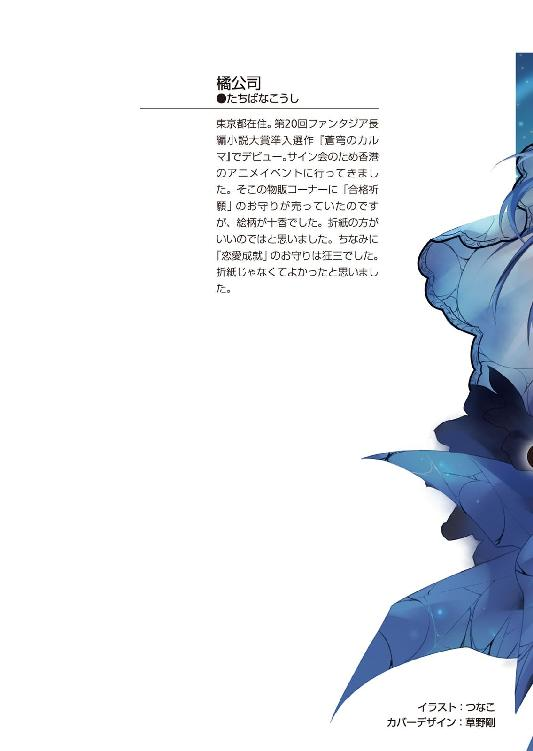
デート・ア・ライブ11
鳶一デビル
橘 公司

富士見ファンタジア文庫
本作品の全部または一部を無断で複製、転載、配信、送信したり、ホームページ上に転載することを禁止します。また、本作品の内容を無断で改変、改ざん等を行うことも禁止します。
本作品購入時にご承諾いただいた規約により、有償・無償にかかわらず本作品を第三者に譲渡することはできません。
本作品を示すサムネイルなどのイメージ画像は、再ダウンロード時に予告なく変更される場合があります。
本作品は縦書きでレイアウトされています。
また、ご覧になるリーディングシステムにより、表示の差が認められることがあります。
口絵・本文イラスト つなこ
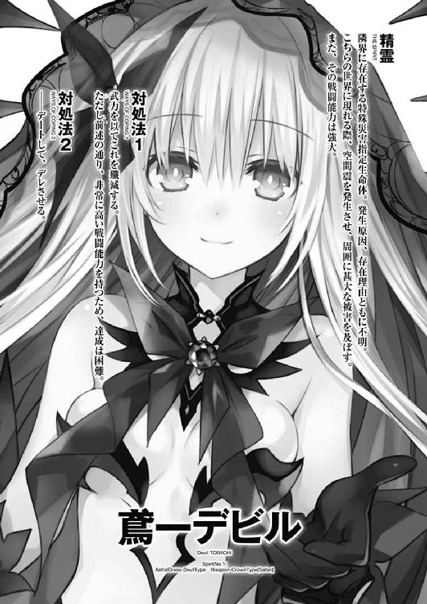
第六章 足搔く者
「......あのー、そろそろいいですかぁ？」
おずおずとかけられた声に、五河士道はハッと肩を震わせた。
どうやらしばしの間呆けてしまっていたらしい。声の方向を見やると、眼鏡をかけた小柄な女性──岡峰珠恵教諭、通称タマちゃんが、士道の方に手帳を広げながら困り顔を作っていることがわかる。士道があまりにまじまじとそれに視線を注いでいたものだから、そのまま動けなくなってしまっていたようだ。
「！ は、はい......ありがとう......ございます」
士道はそう言うと、小さく頭を下げてから姿勢をもとに戻した。
とはいえ、士道が手帳に目を奪われてしまったのも無理からぬことではあった。
理由は単純。そこに書かれていた日付は──『今』から五年前に当たる年のものだったのである。
士道はごくりとのどを濡らすと、改めて周囲の景色を見回した。
見たことがあるようでいて、記憶と微妙に違う街並み。
つい先ほどまでとは、季節がまるで違う景色。
そして──士道のことを知らないタマちゃん先生。
それらの要素は、彼女の手帳に記されていた信じがたい情報を少しずつ裏付けていった。
「じゃあ、私はこれで失礼しますよ......？」
タマちゃんが、首を傾げながら言ってくる。眉根を寄せて考え込んでしまっていた士道は、ハッと目を見開いた。
「あ、はい......すいません、ありがとうございました」
士道が言うと、タマちゃんは不思議そうに首を捻りながら、その場を去っていった。
その背を見送ってから、塀に背中を預ける。
「......五年前？ 冗談だろ？」
士道は額を押さえて呻きを上げた。荒唐無稽な出来事を笑い飛ばそうとする常識と、視界いっぱいに示された数々の証拠とが、頭の中でせめぎ合いを起こす。
それはそうだ。時間というものは不可逆にして不可侵。一度過ぎ去った時間に戻ることなど不可能だ。そんなことは一般的な教育を受けていれば、小学生のうちに理解することだろう。
だが。士道はそれを否定できずにいた。
脳裏を掠める一つの可能性。士道はこの世界に来る寸前に、とある少女に遭遇していたのである。
「狂、三──」
渇いたのどを湿らせながらその名を呟くと、士道の脳裏にその少女の姿が鮮明に思い出された。左右不均等に括られた漆黒の髪に、紅と黒のドレスに飾られた白い肌。そして、左目に刻まれた時計の文字盤。
狂三。時崎狂三。最悪の精霊と称される、未封印の精霊である。
彼女が持つ天使〈刻々帝〉。その能力は──時間を操ること。
時計の形をした天使の文字盤一つ一つに異なった能力が秘められており、その文字盤から漏れ出た影を銃弾に込めることで、撃った対象の時間の進みを早くしたり、時間を止めたりすることができるのである。
そして、この世界に来る寸前、士道は二発、狂三に銃弾を撃ち込まれていた。傷一つ残っていない額を撫でながら、ごくりと唾液を飲み下す。
条理から外れた存在である精霊と、天使。
彼女の力を以てすれば、或いは──
『──きひひ、ひひ』
「......ッ!?」
と。士道が考えを巡らせていると、どこからか小さな笑い声が聞こえてきた。
「だ、誰だ!?」
『あらあら、悲しいですわね。もうお忘れになってしまいましたの？』
その声に、口調に、士道はハッと息を吞んだ。
「まさか......狂三!?」
『ええ、ええ。うふふ、気づいていただけて何よりですわ』
声の主──狂三が、続けて言ってくる。奇妙な感覚。どこにも彼女の姿は見えないのに、声だけがハッキリと聞こえてくるのだ。まるで透明人間に耳元で囁かれているか、さもなくば頭の中に小人が居着いているかのような感覚だった。
慌てて右に、左に視線をやる。しかし、辺りに人影らしきものは確認できなかった。そんな士道の様子が可笑しかったのか、狂三がくすくすと笑う。
『うふふ、そんなことをしても無駄ですわよ。──だって、わたくしは今、士道さんとは別の「時間」にいるんですもの』
「な......!?」
狂三の発言に、士道は息を詰まらせた。
『それ』は先ほどから士道の心中に燻っていた可能性ではあったが、やはり改めて告げられると、強烈に心臓を締め付けた。あり得ないはずの世界に迷い込んだ感覚に、得体の知れない不安感が広がっていく。
しかし、士道は荒れそうになっていた呼吸をどうにか整えると、どこにいるとも知れない狂三に言葉を投げた。
「やっぱり──ここは、五年前の天宮市......なのか？」
『あらあら』
狂三が、意外そうな声を発してくる。
『もうそこが「いつ」なのか、気づいておられましたの？ うふふ、さすがですわね』
「......運がよかっただけだ。それより──説明してくれるんだろうな？」
士道が眉根を寄せながら言うと、狂三が『ええ』とうなずくように返してきた。
『お察しの通り、わたくしは士道さんを五年前の天宮市に送らせていただきましたわ。──〈刻々帝〉最後の弾、【一二の弾】の力によって』
「【一二の弾】......」
恐らく、〈刻々帝〉の有する能力の一つなのだろう。もとより強大な力を持つ天使であることは認識していたが、まさかこんなことまで可能だとは。
『そして、今士道さんとお話ができているのも、〈刻々帝〉の力ですの。【九の弾】。異なる時間軸にいる人間と、意識を繫ぐことのできる弾ですわ。──まあ、用途の限られる弾ですのであまり使い慣れておらず、意識を繫ぐのに少し手間取ってしまいましたけれど』
「意識を......繫ぐ？」
『ええ。こうしてお話ができるのはもちろんのこと、士道さんの見たもの、聞いたものを共有することができますの』
「......なんか、あんまりいい気分じゃねえな」
士道は視線を下方に向け、手を握ったり開いたりしてみた。この光景も、狂三に伝わっているのだろうか。......なんだか遠隔操作をされるロボットのような気分である。
『うふふ、ですから、あまり人に言えないような行為は控えることをおすすめいたしますわ。わたくしとしては一向に構いませんけれど』
「す、するかっ！」
冗談めかした狂三の言葉に、思わず叫んで返す。偶然道を歩いていた女性が、怪しい人物を見てしまったかのように足早に士道の後ろを通り過ぎていった。
「と、とにかくだ。今すぐ俺をもとの時代に戻せ！ 俺は今、こんなことをしてる場合じゃないんだ！ こうしている間にも十香たちが......！」
士道は拳を握り締めながら訴えかけるように叫びを上げた。
そう。士道は今すぐもとの時代に帰らねばならなかったのだ。
もとの時代の天宮市は今、未曽有の大災害に襲われていた。突然空に現れた折紙の反転体が空から無数の光線を放ち、街を滅茶苦茶に蹂躙していたのである。
十香や八舞姉妹、美九たちは折紙を止めようとし、四糸乃と七罪は街の人たちを助けるために奔走していた。加え、士道を助けるために駆けつけた〈フラクシナス〉は折紙によって墜とされ、琴里をはじめとしたクルーたちの安否もわかっていない。そんな状況から、精霊の霊力を封印することのできる士道がいなくなってしまったのである。もとの世界が一体どうなるのかは想像に難くなかった。
『まあ──そうですわね。こちらは酷い有様ですわ。見渡す限りの大地は焦土。如何に地獄でも、ここまで凄惨な光景はそうないでしょう』
「......！ だから、早く──」
だが。狂三はそんなこと百も承知というようにやれやれと息を吐いてきた。
『本当に、よろしいんですの？ 何もせぬままもとの時代に戻っても。せっかくわたくしが、〈刻々帝〉秘中の秘である【一二の弾】で、過去に送って差し上げたというのに』
「......っ!? どういう......ことだ？」
狂三の言ったことの意味がわからず、士道は唸るように声を上げた。
『そのままの意味ですわよ。──士道さんがあの絶望的な状況を挽回したいと思うのであれば、その五年前の天宮市で折紙さんをどうにかするほかありませんわ』
「折紙を......？ ちょ、ちょっと待ってくれ。意味がわからない。そりゃあ、ここにも折紙はいるだろうけど、五年前ってことはまだ小学生だろう？ 一体何を──」
『いいえ、違いますわ。士道さんが会うべきなのは、精霊化を済ませた折紙さんですわ。──わたくしの【一二の弾】で、この五年前に戻ってくるはずの』
「は......!?」
士道は思わず裏返った声を発した。
「折紙が......この時代に!?」
『ええ。士道さんの遡行には少し余裕を持たせましたから、まだ現れてはいないはずですけれど、そう時間を置かずにそちらの時代に送られるはずですわ』
「どういうことだ？ なんで折紙が五年前に......」
『両親の仇を討つため。正確には──「仇」になる前に、その敵を討つため、ですわ』
「............ッ!!」
淡々とした狂三の発言に、士道は心臓が引き絞られるのを感じた。
頭の中に点在していた情報が、一つに収斂されていく。
五年前、精霊に殺されたという折紙の両親。折紙が手に入れた人知を超えた力。そして──狂三の【一二の弾】。
「折紙は......〈ファントム〉を倒しにここに戻ってくるっていうのか......？」
五年前。火災の現場にいたもう一人の精霊を思い浮かべながら、士道は呟くように言った。
「でも、それならなんでもとの時代に戻ってきた折紙は反転してたんだよ！ 一体、この時代で何があったっていうんだ!?」
『さて......それはわたくしにもわかりませんわ。それを探るために、そしてそれを覆すために──わたくしは士道さんに【一二の弾】を撃ったのですもの』
「......なるほどな」
士道は先ほどから激しくなりっぱなしの動悸を抑えるように胸元に手をおいた。
五年前に戻った折紙の動向を探り、反転の原因を突き止め、それを解消する。狂三の言うことが正しいのならば、確かにそれしか方法はなさそうだった。
しかし──未だ一つわからないことがある。士道は、姿の見えない少女を睨み付けるように視線を鋭くしながら唇を動かした。
「......狂三。おまえの言うことが正しいとするなら、なんでおまえはこんなことをしてくれるんだ？ 俺だけじゃない。そもそも、折紙を五年前に送ったのだって折紙からの頼みだったんだろう？」
そう。それが腑に落ちない部分だった。
狂三は条理から外れた精霊の中でも、特に異質の存在である。確かに士道も以前狂三に助けられたことはあったが、それはあくまで利害が一致していたからに過ぎない。そんな彼女が、誰かのために天使を使うだなんてにわかには信じられなかった。
士道が言うと、狂三はしばしの間沈黙を作ってから、返してきた。
『別にわたくしに利がない......ということはありませんのよ？ 他者の霊力で【一二の弾】を試し撃ちできる機会なんてそうはありませんでしたし。でも......そうですわねえ』
すうっと息を吐いてから、狂三が続ける。
『強いて言うのであれば、証明して欲しいのですわ』
「証明？ 一体何を」
『──歴史は、人の力で変えられると』
そう言った狂三の声の調子が、いつものおどけたそれとは少し違う気がして、士道は思わず息を吞んだ。
「歴史、を......」
『ええ。わたくしに見せてくださいまし。この救いのない破滅を、希望の潰えた惨劇を、なかったことにしてみせてくださいまし』
「そんなこと......俺に、できるのか？ 歴史には修正力......とかいうのがあるって聞いたことがあるんだが......」
士道は難しげな顔をしながら言った。特別ＳＦに詳しいわけではない士道ではあるが、以前タイムリープものの映画を見た際に、そんな理論を聞いたことがあった。
要は、タイムマシンを用いて過去に戻り、何か歴史が変わるような重大な出来事を起こしたとしても、その変更点を修正するように似たような出来事が起こり、もとの歴史と近い世界が形成される、という話である。
だが。士道の言葉に、狂三はカラカラと笑った。
『異なことをおっしゃいますのね、士道さん』
妖しい吐息が士道の脳内に響く。この場に狂三がいたのなら、きっと挑発的に士道のあごをクイと持ち上げていたことだろう。
『それを提唱したのは一体どこのどなたですの？ その方は、実際に時を越えてその考えを実証されましたの？』
「そ、それは......」
『世界が如何に広かろうと、不可逆の時に干渉できるのは、この時崎狂三だけですわ。この〈刻々帝〉だけですわ。頭でっかちな学者や作家の戯言になど耳を貸さないでくださいまし。あなたが、士道さんが、その目で見たことのみが、ただ一つの真実ですわ』
狂三が、淡々とした調子で言う。
それはまるで、士道ではなく自分に言い聞かせているかのようだった。
「狂三......？」
『......お喋りが過ぎましたわね。余裕を持たせて【一二の弾】を撃ったとはいえ、いつまでもそちらにいられるわけではありませんわ。行動を開始いたしましょう』
狂三が気を取り直すように言ってくる。士道は歯を嚙みしめると、首を縦に振った。
未だわからないことは無数にある。だが、折紙の反転を止め、煉獄と化した街を救うためには、これしか方法がないことだけは確かなようだった。
「ああ......行こう、狂三」
言って士道は顔を上げ、爪先の向きを変えた。
折紙の狙いは両親を殺した精霊を倒すこと。そしてその相手は恐らく──〈ファントム〉。ならば、現れるのは火災現場である天宮市南甲町のはずである。
士道は意を決するように拳を握り、目的の場所へと走り出した。
正確な時刻はわからなかったが、日は既に傾きかけていた。しかし真夏の日差しは衰えることを知らず、士道の身体をジリジリと灼いてくる。手を、足を動かすたびに全身から汗が噴き出し、士道の体力を容赦なく奪っていく。
しかし、士道は止まらなかった。どれくらいの時間この時代に留まれるのかわからないという焦りもあったし──何より、もとの時代で十香や四糸乃たちが頑張っているのに、ただ黙っていることなどはできなかったのだ。
そして、どれくらい走った頃だろうか、士道は見覚えのある場所に辿り着いた。
「南甲、町......」
徐々に速度を緩め、荒い呼吸の合間にその街の名を呟く。
そう。そこに広がっていたのは、火災に見舞われる前の、天宮市南甲町の風景だった。
不思議な感覚。かつて住んでいた街の姿に、郷愁のような、懐古のような感情が微かに揺らめいた。
と──そのとき。
「あ......」
とあるものを発見した士道は、思わず足を止めてしまった。
『いかがされましたの、士道さん』
狂三が怪訝そうに問うてくる。しかし士道は、それに答えることができないでいた。
士道の目の前にあるもの。それは、一軒の家だった。
臙脂色の屋根が特徴的な、二階建ての家屋である。特に目を引くような特徴は見受けられなかったが......士道はそれを目にした瞬間、射すくめられたかのように動けなくなってしまっていた。
それは、五年前まで士道が住んでいた家だったのである。
とはいえ、士道はその家そのものに足を止められたのではない。
それを目にした瞬間、一つの考えが頭を掠めてしまったのだ。
五年前。今士道は五年前の天宮市にいる。折紙が精霊の手によって両親を失い、精霊を討ち滅ぼすことを心に誓った、その日に。
しかし、五年前にあったのはそれだけではなかった。折紙が仇と見えたまさにそのとき、街は炎に包まれていたのだ。
──士道の妹、五河琴里が起こした業火に。
狂三は言った。五年前に舞い戻った折紙と接触し、反転を『なかったこと』にしろ、と。
士道は思ってしまった。ならば......五年前〈ファントム〉によって琴里が精霊にされた事実をも、『なかったこと』にできるのではないか、と。
もし今琴里が家にいたなら、今日は公園に行くなと、〈ファントム〉と遭遇したであろう現場には近づくなと言い含めることができるのではないだろうか。
そんな考えが脳裏を過ぎったとき、士道の足は無意識のうちにかつての自宅に向かって動いていた。
朧気な記憶ではあるが、五年前の八月三日、士道は琴里への誕生日プレゼントを買いに街へ出ていたはずである。昔の自分と鉢合わせすることはないはずだ。士道は慣れた調子で門を開けると、庭を伝って家の裏手へと歩いていった。
その際、『五河』と書かれた表札が目の端に映る。それで狂三も士道の行動の意味を察したのだろう。少し強い語調で言ってきた。
『士道さん、お気持ちはわかりますけれど、琴里さんのことは諦めてくださいまし』
「折紙の方を疎かにするつもりはない......！ でも──」
『そういうことではありませんわ。もし琴里さんが精霊にならなかった場合、「そこ」から五年後にどのような影響が出るか、わからないではないでしょう？』
「......！ あ──」
言われて、士道はハッと目を見開いた。
琴里が精霊にならずに済む可能性に目が眩み、考えが及んでいなかった。もし琴里が今ここで精霊にならなかったなら──そもそも、琴里は〈ラタトスク〉に見出されないのだ。
そうなれば、士道が持つ封印能力が〈ラタトスク〉に知られることもなく、十香や四糸乃、耶俱矢に夕弦、美九、七罪たちの力を封印した事実さえ『なかったこと』になってしまうかもしれない。それだけは、絶対に避けなければならなかった。
士道は悔しげに歯嚙みすると、頭を小さく振った。
「......すまん。のぼせてたみたいだ」
『いいえ。過去をやり直すことのできる可能性というものは、人を狂わせる美酒にして毒杯。士道さんを責められはしませんわ』
狂三が、悟ったような口調で言ってくる。
士道は微かに眉根を寄せた。狂三の言葉には、先ほどと同様に、自戒めいたものが含まれている気がしてならなかったのである。
しかし、考えてみればそれも当然だ。過去を変え得る可能性。それは人間なら誰もが望むものだろう。そんな権能を自らの手に握っている狂三に、今まで一体どんな思案が、懊悩があったのかは、士道の想像が及ぶところではなかった。
「なあ、狂三、おまえは──」
と、士道が狂三に話しかけようとした瞬間、門の方から声が聞こえてきた。
「五河さーん、隣の鈴本ですけどもー」
「......!?」
士道は突然の声に肩をビクッと震わせた。
「いないのかしら......ちょっと入りますよー」
言って、門を開ける音が聞こえてくる。
五年前、隣に住んでいた鈴本さんである。よく田舎から送られてきた野菜などをお裾分けしてくれる人だったのだが......そういえば、士道たちが不在のときは、よく裏庭に面した軒先に、野菜が置かれていた記憶がある。
それ自体はありがたいことなのだが、今はタイミングが悪すぎた。何しろ今の士道はここにいるべき小学生ではなく、その五年後の高校生。どう見ても不審者なのである。もし通報などされたなら、貴重な時間を消費してしまうことになりかねない。
「ど、どうする......！」
そうこうしている間にも、鈴本さんの足音は近づいてきていた。慌てて辺りを見回すも、隠れられそうな場所はない。万事休すである。
──と、その瞬間。焦る士道の脳裏を、ある考えが掠めた。
「──あら？」
五河家の隣に住む主婦、鈴本尚子は、五河家の裏庭に足を踏み入れたところで、一人の少年の姿を認めた。
小学校高学年くらいだろうか。中性的で可愛らしい顔立ちが特徴的だった。
「士道くん、いたの。ごめんね、チャイム鳴らしても誰も出なかったもんだから」
「......い、いえ！ こちらこそすいません、聞き逃してたみたいで......」
この家の長男、五河士道が、なぜかぎこちない笑みを浮かべながらそう言ってくる。尚子は不思議そうに首を捻ってから、手にしていたビニール袋を士道に向けて差し出した。
「これ、田舎から送ってきたんだけど、良かったらみんなで食べて」
「あ、ありがとうございます。助かります」
士道がビニール袋を受け取り、ペコリと頭を下げる。
「......あら？」
「あの、どうかしましたか？」
「いえね、何か士道くん、いつもと雰囲気違う？」
「え!? い、いや、別にそんなことはないと思いますけど......」
「そう？ うーん......気のせいかしら。......まあいいわ。お母さんによろしくね」
「はい、ありがとうございます」
尚子は、士道の声を聞きながら、五河家の庭を出ていった。
「............はぁっ」
鈴本さんが庭からいなくなるのを見届けて、士道は大きな息を吐いた。
『うふふ、考えましたわね、士道さん』
「......ああ、上手くいってくれて本当によかったよ」
狂三が言ってくるのに、汗を拭いながら返す。すると額を拭う自分の手が、記憶にあるものよりも一回り小さくなっていることがわかった。
手だけではない。胴も、足も、果ては身に纏った服までも、全てが小さくなっている。
そう。お隣さんに姿を見られそうになったとき士道の頭を掠めたのは、かつて七罪が、その天使〈贋造魔女〉で、他の精霊たちを子供の姿にしてしまったときのことだった。
小学生の士道ならば、この場所にいてもおかしくはない。そして、士道は七罪の霊力をその身に封じている。ならばこういうことも可能なのではないかと試してみたのである。......十香の〈鏖殺公〉や四糸乃の〈氷結傀儡〉とは異なり、一度も発現させたことのない天使であったが、どうやら上手くいってくれたようだ。
「すまん、時間を取った。行こう」
士道は先ほど受け取ったビニール袋を軒先に置くと、狂三に呼びかけるようにしてからくっと全身に力を入れた。
だが。
「......ん？」
『いかがいたしましたの？』
「いや......これ、どうやったらもとに戻れるんだ？」
士道は頰に汗を垂らしながら眉をひそめた。咄嗟に変身してしまったものだから、戻り方がわからなかったのである。
『あらあら、困りましたわね。これから折紙さんのもとに向かわねばなりませんのに』
「ん......どうにかして元に戻らないと......」
と、士道が目を伏せ唸っていると、頭の中で狂三がクスクスと笑いを漏らした。
『士道さん、もとに戻られる前に、一度鏡の前に立ってはいただけませんこと？』
「え？ なんでだ？」
『わたくしからは、せっかく可愛らしくなられている士道さんのお顔が見えないんですもの』
「......おまえな」
士道は半眼を作りながらため息を吐いた。
が──その瞬間。
「......!?」
不意に空が赤く輝き、士道はバッとそちらに振り向いた。
整然と並んだ家々の屋根の向こうに巨大な火柱が屹立したかと思うと、次の瞬間、それが中空で弾け、辺り一帯が炎熱の波に襲われたのである。
広い街の全域が瞬く間に炎に包まれ、家や木々が燃えていく。辺りから幾つもの悲鳴や絶叫が上がり、街の住民たちが一斉に避難を開始した。
「これは......琴里の!?」
『どうやら、そのようですわね』
士道の言葉に、狂三が返してくる。士道は忌々しげに歯嚙みした。どうやら、琴里は既に例の公園に行ってしまっていたらしい。
そして、今。琴里は〈ファントム〉の手によって精霊〈イフリート〉にされたのだ。
「く......！」
士道はいても立ってもいられず、その場から駆け出した。身体は小さいままであったが、悠長なことは言っていられない。琴里が精霊化したということはそこに〈ファントム〉がいるということであり──折紙が、時を越えてこの場所にやってくるということなのだ。
しかし、避難をする住民の集団や、炎によって崩落した家屋が道を塞ぎ、上手く前に進むことができない。
士道は五年前の記憶を探りながら迂回路を通り、どうにか件の公園まで辿り着いた。
「......！ あれは──」
士道が公園に着いたとき。そこには三人の先客がいた。
一人は、泣きじゃくる幼い琴里。もう一人は、地面に倒れ伏した五年前の士道。
そして──その二人を見下ろすように立った、ノイズのような『何か』だった。
「〈ファントム〉......！」
と。士道がその名を呼んだ、そのとき。
天上から一条の光線が降り注いだかと思うと、〈ファントム〉の姿が搔き消えた。
「......！」
士道は頭の中で火花が散るような感覚を覚えた。
そうだ。士道はこの光景に見覚えがある。五年前。確かに〈ファントム〉目がけて空から光線が放たれたのだ。
士道はバッと顔を上げた。空──今し方放たれた光線の先を探るように。
すると、そこに一人の人物の姿を認めることができた。
幻想的な白のドレスに身を包み、幾つもの『羽』のようなものを従えた、美しい少女である。しかしその貌は今、憎悪や憤怒といった感情によって忌々しげな色に染まっていた。
「折紙......！」
士道は思わず叫びを上げた。そう。そこにいたのは、もとの時代から時を越えてやってきた、精霊・鳶一折紙だったのである。
折紙がどのようにして精霊化するに至ったのかは未だ謎のままだ。しかし、今の折紙はまだ反転体になってはいなかった。
恐らく──これから何かが起こるのだ。
折紙が。あの気丈な少女が、絶望の淵に立たされる出来事が。
空には折紙の他に、先ほど姿を消した〈ファントム〉の姿も確認できた。恐らく、折紙の一撃を避け、空に逃れたのだろう。
と、折紙が手を振ったかと思うと、折紙の周囲に浮遊していた『羽』から〈ファントム〉目がけて光線が放たれた。
それを合図にしたかのように、二人が空を駆け回り始める。
『士道さん、追ってくださいまし。見失ってしまいますわ』
「あ、ああ！」
士道は狂三の言葉に弾かれるように、二人を追って燃え盛る街を再び駆け出した。
折紙は連続して光線を繰り出し、〈ファントム〉を攻撃していたが、〈ファントム〉はそれを避けるばかりで、反撃らしい反撃はしていないようだった。まるで追いかけっこでもするかのように、空を縦横に飛び回る。
「折紙！ 折紙！ 俺だ！ 聞いてくれ！ 駄目なんだ、このままじゃ！」
士道はそんな二人を追いながら必死に声を上げたが、まるで反応は返ってこなかった。しかしそれも当然である。ただでさえ距離が離れている上、幾年も恨みを募らせ続けた仇敵を目の前にしているのだ。如何に折紙とはいえ、周りに注意を払えなくなっていたとしても不思議はない。
だが、だからといって諦めるわけにはいかなかった。二人の影を必死に追いながら、のどを震わせる。
「折紙！ 折紙！」
「折紙！」
と。
「え......？」
不意に響いた自分以外の呼び声に、士道は足を止め、視線を地上に戻した。
そこには、夫婦と思しき男女の姿があった。恐らく、燃え盛る家から逃げてきたのだろう。二人とも服が汚れ、身体にも細かい傷が見受けられた。
一瞬、なぜ彼らが折紙の名を呼んだのかと思った士道だったが──その理由はすぐに知れた。
彼らの前方に、小学生くらいの女の子の姿が見て取れたのである。
肩口をくすぐるくらいの髪に、利発そうな顔立ち。
そう、それは......五年前の折紙の姿だった。
「お父さん、お母さん──！」
折紙が、両親の無事を喜ぶように目尻に涙を浮かべ、声を上げる。
が、次の瞬間。
「............!?」
士道は視界が一瞬、真っ白に染まるのを感じた。
そしてそれに次いで、辺りを凄まじい衝撃波が襲い、小さくなっていた士道の身体が、軽々と吹き飛ばされる。
「ぐあっ！」
ブロック塀に打ち付けられ、士道は苦悶の声を漏らした。
『士道さん、大丈夫でして？』
「あ、ああ......なんとかな。それより──」
士道はどうにか身を起こすと、折紙と、その両親と思しき夫婦がいた方向に目をやった。
──そして。
「な──」
それを目撃して、士道は言葉を失った。
一瞬前まで夫婦がいた場所に巨大なクレーターができており、そこに、今の今まで人であったであろう幾つもの『部品』が無残に転がっていた。
常人であれば、思わず胃液を逆流させてしまうであろう、凄惨な光景。しかし、士道は目を見開いたまま動けずにいた。
なぜなら──見てしまったからだ。
その光景を、士道よりも近い位置で目にしている、五年前の折紙の姿を。
「あ、あ......あ......あああああ──」
折紙が掠れた声を響かせながら、両親であったものに縋り付くように地面を這う。
次いで、カタカタと歯の根を鳴らし、上空──降り注いだ光の根源を睨み付けるように顔を上げた。
そして、
「てん──し......」
空を見上げながら、折紙は小さな声で呟いた。
そんな折紙の声に弾かれるように顔を上げ──士道もまた呟く。
「......！ ま、さか──」
士道は、体表に虫が這っていくかのような悪寒を感じながら、震える声を発した。
そう。そこには。
純白の霊装を纏った、精霊・折紙の姿があったのである。
ここからでは、光を放つ精霊の顔は見取ることはできない。五年前の折紙の目には、辛うじて人型のシルエットが見えたのみだろう。精霊を知らぬ者がその影を『天使』と表するのは、無理のないことかもしれなかった。
「お、まえ、が......」
地面にへたり込んだ折紙は、その無垢な瞳に途方もない怨嗟を渦巻かせ、吼えるように声を響かせた。
「許、さない......！ 殺す......殺してやる......ッ！ 私が──必ず......っ！」
まさかその声が天高くまで届いているなどということはあるまいが、純白の霊装を纏った折紙は、その言葉が吐かれると同時に、身体を捩るように震わせた。
何も知らぬ者がその様を見たならば、哄笑を上げているようにも見えたかもしれない。
だが、その精霊が笑ってなどいるはずがないことは──士道には、はっきりとわかってしまった。
「何......だよ、......何なんだよ、これは......ッ」
時間にすれば僅かに数秒。だが、たったそれだけの間に全ては起き、全ては終わり──そして、士道は全てを理解してしまった。
五年前、両親が殺された現場に舞い戻り、その事実を『なかったこと』にしようとした折紙。
しかし、折紙は知ってしまったのだ。──両親を殺した、真犯人の正体を。
『......なるほど』
士道と視覚を共有しているという狂三が、頭の中に声を響かせてくる。
『折紙さんほどのお方がああなってしまうだなんて、よほどのことがあったとは思っておりましたけれど......』
と、狂三の言葉の途中で、空に浮かんだ精霊の姿が、空気に溶けるように消えていった。
「......!? 消えた......？」
『恐らく、【一二の弾】の効果限界ですわ。もとの時代に戻られたのでしょう』
「......っ、そんな！ それじゃあ......！」
士道は思わず叫びを上げた。それはそうだ。士道の、そして士道を五年前の世界に送った狂三の目的は、同じく五年前に舞い戻った折紙が、如何にして反転するに至ったかを探り、その原因を解消することであったのだ。
確かに反転の理由は、この上ない形で二人の前に示された。だがそれと同時に、目的そのものが消失してしまったのである。これでは歴史を変えることなどできるはずがない。
「い、一体どうしたら──」
途方に暮れた士道はそこでハッと息を詰まらせ、言葉を止めた。
理由は単純。地面にへたり込んでいた五年前の折紙に、焼け落ちた建物の一部が倒れ込んできたからだ。
「──折紙っ！」
士道は咄嗟にそう叫ぶと、言うが早いか折紙に飛び付き、そのまま二人で地面を転がった。次の瞬間、先ほどまで折紙がいた場所に燃えた建材が倒れてきて、土煙と火花を盛大に巻き上げる。
「ぐ......！」
このままここに居続けては危険である。士道は軽く咳き込みながらも折紙の手を取り、赤く染まった道を駆けていった。
そして、どうにか火の手が回っていないところまで逃げ延びてから、足を止める。それに合わせて、折紙がその場にガクンと膝を突いた。
「はぁ......っ、はぁ......っ、だ、大丈夫か、折紙？」
言って──自分の失策に気づく。咄嗟に行動してしまったが、この折紙は士道のことを知らないはずである。名前を呼んでしまったのはまずかったかもしれない。
が、そんな士道の懸念は杞憂に終わった。
折紙は、見知らぬ人間に名を呼ばれたことなどまったく気づいていない様子で、ただ身体を震わせ、虚ろな目で空を見上げていたのである。
否──虚ろ、という表現も適当ではないのかもしれなかった。
憤怒、怨嗟、喪失、悲哀──人間の持ちうるあらゆる負の感情がない交ぜになり、その色を濁らせていたのだ。
「お父......さん、お母、さん......」
折紙が、乾いた唇を動かし、消え入るような声を発する。
「............っ」
そのあまりにも痛ましい様に、士道は思わず顔を歪めた。
「わ、たし、は──」
「............折紙ッ！」
何をしたらよいのかわからなかった。何を言えばよいのかわからなかった。だが、彼女をこのままにしておくことだけはできなかった。半ば無意識のうちに、士道は折紙を両手で抱きしめていた。荒れ狂う感情の波を抑え込むように、震える手で、強く、強く。
「......、っ、あ、なた......は......」
そこで初めて、折紙が士道の存在に気づいたように、小さな声を漏らす。
「大丈夫だ！ 大丈夫、だから......！」
士道は折紙を抱きしめたまま、嗚咽するように、呻くように言った。それがあまりに無責任な言葉であるという自覚はあった。だが、言わずにはいられなかったのだ。
小さくなった士道の両手で抱きしめられてしまうくらいの小さな小さな女の子が立ち向かうには、世界はあまりに酷薄で、無慈悲に過ぎた。
この少女がこれから歩むであろう艱難辛苦の道と、その果てに辿り着くであろう『真実』。そのあまりに残酷な結末に、士道は叫ばずにはいられなかった。
「折紙......きっと......おまえはいつか気づく。全てに、真実に......！ でも──忘れないでくれ！ おまえは、一人じゃない......！」
「何を、言って......」
折紙が、困惑したような声を返してくる。それも当然だ。だが、士道は言葉を止めることができなかった。
「おまえの哀しみは、俺が引き受ける......！ おまえの怒りは、俺が受け止める......！ 迷ったなら、俺を頼れ！ どうしようもない事態に直面したら、俺を使え！ 全部、全部俺にぶつけてくれて構わない！ だから、だから──」
折紙を強く抱いたまま、続ける。
「絶望だけは──しないでくれ......ッ！」
「............っ」
折紙は、呆然と士道の声を聞いていたが──やがて、微かに身体を震わせ始めた。
「──ぁ、う、ぁ......、うぅ、うぁぁぁ......っ、あぁぁぁ......っ」
折紙は士道の服を摑むと、その胸に顔を埋め、押し殺したような声で泣き始めた。
士道の登場によって緊張の糸が切れたのか、今になって両親を失った哀しみが押し寄せてきたのか。その判別はつかなかったが──今このとき、ようやく折紙は、年相応の女の子らしい感情を覗かせた。
「お父、さん......、お母さん......っ──」
「折紙......」
士道は、泣きじゃくる折紙の背を撫でるように、震える手に力を込めた。
そして──どれくらいそうしていただろうか。
「............、ありがとう、ございます......」
ひとしきり泣き終えた折紙が、小さな声でそう言って、士道の服から手を離し、その場に立ち上がった。
そして、袖で涙を拭うようにしてから、真っ赤に充血した目を士道に向けてくる。
「あなたは......一体、誰ですか？」
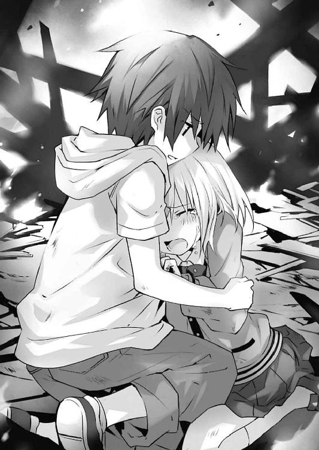
「っ、あ、え、ええと──」
考えてみれば至極当然の質問だったのだが、急に問われて士道は当惑してしまった。そんな答えなど考えず、咄嗟に飛び出してしまっていたのだ。
変に誤魔化してしまっても仕方がない。士道は意を決して、折紙の目を見返した。
「俺は......五河士道。近所に住んでる者だ」
「五河......士道」
折紙は、士道の名を反芻するように呟いてから、くるりと踵を返した。
まるで──自分の表情を、士道から隠すかのように。
「......、今、言ったことは、本当ですか？」
「え......？」
「全部、引き受けてくれるんですか？」
「あ、ああ......！ 本当だとも」
折紙の言葉に、士道は大きくうなずいた。半ば無意識のうちに出た言葉ではあったが、その内容に噓はなかった。
「そうですか。なら──」
すると、折紙は士道に顔を見せぬまま、続けた。
「私の涙は、あなたに預けます。私の笑顔は、あなたにあげます。喜びも、楽しいことも、全部、あなたが持っていてください」
「え──？」
予想外の言葉に、士道は目を見開いた。
「──私が泣くのは、今が最後です。私が笑うのも、これが最後です」
言って、折紙が一瞬、士道の方を振り向いてくる。
その涙に濡れた笑顔に、士道は何も言えなくなってしまった。折紙が、再び顔を背ける。
「でも、この怒りだけは、私のもの。この醜い感情は、私だけのもの。──私は、殺す。あの──天使を。どんなに時間がかかっても。どんな手段を使ってでも」
「────」
天使。その単語に、士道は小さく指先を震わせた。
だが、言えなかった。あの精霊が、未来の折紙であるなどとは。このあまりにも小さな少女には、告げることができなかった。
「だから、それまで、あなたが預かっていてください。私が──天使を、殺すまで」
折紙が、背を向けたまま言ってくる。
「折──紙......」
士道は、呆然とその名を呼ぶことしかできなかった。
そんな士道を一人残して、あまりに幼い復讐鬼は去っていった。
◇
「............」
闇降る夜の中で。狂三は物憂げに息を吐いた。
「そういうこと、ですの......」
士道と感覚を共有している狂三の目には今、二つの光景が映り込んでいた。
瞼を開ければ、反転した折紙が空から放つ漆黒の光線によって破壊され尽くそうとしている街並みが、瞼を閉じれば、精霊に復讐を誓って去っていく、五年前の折紙の背中が、それぞれ視界に広がった。
──今。狂三は士道とともに全てを知った。五年前から戻ってきた折紙が反転体となっていた理由を。
「皮肉なものですわね」
顔を上げ、漆黒の空に浮かんだ折紙の姿を見やる。
とはいえ、今狂三の視線の先に在る精霊に、狂三の知る折紙らしさは微塵も残っていなかった。
喪服のような漆黒の霊装に身を包んだ精霊が、まるで羊水の中を漂う胎児の如く身体を丸め、空中を漂っている。その周囲には大小無数の『羽』が円を描くように浮遊し、眼下の地上に絶え間なく破壊の意志を伝えていた。
「これは──どうしたものですかしらねえ」
あごを撫でながら、狂三は呟いた。
士道を五年前に送ったはいいが、結局できたのは折紙反転の原因を突き止めることのみである。これでは──
と。
「......あら？」
狂三は不意に眉の端を揺らすと、後方を振り向いた。
理由は単純。狂三の背後で、小さな足音がしたからだ。
「どちらさまですの？ 何かわたくしにご用でして？」
謎の来訪者を牽制するように言う。
すると一拍おいて、その声に応ずるように、何者かが足を踏み出してきた。
「......！ あなたは──」
狂三は、予想外の人物の登場に、目を丸く見開いた。
◇
「......、俺、は──」
ただ折紙の背を見送ってしまった士道は、地面に膝を突いた。
途方もない無力感が肺腑を満たす。結局、士道は何をすることもできなかった。
すると、そんな士道の動作に反するように、視界に映る地面が少しずつ離れていく。
「え......？」
一瞬、自分の意思とは裏腹に身体が動いているのかとも思ったが──違う。自分の身体に視線を落とすと、それが先ほどまでの子供のそれから、もとの大きさに戻っているのが見て取れた。霊力が切れたのか、タイムリミットがあったのか、それとも別の理由からか......詳しいことはわからなかったが、七罪の能力が解除されたらしい。
と、そんな士道の頭の中に、苛立たしげな狂三の声が響いてくる。
『......気に入りませんわね』
「......、すまない。せっかくおまえが【一二の弾】を使ってくれたっていうのに......」
『そういうことではありませんわ』
だが、士道の謝罪に対し、狂三はため息交じりに言葉を続けてきた。
『──折紙さんの両親の仇が、折紙さん自身......？ なるほど、確かにそれは彼女が絶望するに足る理由かもしれませんわ。ですけれど──それは、明らかにわたくしの〈刻々帝〉なしには起こりえない事象......』
ギリ、と奥歯を嚙みしめるような音が聞こえてくる。いつも飄々とした様子の狂三には珍しい行動だった。
『士道さん。お尋ねしますけれど、折紙さんと初めてお会いしたのはいつのことですの？』
「え......？ そりゃあ......高二の頭にクラス替えがあって、そのときに──」
『もしやそのとき、士道さんは初対面のつもりでも、折紙さんは士道さんのことを存じ上げていたのでは？』
言われて、士道は思い出した。確かにあのとき、折紙は士道の名を知っていたのだ。
「あ──」
そこで、士道は気づいた。
折紙が士道のことを知っているのは当然だったのだ。
なぜなら──『五年前』、まさに『このとき』、折紙は士道に会っていたのだから。
士道の反応に、狂三がさらに不機嫌そうにのどを鳴らした。
『面白くありませんわね。不快ですわ。とても──不愉快ですわ』
「狂三......？」
『折紙さんが精霊を憎むに至った原因。士道さんと折紙さんの出会い──もとの世界を構築していた要因に、悉くわたくしの力が関わっている。もしわたくしが折紙さんを、そして士道さんを五年前に送らなければ、もとの世界は作られなかった......』
狂三が、独白するように言う。
確かに、その通りかもしれなかった。狂三という精霊がいなかったのなら、〈刻々帝〉という天使がなかったのなら、そもそも士道たちが生きていた世界は、また違ったものになっていただろう。
「で、でも、狂三だって、こんな結末を作るために〈刻々帝〉を使ったんじゃないだろう......？」
『ええ、もちろんですわ。でも、「歴史を変えようとした行動」そのものが、今ある歴史を、世界を構築するための要素だった。必死にもがいたつもりでも、結局「世界」という絶対的な存在の手のひらの上で踊っているに過ぎなかった。──その事実が、どうしようもなく腹立たしいのですわ』
「......っ」
吐き捨てるような狂三の調子に、思わず士道は息を吞んだ。
だがそれと同時に、頭の中に一つの考えが思い浮かび......口を開く。
「狂三......おまえにも何か、やり直したいことがあるのか？」
『......、あら、あら』
士道が言うと、狂三は一瞬無言になってから、いつものおどけるような調子に戻った。
『そういうことならば、士道さんとの出会いをやり直してみるのは面白いかもしれませんわ。──うふふ、今の私であれば、確実にあのとき「いただく」ことができますわよ？』
「............」
狂三の言葉に、士道は口を噤んだ。とはいえそれは、狂三の不穏な発言に恐怖を抱いたからではない。あからさまに、狂三が士道を煙に巻こうとしているのを察してしまったからだ。
言いたくないことを無理矢理言わせるような趣味はない。それに、今はそんなことよりも気にせねばならないことが溢れていた。
「......、でも、何にせよ、全部終わっちまった」
士道は悔しさに拳を固めながら言った。
折紙がもとの世界に帰ってしまった以上、折紙の反転を止めることはできない。両親が殺される光景を五年前の折紙に目撃させてしまった以上、彼女の復讐心を消すこともできない。狂三の言葉を借りるのならば、結局士道は、世界の手の上で踊っていただけなのだ。
あとどれくらい【一二の弾】の効力が続くのかはわからなかったが、じきに士道ももとの世界に戻されるのだろう。反転した折紙が大地を蹂躙する、あの悪夢のような世界に。
『そう......ですわねぇ』
狂三が、士道の言葉に返答するように言ってくる。
『確かに、その通りですわ。士道さんは、折紙さんを止めることができなかった。世界を変えることができなかった。──それが、「この世界」において決定してしまった「未来」だそうですわ』
「......狂三？」
士道は眉をひそめた。狂三の言い回しが、少し奇妙な気がしたのである。
士道の不審感を察したのだろう、狂三がくすくすと笑う。
『どうやら、もうそれは決定してしまったことのようですわね。──今し方、そう聞きましたわ』
「聞いた......って、一体、誰に？」
『──今から数十分後の士道さんに、ですわ』
「は......？」
狂三の言っている意味がわからず、士道は目を丸くした。
「それって、どういう......」
『そのままの意味ですわ。「今」から数十分後。「士道さんが五年前から、何も成せずに帰ってきたあとの世界」のわたくしが、【一二の弾】を使って未来の士道さんを寄越してきたのですわ。まあ、霊力を節約したのか、一分程度でもとの時代に戻ってしまったため、あまりお話はできませんでしたけれど』
「......ッ!? そっちの世界の、さらに未来の狂三が......!?」
士道は驚愕に目を見開いたが──よくよく考えてみれば、不可能な話ではない。
士道も折紙も、狂三の手によって五年前の世界にやってきているのだ。未来にも狂三がいる以上、その力によって未来の誰かを現代に送り込んでくることも可能だろう。
だが──そこで。士道に、一つの疑問が生じた。
「未来の俺が......なんでわざわざ時を越えてやってきたんだ？」
そう。考えてみれば不自然な話だった。
【一二の弾】は狂三の奥の手であるはずだ。ただ絶望的な未来を伝えるためだけに、貴重な時間を消費してそんな弾を撃つとは考えづらかった。
そんな士道に応ずるように、頭の中で狂三が『ええ』と答える。
『折紙さんを止めることに失敗した士道さんは、失意のままに【一二の弾】の効果限界を迎え、もとの世界に戻ってきたようですわ。──でも、そのあと、一つの考えに辿り着いたそうですの』
「一つの......考え？」
『ええ。でも、もとの時代に戻ってしまった士道さんには、もうそれを成すことはできなかったのですわ』
「......！ そう、か──」
だから、未来の士道は狂三に頼んで、数十分前の狂三に──「まだ士道が五年前の世界にいる状態の」狂三に、その思いつきを伝えたのだ。
歴史を作り替えるため。
決まってしまった未来を打破するため。
──過去の自分に、望みを託したのだ。
士道は、冷え切った身体に、再び火が灯るのを感じた。
「狂三......！」
『ええ、まだ終わってはいないようですわね。──やりますわよ、士道さん。このくそったれな世界を、ぶち壊して差し上げましょう』
狂三らしからぬ表現に、士道は思わず吐息を漏らし、唇の端を上げた。
「ああ......何だってやってやる。みんなを──折紙を救えるなら」
『うふふ、そうこなくてはなりませんわ』
士道の奮起を感じ取ったのだろう。狂三が士道の頭の中で愉快そうに笑った。
「それで......その方法っていうのは何なんだ？」
『ええ。──考えてみれば、当然に過ぎる事柄ですわ。でも確かに、失意に沈み焦燥に駆られた状態の士道さんでは、思いつくことができなかった方法かもしれませんわね』
「ぐ......」
言われて、士道は頰に汗を垂らした。
「と、とにかく......時間がないんだろう？ 早く動こう」
『ええ、ええ、そうですわね。時は金よりも尊し、ですわ』
冗談めかすように言ってから、狂三が続けてくる。
『士道さんが折紙さんを止められなかったもっとも大きな理由。それは、「何が起こるのか知らなかった」、これに尽きますわ』
「ああ......確かに、そうかもしれない」
士道は苦々しい顔を作りながらうなずいた。
もとの世界からやってきた折紙の姿を認めた次の瞬間には、もう〈ファントム〉との戦いが始まり──息つく間もなく、全ては終わってしまった。もしこの顚末を事前に知っていたならば、打てる手もあっただろう。
と、狂三がどこか物憂げにふうと息を吐いてくる。
『正直あまり気は進まないのですけれど......手がないわけではありませんわ』
「え......？ ど、どうするんだ？」
『単純な理屈ですわよ。──もう一度、やり直せばいいのですわ』
「......は？」
狂三の言葉に、士道は素っ頓狂な声を発した。
「そ、そりゃあそうだが......そっちに戻ったあと、また【一二の弾】を使って五年前の世界に送ってくれるっていうのか？」
『その方法はあまり現実的ではありませんわね。一度【一二の弾】を撃った段階で、士道さんの身体に蓄えられた霊力は相当量消費されているはずですわ。不可能ではないかもしれませんけれど、のちにわたくしが「いただく」分がなくなってしまうのは困りますわ』
「......おまえな。ていうか、この時間遡行も俺に封印されてる霊力使ってたのかよ」
『うふふ、それはそうですわ。如何に気まぐれを起こしたとはいえ、わたくしは、自身の霊力を使って差し上げるようなお人好しではありませんことよ？』
狂三が、何か問題でも？ と言うように言ってくる。いろいろ不満はないでもなかったが、士道はとりあえず黙っていることにした。狂三が、あとを続けてくる。
『でも、今士道さんがいる時代からなら、僅かな時間の遡行でやり直しが利くはずですわ』
「......！ あ、そ、そうか──！」
確かに、狂三の言うとおりである。
『──【一二の弾】の重ねがけ。なるほど、面白い発想ですわ。まあもちろん......最初に撃った弾の効果が続いている間にことを成さねば、士道さんは強制的にもとの時代に引き戻されることになるとは思いますけれど』
「っ、なら、早くしないと！ 狂三、急いで俺に【一二の弾】を！」
だが。狂三は呆れたようにため息を吐いた。
『今のわたくしは、あくまで士道さんの感覚器官を間借りしているだけでしてよ。こちらからその時代に干渉することはできませんわ。いわんや、〈刻々帝〉の弾を届けるだなんて』
「じ、じゃあ、どうするっていうんだよ！」
士道がたまらず叫びを上げると、狂三は耳に息を吹きかけるように小さく吐息してからあとを続けてきた。
『──あるではありませんの。一つだけ、方法が』
「え......？」
狂三の言葉に、士道は眉根を寄せた。
それから数分後。士道は火災現場近くに聳えたビルの非常階段を上っていた。
「はぁ......っ、はぁ......っ」
先ほどから運動しっぱなしの身体は、とうに悲鳴を上げていた。夏の暑さと炎の熱で、容赦なく体力が奪われている。
だが、泣き言は言っていられなかった。もうこの時代に留まっていられる時間も残り少ないのだ。ガンガンとけたたましい音を立てながら、非常階段を上っていく。
そして、程なくしてビルの屋上に至った士道は、息を荒くしながら辺りを見回した。
「ここで......いいのか......？」
『ええ、多分間違いないと思いますけれど』
「多分って、おまえな......」
曖昧に返してくる狂三の言葉に半眼を作る。士道は呼吸を整えながら足を動かし、入り口から死角となっている場所を見渡そうと、屋上の端へと向かっていった。
住宅街を見下ろすように建つビルの屋上からは、未だ勢いよく燃え盛る南甲町の景色がよく見えた。辺りから消防車と救急車のサイレンがひっきりなしに鳴り響き、夕暮れどきの街をいやに賑やかにしている。
「............」
士道は、そんな凄惨な光景から目を逸らすように視線を外すと、見落としがないように再度ビルの屋上を見回すように首を動かした。
だが──そこには何も見受けられない。
「おい、誰もいないぞ。勘違いじゃないのか......？」
『おかしいですわね。そんなはずは──』
と。
狂三の言葉の途中、士道は背筋に冷たいものを感じ、その場から動けなくなった。
「......、あ──」
──背後に、誰かがいる。
士道はそれを本能的に感じ取り、ごくりと息を吞んだ。
すると、それに応ずるように、後方から士道の来訪を面白がるような声が響いてきた。
「──あら、あら」
聞き覚えのある、声音が。
「............」
士道は、己の背後に立った絶対的な捕食者を刺激しないよう、両手を上げながらゆっくりと後方に振り返った。
──そこには。
「これはこれは。こんなところにお客様だなんて、珍しいですわね」
そう言って妖しい笑みを浮かべる、時崎狂三の姿があった。
第七章 幻影
「五年前の──狂三......!?」
ビルの屋上に至る数分前。士道は狂三の言葉に驚愕の声を発した。
『ええ。先ほど申しました通り、この世界で時間に干渉できるのはわたくしのみですわ。そして──その時代において〈刻々帝〉を持つ者はただ一人。五年前のわたくしのみでしてよ』
「でも、俺がこっちにいられる時間は限られてるんだろう？ 今から探したんじゃ──」
『心配はいりませんわよ。確か五年前、わたくしはその近くを訪れていたはずですわ』
「この近くを......？」
あまりに都合のいい偶然に、士道は眉をひそめかけたが、「あ」と目を丸くした。
「......もしかして、狂三も五年前、俺に会ったことがある......なんて言わないよな？」
『いいえ。わたくしの記憶が確かであれば、そういったことはなかったはずでしてよ。その街の近くを訪れていたのも、突如起こった火災の様子を見に来ただけですわ』
「火災を見に？」
『これほどの災害、もしかしたら精霊さんが関わっているかもしれないではありませんの』
「............」
狂三の言葉に、士道は汗を滲ませた。......もし士道が琴里の力を封印していなかったなら、二人は狂三に発見され、力の糧にされていたかもしれないと考えて。
士道の沈黙から何かを感じ取ったのか、狂三が小さく笑ってくる。
『いやですわ。わたくしだって、そこまで節操がないわけではありませんわよ』
「......お、おう」
士道は曖昧に返事をすると、気を取り直すように咳払いをした。
するとそれに合わせるように、狂三が言葉を続けてくる。
『わたくしは五年前、その近くにいた。しかし、士道さんには会っていなかった......これは保証いたしますわ。でも──いえ、だからこそ、この行動には意味がある』
「どういうことだ？」
『考えてみてくださいまし。士道さんが、士道さんと出会わなかったはずのわたくしと出会えたなら──それだけで、僅かとはいえ歴史が変わったことにはなりませんこと？』
「確かに......そうかもな」
『とにかく、急ぎますわよ。先ほども申しました通り、あまり余裕はありませんわ』
「ああ──わかってる」
言うと、士道はグッと拳を握った。
「狂三、教えてくれ。俺は、どこへ行けばいいんだ？」
士道は意を決すると、頭の中の狂三の声に問うた。
そして──今に至る。
「............」
士道は、早鐘のように鳴る心臓の鼓動をどうにか落ち着けるように深呼吸をしながら、ビルの屋上に立った一人の少女の姿をジッと見つめた。
そこにいるのは、士道の記憶と寸分変わらぬ姿をした狂三だった。
否──正しく言うのなら、変わらないのは年格好のみで、その装いには幾分か違いがあった。レースとフリルで飾られたモノトーンのブラウスにスカート。髪は括っておらず、その代わり薔薇の飾りがついたカチューシャを着けている。
もっとも特徴的だったのはその顔だろう。時計の文字盤を覆い隠すように、左目に医療用の眼帯を装着していたのである。
その装いに、士道は微かに眉根を寄せた。そして、頭の中の狂三にしか聞こえないくらいの声で問いかける。
「......狂三？ なんで眼帯なんてしてるんだ？」
『気にしないでくださいまし』
「もしかして、怪我してたのか？」
『気にしないでくださいまし』
「でも......」
『気・に・し・な・い・で・く・だ・さ・い・ま・し』
強い語調でそう言われ、士道はむうと黙り込んだ。
するとそれに合わせるように、目の前に立った五年前の狂三が反応を示してくる。
「あらあらあら」
狂三はそう言うと、おどけるような仕草で、可愛らしく小首を傾げてみせた。
「何をぶつぶつと仰っていますの？ こんな場所に何かご用でして？」
気安い口調で、狂三が言ってくる。とはいえ、そこに油断らしきものは微塵も見受けられなかった。表情こそ笑みの形にされているものの、その目は、静かに、だが正確に、士道の容貌や挙動を観察している。
しかし、士道には時間がなかった。意を決して口を開く。
「狂三！ 頼みがある！」
「......あら？」
士道が名を呼ぶと、狂三は不思議そうに眉を歪めた。
「わたくしの名をご存じだなんて......あなた、一体何者ですの？」
言いながら、狂三が右手を掲げる。すると、狂三の足下に広がった影から、古式の短銃が一挺飛び出してきて、綺麗に狂三の手に収まった。
そのまま、流れるような動作で狂三が銃口を向けてくる。士道は慌てて手を振った。
「ちょ、ちょっと待ってくれ！ 敵対する意志は──」
言いかけた瞬間、士道の足下の床に銃弾が炸裂した。
「うわっ！」
「わたくしの許可なく動かないでくださいまし。──いくつか質問をしますわ。正直に答えなかった場合は、命の保証はしかねますわよ」
質問に答えなければ、今度は心臓を撃ち抜かれそうだった。手を上げながら口を開く。
「お、俺は五河士道。今から五年後の世界から来た！ 狂三......おまえの力を借りて！」
「......、今、何と申されまして？」
士道が言うと、途端に狂三はその表情を変化させた。
「冗談で言っているのであれば、火遊びでは済みませんわよ」
「冗談なんかでおまえの前に立つもんか......！ 頼む、話を聞いてくれ！」
「............」
狂三が、士道の真意を測るように目を細める。すると、そんな様子に呆れるように、士道の頭の中に声が響いた。
『あらあら......昔のわたくしは随分慎重ですのね。──あまり時間をかけたくありませんわ。士道さん、どうにかして、あのわたくしに触れてくださいまし』
「触れろ......って、無茶言うなよ」
「......何か仰いまして？」
士道に銃口を向けた狂三が、怪訝そうに眉根を寄せる。とはいえそれも当然だ。彼女から見れば、士道が盛大な独り言を呟いたようにしか見えなかったろう。
士道は、もう一発くらい弾を撃たれることを覚悟で、狂三に向けて手を伸ばした。
「頼む。銃を向けたままでいい。俺の手を握ってくれないか」
「得体の知れない相手にそんなことを言われて素直に従うほど、わたくし、純情な乙女ではありませんわよ？」
「『狂三』が──話をしたいって言ってるんだ」
「......っ！」
士道の言葉に、狂三がピクリと眉の端を上げた。もとの時代の狂三と士道が感覚を共有しているのだって、そもそも狂三の能力によるものなのだ。この狂三にも、思い当たることがあったのだろう。
「ふうん......そうですの」
狂三が油断なく士道を睨め付けながら歩みを進め、士道の手に触れてくる。
すると、
「......！」
と、まるで微弱な電流でも流されたかのように、狂三の身体が小さく震えた。
『お久しぶり......ということになりますかしら？ わたくし』
「......なるほど。これは確かにわたくしの声......ですわね。──一体五年後の世界で、何が起こりましたの？」
どうやら五年前の狂三にも、士道の頭の中に響く狂三の声が聞こえているらしい。なるほど確かにこれならば、どんな説得よりも効果があるだろう。
もとの世界の狂三は、状況を簡潔に説明した。自分たちが歴史の改変に失敗したこと。そして──それをもう一度やり直すために、この時代の狂三の力を借りたいことを。
「......【一二の弾】をこの方に撃てと、そう仰りますの？ わたくし」
『ええ。その通りですわ。お願いできますかしら、わたくし』
五年前の狂三はしばしの間沈黙を作り──そののち、小さなため息を吐いた。
「......いいでしょう。微力ながら、お力添えをさせていただきますわ」
「！ ほ、本当か!?」
「ええ。──ただし、必要分の霊力は、あなたから徴収させていただきますけれど」
狂三は士道から手を離し、トン、トン、とステップを踏むように後方へ下がった。そして、踵同士を打ち鳴らすと同時、左手を高く掲げてみせる。
「さあ、さあ、おいでなさい〈刻々帝〉。あなたの出番ですわ」
狂三の呼び声に応えるように、影の中から、巨大な時計の文字盤が姿を現す。天使〈刻々帝〉。士道をこの時代に送り込んだ、時を操る狂三の天使である。
そしてそれと同時、狂三の足下に蟠っていた影が膨張するようにその面積を増したかと思うと、士道の足下に絡みつくようにその手を伸ばしてきた。
次の瞬間、凄まじい倦怠感が全身を襲う。
「う、ぐ......」
この感覚には覚えがあった。もとの世界からこの時代に送られる直前、狂三に捕まったときと同じ感覚だ。
「〈刻々帝〉──【一二の弾】」
狂三が手にした銃を直上に掲げる。すると〈刻々帝〉の『Ⅻ』の文字盤から濃密な影が滲み出て、その銃口に収まった。
「さあ。では、いきますわよ」
狂三がゆっくりとした動作で銃口を向けてくる。【一二の弾】に痛みが伴わないことは知っていたが、士道は反射的に身を強ばらせた。
その様子を見てか、狂三はニッと唇の端を上げた。
「士道さん......と仰いましたわね。──健闘を祈りますわ」
「......ああ、ありがとうよ。──それと、狂三」
「？ なんですの？」
「その眼帯、俺は似合ってると思うぞ」
『......ッ』
「あら？」
士道の言葉に、頭の中の狂三が息を詰まらせ、目の前の狂三が頰を緩める。
「──お褒めにあずかり光栄ですわ。では、また五年後に、お会いしましょう」
そして最後にそう言うと、狂三は凄まじい霊力によってカタカタと震える銃を制し、引き金を引いた。
銃口から士道の胸へ向けて、一直線に漆黒の軌跡が引かれる。
【一二の弾】が着弾した瞬間、士道は自分の身体が、弾の回転に巻き込まれるように螺旋状になっていくのを感じた。
そして弾の勢いのまま、渦に飲み込まれるように──士道の視界は、真っ暗になった。
◇
『──道さん、士道さん』
「......っ！」
頭の中で響く声に呼ばれ、士道はハッと目を見開いた。一拍おいて、自分がその場に仰向けに倒れ込んでいることがわかる。
士道がいたのは、先ほどと同じビルの屋上だった。否、先ほどと同じ、という表現には語弊があるだろうか。屋上には五年前の狂三の姿がなく──何より、そこから見える南甲町に、火の手が上がっている様子がなかったのである。
「成功──したのか」
『そのようですわね』
士道の独白に、狂三が応えてくる。
そう。正確な時刻こそわからなかったが、士道は再び時を越え、舞い戻ったのだ。
火災が起こる前の世界に。
琴里が精霊になる前の世界に。
──折紙が、両親を殺してしまう前の世界に。
『感慨に耽っている時間はありませんわよ、士道さん』
「ああ......わかってる」
狂三に言われて、士道はその場に立ち上がり、眼下に広がる南甲町の景色をもう一度一望した。拳を握り、声のみの狂三に呼びかけるように、呟く。
「──世界を、変えにいこう」
狂三が、一瞬息を吞むように間を空けてから、『ええ』と、うなずくように返してくる。士道はその返答を聞くが早いか、非常階段を伝ってビルを下りていった。
「でも、火災が起こる前に戻ってくるのには成功したけど──具体的にはこれから何をすればいいんだ？」
『せっかく格好良く出発しましたのに、いきなり台無しにしてしまいますのね』
士道の言葉に、狂三が呆れるような、からかうような声を発してくる。
「ぐ......し、仕方ねえだろ！......ていうかなんか、さっきから口調が冷たくないか？」
『そんなことはありませんわ』
拗ねるように、狂三が言ってくる。......何か気に障ることを言ってしまっただろうか。
「狂三、もしかしてあの眼帯」
『とにかく』
狂三が、士道の言葉を止めさせるように声を上げる。
『ただ無策で暴れるだけでは、また同じことの繰り返しですわ。──今のわたくしたちと先ほどとのわたくしたちで違う点は、これから何が起きるかを知っている、という一点のみ。それを踏まえた上で状況を整理してみましょう』
「あ、ああ......」
『まず第一に、わたくしたちが成さねばならないことは何ですの？』
狂三が、先生のような調子で問うてくる。士道は階段を下りる速度を緩めないまま考えを巡らせた。
「そりゃあ──折紙に、両親を殺させないことだろ」
『ええ、その通りですわ。ならばそのために士道さんができることとは？」
「......どうにかして折紙を止める......とか？」
『確かにそれが一番わかりやすい方法ですけれど、あまり現実的とは思えませんわね』
「ぐ......そ、そうだよな......」
士道は渋面を作りながら呻くような声を発した。
〈ファントム〉を両親の仇と信じた折紙は、純粋なる復讐鬼である。士道が声を上げたところで、それに気づいてくれるかすら怪しかった。
それに加え、精霊化した彼女の力は強力無比の一言だ。実際、士道は〈ファントム〉と目まぐるしい空中戦を繰り広げる彼女を追うのが精一杯だった。
無論、可能性はゼロではない。折紙が士道に気づいて話を聞いてくれることだって、考えられないことではなかった。
しかし、狂三が最初に撃った【一二の弾】の効果限界が訪れるのはそう遠くないはずだ。恐らく、やり直せるのはこれが最後だろう。そんな希望的観測に全てを賭けてしまうのは危険に過ぎた。
「なら......折紙の両親を安全な場所に逃がす──とか」
『なるほど、それは折紙さん本人を相手にするより可能性があるかもしれませんわね』
「だ、だろ？ じゃあ──」
『でも、見知らぬ少年が家を訪ねて、ここは危険だから逃げてくださいと言ったところで、素直に耳を貸してくださるでしょうか？』
「そ、そこは事情を説明して──」
『自分は未来からきた、あなたたちは未来の娘に殺されそうになっているから自分の言葉を信じてついてきて欲しい──と？』
「う......」
あまりに胡散臭い台詞に、士道は汗を滲ませた。
先ほど五年前の狂三が士道の言い分を信じてくれたのは、時間遡行が狂三自身の能力によるものであることと──何より、士道の頭の中に響く狂三の声の存在が大きい。そもそも精霊のことすら知らない折紙の両親に事情を説明していたら、途中で火災が発生してしまうだろう。
『それに......もし仮に万事が上手く運び、折紙さんの両親を避難させることができたとしても、それで本当に全てが丸く収まるかどうかはわかりませんわ』
「え......？ ど、どういうことだよ」
『もしも世界が、もとの歴史を辿ろうとするのなら──折紙さんの光線が、避難した先に放たれる可能性もあるのではありませんの？』
「......っ」
士道は言葉を詰まらせた。確かに、狂三の言うとおりである。士道が五年前の狂三の手によって再びこの時代に舞い戻った時点で、既に今の世界は士道たちの知っている世界とは微妙に異なっているのだ。万事が士道たちの記憶の通りに進むと考えるのは危険だった。
......だが、どうも腑に落ちない。士道は半眼を作りながら狂三に声を投げた。
「狂三。おまえ、歴史の修正力について否定してなかったっけ？」
『あら、否定などした覚えはありませんわよ。実証されているのか、という疑問を呈しただけですわ』
「............」
なんだか煙に巻かれた感はあるが、今はそんな問答をしている場合ではない。士道は気を取り直すように首を振った。
「じゃあ、どうすればいいっていうんだよ」
『そうですわね......』
狂三が考えを巡らせるように数瞬黙り込んだあと、言葉を続けてくる。
『──折紙さんに、両親を殺した犯人が自分であることを気づかせない、というのはいかがですの？』
「は......？ な、何言ってるんだよおまえ！」
狂三の提案に、士道は叫び声を上げた。
『あら、存外理に適っていると思いますけれど。折紙さんが反転してしまったのは、仇と思っていた相手が自分であったことに絶望してしまったからでしょう？』
「そ、それはそうだけど、それじゃあ、折紙が親御さんを殺しちまったって事実は変わらないじゃないか！」
士道はたまらずのどを震わせた。
確かに狂三の言う方法であれば、折紙は反転を免れるかもしれない。だが、それでは彼女が自分の両親を手に掛けてしまったという事実は変わらないままだ。
それに、両親が精霊の手によって死んでしまった、という事実が残る以上、折紙の炎のような復讐心は、そのまま誰かに向いたままだ。火災を起こした琴里に、あるいは、その力を与えた〈ファントム〉に──
「あ......」
そこまで考えたところで、士道は小さな声を発した。
『？ いかがいたしましたの？ 足が止まっていますわよ』
頭の中で狂三が言ってくる。士道はそこで、自分が無意識のうちにその場に立ち止まってしまっていたことに気づいた。
だが、士道は足を動かすより先に、頭の中に浮かんだ言葉を、声に乗せて吐きだした。
「なあ、狂三」
『なんですの？』
「──要は折紙が現れたとき、その場に『敵』がいなければ......いいんだよな？」
◇
それからおよそ五分後。士道は公園の植え込みに身を隠しながら、ブランコの方をジッと眺めていた。
ブランコには、髪を二つ結びにした少女が一人、座っていた。歳の頃は七、八歳といったところだろうか。愛くるしい顔を憂鬱そうに歪め、つまらなさそうにキィキィとブランコを鳴らしている。
見間違いようがない。──五年前の琴里である。
「琴里......」
その物憂げな表情を見て、士道は胸が締め付けられるような感覚を覚えた。確かこの日は琴里の誕生日だったはずだ。士道は琴里を驚かせようと、プレゼントを買いに隣町まで出かけていたのだが......まさか、琴里がこんなにも寂しそうにしていたとは。
と、士道が哀しげな琴里の姿に胸を痛めていると、頭の中にくすくすという笑い声が響いてきた。
『士道さん、まるで変質者でしてよ』
「......うるせえ」
気にしていることを言われ、士道は唸るような声を返した。
まあ実際、高校生男子が公園の植え込みに隠れて小学生女子を凝視しているなんて光景、誰かに見られたなら即座に事案発生である。明日には注意喚起を促した不審者情報のプリントが、町内中に配られることだろう。
だが、別に士道は、もう戻ってこない幼い琴里の一瞬の輝きを網膜に焼き付けようとしているわけではない。
士道は──待っていたのだ。
琴里のもとに〈ファントム〉が現れるのを。
『それにしても──随分と思い切りましたわね、士道さん』
狂三が、面白がるような口調で言ってくる。士道は一瞬口ごもってから返した。
「......仕方ねえだろ。それに、狂三だって賛成したじゃねえかよ」
『まあ、それはそうですけれど。──確かに、折紙さんが現れる前に〈ファントム〉を追い払うことができたのなら、折紙さんはそもそも攻撃する目標を失うわけですし』
「──できることなら......話をしてみたいんだがな」
士道は、独り言を呟くように口から言葉を漏らした。
『話？〈ファントム〉と、ですの？』
狂三が、少し驚いた様子で問うてくる。
『意外ですわね。士道さんは〈ファントム〉に敵意を持っていると思っておりましたわ』
「......そりゃあな。琴里たちを精霊にした奴だ。思うところがあることは否定しねえよ。......でも、それ以前に俺は、〈ファントム〉について何も知らない。そんな段階で決めつけてたら、十香や四糸乃たちをただの災害としか見ない奴らと同じじゃねえか」
士道が言うと、狂三はしばしの間呆けたように無言になったのち、
『ふ──ふふっ、あはははっ』
と、堪えきれないといった様子で笑い出した。
「な、なんだよ」
『いえ......さすが士道さんだと思いまして』
それからもう一度笑い、狂三が続けてくる。
『でも、あまりお勧めはしませんわね。あの方はどうも摑み所がありませんわ。お人好しの士道さんでは、煙に巻かれておしまいですわよ』
「え......？ 狂三、おまえ〈ファントム〉のこと......」
と。
言いかけたところで、士道は言葉を切った。
理由は単純。視界の先──公園で一人遊ぶ琴里のもとに、奇妙な来訪者が現れたからだ。
年齢も、性別も、背格好もわからない、『何か』。
しかしそれも当然だ。それらの外見的情報を覆い隠すように、『それ』はノイズのようなものに覆われていたのだから。
──〈ファントム〉。琴里を、美九を、そして折紙を精霊にした存在。
それが今、琴里の前に現れた。
「............っ」
その姿を目にして。士道は肌がちりつくのを感じた。精霊〈イフリート〉になった琴里。その苦しげな表情が、脳裏に思い起こされたのである。
『士道さん、早まってはいけませんわよ』
「............、ああ、わかってる」
狂三に制止されて、士道は冷静さを保つように細く息を吐いた。身体の震えを抑えるように両腕を抱く。爪が二の腕に食い込んで、うっすらと血が滲んだ。
琴里が精霊になるのを止めてはならない。それは、先ほど狂三から言い含められていたことだった。
──琴里と〈ファントム〉が幾つか言葉を交わしたのち、〈ファントム〉が琴里に向かって、赤い宝石のようなものを差し出す。
そして、琴里がそれに触れた瞬間、琴里の身体が淡く発光した。
「あ、あ、あああああああ......っ！」
琴里が、苦悶の声を上げる。
それと同時、琴里を中心として凄まじい熱波が巻き起こり、渦を巻くように炎が屹立した。
「ぐ......！」
士道は姿勢を低くすると、息を止め、襲い来る熱波をどうにか凌いだ。
数秒後、恐る恐る目を開けると、そこには和装のような霊装を身に纏った琴里の姿があった。
そう──琴里が、炎の精霊〈イフリート〉になったのだ。
「琴里......すまん」
士道は苦々しげに呟くと、キッと視線を鋭くした。
「............ッ！」
そして意を決して、琴里の目前に立ったノイズの塊──〈ファントム〉の後ろに飛び出す。
「──おい！」
士道はのどを震わせ、声を張り上げた。
【......ん──？】
すると〈ファントム〉が、男とも女とも取れない声を響かせてくる。その際、視界にぼんやりと立ったモザイク状のシルエットが、微かに動いたように見えた。どうやら、〈ファントム〉が首を回し、士道の方に視線を寄越してきたらしい。
士道はそれに合わせて細く息を吐くと、〈ファントム〉の顔に当たるであろう部分をキッと睨み付けた。
「よう、会いたかったぜ。──〈ファントム〉」
そして、静かな声で、目の前のノイズの名を呼ぶ。
その言葉は、皮肉でも何でもなかった。
琴里の力を再封印した際、五年前の記憶を思い出してからずっと、士道は頭のどこかで、この正体不明の存在との再会を望んでいたのである。
『人間を精霊にする』。そんな超常的かつ理不尽極まる権能を傍若無人に振るう怪物。
琴里を、美九を、そして折紙を精霊と化し、世界に混乱と破壊を撒いた元凶。
士道の人生を変えてしまったこの『何か』に、士道は浅からぬ因縁と、宿命めいたものさえ感じていた。
だが、そんな士道に対して〈ファントム〉が発した言葉は、予想外のものだった。
【────え？】
〈ファントム〉が小さな声を発し、微かに身体を揺らす。
無論、〈ファントム〉の身体はノイズに覆われたままだ。士道の目からは、モザイク状の空間の歪みが動いたようにしか見えなかった。
だが──なぜだろうか。士道には、その動作が、動揺や狼狽に属するものに思えて仕方がなかったのだ。
無論、突然背後から呼びつけられたのだから、その反応は決しておかしなことではない。しかし......違う。〈ファントム〉の反応は、明らかにそういったものとは別種の驚きに満ちていた。
【......うそ──、君は......どうして、君が......】
「......は？」
〈ファントム〉の意外な反応に、士道は訝しげな顔を作った。
「おまえ......俺を、知ってるのか......？」
【────】
士道の問いに、〈ファントム〉は沈黙を作った。しかしそれは、士道の質問を無視しているとか、余計な情報を与えないようにしているといった様子ではなく──ただ、呆然と言葉を発することができないでいるように思われた。
余計に意味がわからなくなって、眉根を寄せる。
記憶の中にある超然とした〈ファントム〉と、今目の前にいる『何か』の言動に、ギャップがありすぎた。それこそ、視界に広がるノイズの向こうに、まったく別の存在が立っているかのようにさえ思えるほどに。
【......、......】
〈ファントム〉は、ノイズに覆われた身体を微かに動かすと、そのまま地面を滑るように逃げていった。
『士道さん』
「わかってる！」
狂三の声に弾かれるように、士道は〈ファントム〉を追って駆け出した。
その際一瞬、公園にへたり込んだ琴里の姿に視線をこぼす。得体の知れない力を手にしてしまった小さな少女は、「おにーちゃん、おにーちゃん」と繰り返し縋るように声を上げていた。
「......ッ、く──」
その姿に心臓を引き絞られそうになりながらも、意を決して前を向く。士道の記憶が確かならば、すぐに五年前の士道がやってくるはずである。ここで鉢合わせするわけにはいかなかった。
そして何よりも──今、〈ファントム〉を逃がしてしまうわけにはいかない。士道は、油断すると見失ってしまいそうになるノイズの塊を目で追いながら、さらに足に力を入れた。
〈ファントム〉を公園から遠ざけることには成功したが、これだけでは十分とはいえない。士道と狂三の目的は、この時代にやってきた折紙に〈ファントム〉を発見させないことなのだ。それを確実にするためには、〈ファントム〉を絶対折紙に見つからない場所──それこそ、隣界に消失させねばならなかったのだ。
『──でも、予想外の反応でしたわね』
〈ファントム〉を追うさなか、狂三が頭の中に声を響かせてくる。
『士道さん、あのお方とお知り合いですの？』
「......ッ、少なくとも、全身モザイクの、知り合いは、いねえ......！」
『ふうん......そうですの』
燃え盛る街を走りながら叫ぶと、狂三はどこか気のない返事を返してきた。
士道は別に噓を言っているわけではない。〈ファントム〉に遭遇したのは、五年前のあのときのみである。......まあ、正確に言うのであれば今がまさにその『五年前』ではあるのだが。
しかし、明らかに〈ファントム〉は、士道のことを知っている様子だった。
そして、士道は以前、士道の顔を見て似たような反応を示した人間に出会ったことがあったのである。
そう。ＤＥＭインダストリー業務執行取締役、アイザック・ウェストコットだ。
士道が攫われた十香を助けにＤＥＭ日本支社へと侵入した際、初めて顔を合わせたはずのあの男は、士道を見るなり大層可笑しそうに笑いだしたのである。
彼は去り際、士道のことをこう呼んだ。
──タカミヤ、と。
「......っ」
激しい運動によるものでない収縮が、心臓をどくんと鳴らす。
タカミヤ。それは、士道の実妹を自称する崇宮真那と同じ名前だった。
そして──五河家の養子である士道は、それ以前の記憶を持っていなかったのである。
「俺の......何を知ってるっていうんだよ、〈ファントム〉......ッ！」
士道は炎に沈む街を逃げ続ける〈ファントム〉を追いながら、叫びを上げた。
思えば、士道にはわからないことが幾つもあったのだ。
五河家に引き取られる前、何をしていたのか。
なぜウェストコットが、士道のことを知っていたのか。
そもそも、士道に備わった力──精霊の霊力を封印する力とは一体何なのか。
七人もの精霊たちの力を封印し、ともに生活を送っている今となっても、士道は何一つ、わかっていなかったのだ。
「く......」
士道は悔しげに歯嚙みすると、地面を強く踏みしめた。
と──その瞬間、前方を移動していた〈ファントム〉が、不意にその動きを止めた。士道もそれに合わせて、勢いの付いていた身体を急停止させる。
「......っ、〈ファントム〉！」
【............】
士道が名を呼ぶと、〈ファントム〉はゆらり、とそのノイズに覆われた身体を動かした。どうやら、こちらに振り返ったらしい。
【......〈ファントム〉......か。私には、そういう名前が付いたんだね】
そして、その名を反芻するように呟いてから、小さな息を吐く。
【......ごめんね。突然逃げたりして。──彼女の前ではない方がいいと思って】
〈ファントム〉が、続けて言ってくる。『彼女』というのは恐らく、琴里のことだろう。
〈ファントム〉の意図は未だわからなかったが、確かに士道にとってもその方が都合が良かった。あのままあそこに留まっていれば、やがて五年前の士道と──精霊化した折紙がやってくるからだ。
【............】
〈ファントム〉が無言のまま、その場に立ち尽くす。どうやら、士道の姿を矯めつ眇めつしているようだった。
【......ああ、そうか、やっぱり、君は】
そして、得心がいったように小さくうなずくような仕草を見せる。
すると、それに合わせるように、〈ファントム〉を覆っていたノイズの膜が、霧のようにさぁっと消えていく。
「な......」
士道は目を見開いた。
そのノイズの中から現れたのは、一人の少女だったのである。
編み込まれた髪に、まるで慈母のように優しげな表情。士道は、頭の中がぐるぐると回るのを感じた。その顔は、どこかで見たことがあるような、一度も見たことがないような──不思議な感覚を覚えさせるものだった。
「その姿は......」
「......まだ君に『私』を見せるわけにはいかないから、仮の姿で失礼するけれど──せっかく君と話ができたのに、障壁越しというのも味気ないからね」
士道が言うと、〈ファントム〉が、今までとは違い透き通った少女の声で答えてきた。
仮の姿。ということは、この少女が〈ファントム〉というわけではないのだろうか。しかし、ならばなぜ〈ファントム〉はそんな回りくどいことを──
士道は一瞬の間に思考を巡らせた。〈ファントム〉は、そんな士道の考えを全て見透かすように優しく微笑むと、桜色の唇を動かしてきた。
「......君は一体、『いつ』から来たの？ その姿を見るに、五、六年後っていうところかな？」
「っ！ な......」
言われて、士道は顔を驚愕に染めた。それはそうだ。まさか〈ファントム〉が士道のことのみならず、時間遡行のことまでも知っているとは思わなかったのだ。
『............』
だが、士道の驚きに反して、狂三は平静を保ったままだった。まるで、それを言い当てられるのを予想していたかのように。
〈ファントム〉が、静かな口調で続けてくる。
「......それで......私に何か用かな？ 時間遡行の弾を使ってまでこの時代にやってきたんだ。ただの観光っていうことはないよね？」
「............」
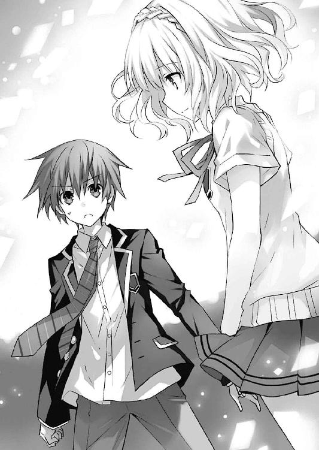
士道はちらと後方──先ほどまで〈ファントム〉がいた公園の方を一瞥した。その上空には、まだ光り輝く精霊の姿は現れていない。
それを確認してから、士道は小さく口を開いた。
「おまえは......俺のことを、知ってるのか？」
「......うん、知っているよ。よく、ね」
士道の言葉に、〈ファントム〉が返してくる。士道は緊張に指先が震えるのを感じた。
「教えてくれ。俺は一体......何者なんだ？ この力は、一体何なんだ？」
「............」
その問いに、〈ファントム〉は数秒の間沈黙を作った。
そして、首を振るような仕草をしてから返してくる。
「......答えてあげたいところだけれど、未来の君がどんな状態にあるのかわからない以上、教えることはできないな。──それに、今は私たちの会話を盗み聞きしている子もいるみたいだしね」
「え......？」
士道が目を丸くすると、〈ファントム〉は全てを見透かしているように続けた。
「ねえ......時崎狂三。聞こえているんだろう？」
『......あら、あら』
〈ファントム〉に応ずるように、狂三が士道の頭の中で静かな声を発した。
「......用というのはそれだけ？ だとしたら、随分と贅沢な『時間』の使い方をしたね」
「............、いや」
士道は目を伏せると、首を横に振った。
「今のは、ただの俺の質問だ。おまえへの用は別にある」
「......何かな？」
「今すぐ、ここから消えてくれ」
他にも聞きたいことは山ほどある。ようやく見つけた、士道の過去を知る者だ。知りたい。正直に言うのなら、何をしてでも、この『何か』から自分の情報を聞き出したかった。
だが、今、言わねばならないのはそれだった。まず何より優先されるべきは、折紙の反転を阻止することだったのである。
「......それは、『おまえを殺す』の詩的な表現？」
しかし〈ファントム〉は、物憂げに息を吐いた。
「まあ......全く想定していなかったわけじゃあないよ。数年後の君が、気難しい時の精霊に愛されたなら、そういう考えに至るのも一つの可能性だった。──あまり、考えたくはなかったけれどね」
「............」
どうやら、〈ファントム〉は士道が時を越えて自分を殺しに来たのだと思っているらしい。士道は無言で拳を握った。
〈ファントム〉に対する敵意が全くないと言えば噓になる。幼い琴里に苦痛を与えたことは、今でも許すことができない。
だが、今士道に〈ファントム〉をどうこうしようという意思はなかった。心を落ち着けるように深呼吸をしてから、首を振る。
「......殺す殺さないなんて話はしてない。一刻も早く、身を隠して欲しいだけだ。おまえは隣界ってところに行けるんだろう？」
「......ふうん？」
〈ファントム〉は、興味深そうに言葉を続けた。
「聞いていいかな？ その理由を」
「それは......」
問われて、士道は口ごもった。
理由は単純。今目の前にいるこの少女の思惑や目的が知れなさすぎるからだ。
折紙が──五年後の未来、〈ファントム〉が精霊化させた少女がここにやってきて、〈ファントム〉を討とうとすると伝えることは容易い。そしてその結果、折紙が反転してしまうのを防ぎたい、と、士道たちの要求を伝えることも簡単だ。
だが、この〈ファントム〉の目的が、ＤＥＭのアイザック・ウェストコットと同じく精霊を反転させることであったなら、その情報を渡すことはまったくの逆効果になってしまうだろう。
「............」
一体どう答えるべきだろうか。それを決めかねていると、〈ファントム〉が焦れたように息を吐いた。
「......まあ、答えられないなら別に構わないけれどね。──悪いけれど、答えはノーだよ。まだ少し、やることが残っているんだ」
「な......！」
〈ファントム〉の返答に、士道は泡を食った。
「待ってくれ！ これからこの時代に──」
士道は折紙のことを伝えようと口を開く。が──その瞬間、士道の身体はまるで見えない手に押さえつけられたかのようにぴくりとも動かなくなった。
感覚的には、ＡＳＴやＤＥＭの魔術師が展開した随意領域に身体を縛られたときのそれに近い。指先を動かすことすら困難になり、声も発せなくなる。
『士道さん、どうしましたの？』
狂三が不審そうに聞いてくるが、それに答えることもできない。
すると、そんな士道に、〈ファントム〉がゆっくりと近づいてきた。
そして、片手を持ち上げ、士道の頰に触れてくる。
──その、瞬間。
「............ッ!?」
士道の全身を、名状しがたい感覚が通り抜けた。
「あ──」
なぜかはわからない。しかし、一瞬で確信できた。
士道は、この感触を知っている。
──士道は、この、少女の姿をした『何か』のことを、知っている。
「......今日のところは、時の精霊の行動に感謝をしておかないといけないかな」
〈ファントム〉が、士道の頰に手を触れたまま、小さな声を発してきた。
「時が来たなら、また会おうね。そのときは──」
士道の耳に向かって、言葉を続ける。
「──もう、絶対離さないから。もう、絶対間違わないから」
その、言葉を。
「────!?」
士道は思わず息を詰まらせた。
どこかはわからない。いつかはわからない。だが、士道は確かにその言葉を耳にしたことがあったのである。
「......、......」
おまえは、一体、と問うが、声は出ない。
〈ファントム〉はそんな士道の頰から手を離すと、そのまま再びノイズを纏い、トンと地面を蹴って上空に飛んでいった。
それから数秒後、〈ファントム〉の姿が、士道がどう跳びはねても手が届かない位置にまで達したところで、ようやく士道を縛めていた不可視の力が緩んだ。
「く、は......っ、けほっ、けほっ......」
前方に倒れ込むように膝を突き、数度咳き込む。しかし、そんなことをしている場合ではない。士道はすぐさま顔を上方に向けた。
「あいつ──一、体......」
すると、まさにそのとき。
空を漂う〈ファントム〉目がけて、東の空から一条の光線が放たれた。
「......！ あれは──！」
士道はハッと肩を揺らすと、光線が放たれた方向に顔を向け、身体を凍り付かせた。
そこにいたのは、一人の少女だった。光り輝く純白の霊装。殺意を体現するように仇敵へと向けられた幾つもの『羽』。破滅を撒く光の精霊が、そこにいた。
言うまでもない。──鳶一折紙である。
「折紙......ッ！」
士道は悲鳴じみた声で折紙の名を呼んだ。
だが、そんな声が届くはずはない。折紙はただ真っ直ぐに〈ファントム〉を見据えると、羽型の天使の先端から、幾条もの光線を雨のように放っていった。
〈ファントム〉は信じられないほど身軽な挙動でそれら全てを避けながら、空を滑るように移動していく。しかし折紙は諦めない。逃げようとする〈ファントム〉に追いすがり、休む間もなく空に光の線を引いていく。
そこに広がっていたのは、数分前──士道が五年前の狂三に二度目の時間遡行をしてもらう前に展開されていたのと、同じ光景だった。
士道の頭を、先ほど狂三が言っていた言葉が掠めて通る。
──もしも世界が、もとの歴史を辿ろうとするのなら──
「くそ......っ！」
一瞬頭に浮かびかけた諦観を振り払うように首を振ると、士道は二人を追って地を駆けた。
「繰り返させて──たまるかよ......ッ！」
先ほど目撃した光景が脳裏を過ぎる。
降り注ぐ光。ばらばらになった人の残骸。
そして、怨念と復讐に彩られた、小さな少女の瞳が。
折紙は、両親を守ろうとしただけだった。決まってしまった運命を覆そうとしていただけだった。
それが、そんな純粋な感情が、こんな悲劇を生んでいいはずがない。
こんな結末は──
「俺が......変えてやるッ！」
士道は叫びを上げると、さらに足に力を込めた。
凄まじい速度で空中戦を繰り広げる折紙と〈ファントム〉のあとを、地上から正確に追うことなどできはしない。
だが──士道の目的は二人を正確に追跡することではなかった。迷いなく、炎に覆われた街の中を進んでいく。
そしてやがて、目的の場所に辿り着く。
『前の世界』で、折紙の両親が死んでしまった場所へ。
そう。士道が止めねばならないのは、折紙と〈ファントム〉の戦いではなく、折紙が誤って両親を殺してしまうことなのだ。
「......！ 見つけた......！」
赤く燃える道を走りながら、士道は目を見開いた。
視線の先にいたのは、五年前の折紙と──そこから少し離れた位置にいる、折紙の両親の後ろ姿だった。
もう、四の五の御託は並べていられない。折紙と〈ファントム〉の接触の阻止に失敗してしまった以上、折紙の両親を安全な場所に逃がす他、歴史を変える方法はなかったのだ。
不幸中の幸いと言うべきか、今は街が凄まじい大火に包まれた非常時である。急いで避難を促す男は、決して異様な存在ではないだろう。士道の指示に従って逃げてくれる可能性は十分あった。
だが──
「............ッ！ な──」
士道は目を見開くと、身体を強ばらせた。
理由は至極単純なものである。いつの間にか上空──折紙の両親の真上に、精霊・折紙と〈ファントム〉の姿があったのだ。どうやら、乱戦を繰り広げるうち、もうこんなところにまで移動してきてしまったらしい。
「く......！」
士道が苦しげに歯嚙みすると同時、折紙が何発もの光線を放って〈ファントム〉の逃げ場を塞いだ。
そしてそれと同時、羽型の天使を一つに結集させ、その砲門を下方──地上の方に向けた。
『先ほど』と、全く同じ光景。士道は顔を青ざめさせた。
「駄目だ、折紙ッ！」
叫ぶも、声は届かない。
もはや、折紙の両親に避難を促すような余裕はなかった。一瞬あとには必滅の一撃が降り注ぎ、二人は痛みを感じる間さえなく天に召されてしまうだろう。
「くそ......ッ!!」
士道はさらに足に力を入れ、勢いよく地面を蹴った。
『士道さん!?』
この行動は予想外であったのか、頭の中に狂三の意外そうな声が響く。
だが、もうこの状況に陥ってしまっては、他に思いつく方法はなかった。
──結集した天使から、地上目がけて極大の一撃が放たれる。
「うおおおおおおおおおおおおおおおおおおおおおおお────ッ!!」
士道はそれと同時にのどが潰れんばかりの大声を上げると、折紙の両親目がけて跳躍し──思い切り、その背を押した。
「な......っ!?」
「きゃ──」
突然突き飛ばされ、折紙の父と母がそれぞれ声を漏らす。
渾身の力を込めて押し飛ばしたのだ。もしかしたら、膝くらい擦り剝いているかもしれない。
──でも、それくらいは許してくれたっていいだろう。
我ながら頭の悪い方法を選んでしまったものである。士道は、視界が真っ白に照らされていく中、自嘲気味に唇を歪めた。
「────！」
と、そんな中、誰かの声が鼓膜を揺らした。
狂三かとも思ったが、違う。これは明らかに外界からの声だった。
そして、視界が光で満たされる寸前、士道は気づいた。それは、目前にいた五年前の折紙のものだったのである。
一瞬、折紙と目が合う。
その双眸にはまだ、復讐の炎は燃えていない。怨嗟の澱は溜まっていない。
「ああ──よかった」
士道は小さく呟くと、真っ白い光に包まれるようにして、意識を失った。
第八章 〈デビル〉
「ん......」
小さなうなり声を発して、士道は目を開けた。
どうやら士道は、ベッドの上でうつぶせの体勢になっていたらしい。左頰が枕に押しつけられ、左目が開くのが阻害されている。長らく身体の下敷きになっていたらしい左腕には感覚がなくなっていた。
「ふぁあ......」
士道は眠たげなあくびを一つ漏らすと、ベッドの上で寝返りを打ち、仰向けになってからのろのろと身体を起こした。
自重から解放されると同時、感覚がなくなっていた左手が、次第にじんじんと痺れてくる。士道は「あいたたた......」と顔をしかめてから、ぼうっと辺りの様子を見回した。
なんてことはない。いつもの自分の部屋である。見慣れた壁床天井に、家具。昨日は疲れていたのだろうか、士道には珍しく、制服のブレザーが椅子にかけられていた。
と、そこで。
「......あれ？」
違和感を覚え、士道は目をしばたたかせた。
昨日、どうやって床に就いたかの記憶が、すっぱりと抜け落ちてしまっているのだ。というか、今日は一体何月何日何曜日だっただろうか？ 確か眠る前は──
「......！」
頭の中で、細切れにされていた情報が次々と繫がっていく。士道の脳裏に、意識を失う前に広がっていた光景が思い出された。
燃え盛る街。降り注ぐ光。──士道はハッとして自分の身体を見下ろした。
見たところ......身体に傷や欠損は見受けられない。強力無比な天使の一撃を受けたにもかかわらず、士道は健康体そのものだった。琴里の治癒の炎のおかげだろうか、それとも──光が士道を灼こうとした瞬間、【一二の弾】の効果限界が訪れて、士道の身体が強制的にもとの時代に引き戻されたのか。
まあ、どちらにせよ、助かったことに変わりはない。士道は大きなため息を吐いた。
だがすぐに、次なる疑問が頭の中に浮かんでくる。士道は慌ててベッドを下りると、部屋のカーテンを開けて窓を全開にした。
「ここは......」
小さな声で呟きながら、外の景色に目をやる。そこに広がっていたのは、見慣れた天宮市東天宮の住宅街だった。右方に目をやると、精霊たちが住んでいる巨大なマンションが聳えていることがわかる。
「──狂三！ 狂三！」
士道は側頭部に手を当てると、自分の頭の中に話しかけるように声を上げた。
だが、いつまで経っても、狂三の声は聞こえてこない。
とはいえそれも道理だろう。狂三は言っていた。【九の弾】は、異なる時間軸上にいる対象と意識を繫ぐ弾であると。それはつまり、弾を撃った狂三と同じ時間に存在している者に対しては、効果を発揮しないということだろう。
そう。士道は戻ってきていたのだ。
五年前の天宮市から、もとの世界へと。
「いや......」
士道は呟くように言葉をこぼした。──正しく言うのなら、違う。
士道の視界に映っているのは、いつもと変わらぬ見慣れた景色だった。
建ち並ぶ家々も、街路も、全てがもとのまま。要は──反転した折紙によって滅茶苦茶に破壊された天宮市の光景ではなかったのである。
「......っ！」
それを認識すると同時、士道は窓を開け放ったまま部屋を出、転がり落ちるような勢いで階段を下りた。そしてそのままリビングへと走っていき、バタンと大きな音を立てて扉を開ける。
すると、それに驚いたのだろう。リビングのソファに座りながらテレビを見ていた小柄な少女──琴里が、どんぐりのように丸っこい目をさらに丸くして士道の方を見てきた。
「おー？ どしたのおにーちゃん。朝っぱらから元気だねー」
長い髪を白いリボンで二つ結びにした、活発そうな少女である。士道よりも随分と早く起きたらしく、既に制服へと着替えを済ませていた。
妹の吞気な声に、しかし士道は大声を上げた。
「琴里......！ おまえ、無事だったのか!?」
「......へ？」
士道が息を荒くしながら叫ぶと、琴里が、何を言っているのかわからないといった様子で首を傾げてきた。
「......おにーちゃん、寝ぼけてる？」
言われて、ハッと肩を揺らす。
とはいえ、士道の行動も仕方のないことではあった。『もとの世界』では、折紙によって〈フラクシナス〉が墜とされ、艦に乗っていた琴里たちクルーの安否は確認できていなかったのだ。
「......琴里、今日って、何月何日だ？」
「え？ 一一月八日に決まってるじゃん」
琴里が、心配そうな目で士道を見ながら言ってくる。
だが、琴里の反応は、士道にとって最高の報告であった。士道の記憶が確かならば、その日付は──反転した折紙が街を破壊していた日の、翌日だったのだ。
「──ああ──」
士道は今にも泣き出してしまいそうな顔を作りながら琴里のもとに歩いていくと、そのまま「はしっ」と琴里を両手で抱きしめた。突然のことに、琴里が目を白黒させる。
「ぎゃーっ!?」
「琴里......琴里......ッ！ よかった......本当に──」
「ぎゃーっ！ ぎゃーっ!!」
琴里が手足をバタバタさせてくる。士道は腹を蹴られてその場にうずくまった。
だが、今はその痛みさえも懐かしい。達成感と安堵感が溢れて止まらなかった。
「......どーしたの？ なんか変だよ、おにーちゃん」
琴里が頰を赤らめ肩を抱きながら言ってくる。まあ、五年前から改変されているはずの世界を過ごしてきた彼女から見れば、士道の行動は奇行にしか見えなかっただろう。
「......なあ琴里。俺、つい昨日世界を変えてきたって言ったら、信じるか？」
「へ？」
琴里が目を見開き、そののち眉をひそめた。
「何言ってんの、おにーちゃん。妄想再発？」
そして、指先であごの辺りをかきながらそんなことを言ってくる。士道の言うことが信じられない......というよりも、何を言っているのかわからないといった様子だった。
だが──それでいい。士道は苦笑を浮かべると、ひらひらと手を振ってみせた。
「ん......悪い、ちょっと寝ぼけてたみたいだ。──すぐ朝飯作るから、待っててくれ」
「お、おー......」
琴里が、怪訝そうな顔のままうなずいてくる。士道は小さく肩をすくめると、顔を洗うため洗面所に向かっていった。
いずれ時期を見て、琴里にも世界改変のことは報告しておかねばなるまい。何しろ文字通り世界が書き換わってしまった一大事なのだ。今後のことを考えても、〈ラタトスク〉の耳に入れないわけにはいかなかった。
しかし、どう考えても夢物語にしか聞こえないこの士道の体験を、一体どう説明したものだろうか。士道は頰をかきながらううむと唸った。
琴里と一緒に朝食をとったのち、身支度を調えて家を出ると、既に門の前には見知った少女の姿があった。
「おお、来たかシドー！ おはようだ！」
夜色の髪に水晶の瞳を備えた美しい少女が、元気よく手を振ってくる。──夜刀神十香。士道のクラスメート兼お隣さんである。
「おう十香。おはよう。悪いな、待たせちまったか？」
「いや、私も今家を出たところだ。ぴったりだぞ！」
十香が満面の笑みを浮かべながら言ってくる。その無邪気な様子に、士道は思わず笑ってしまった。
「む？ どうかしたか？」
「いや......それよりほら、これ」
言って、士道は手にしていたランチバッグを手渡した。十香の弁当は、朝士道が自分と琴里のものと一緒に作ってしまうのが日課になっていたのである。今日は起きるのが遅かったため購買で済まそうかとも思ったのだが......久々に過ごす『日常』を少しでもいつものものに近づけたくて、急いで準備をしていたのだった。
「おお......！ ありがとうだ、シドー！ 確か今日はあれだったな、一口カツが入っているのだったな？」
が、次いで十香が発した言葉に、士道は首を傾げることになった。
「え？」
「ぬ......？ 違うのか？ 昨日別れ際に、そう言っていた気がするのだが......」
十香が、記憶を思い起こすように眉根を寄せながらあごに手を当てる。
そこで士道は気づいた。士道にそんなことを言った記憶はなかったが、恐らく十香は士道からその言葉を聞いているのだ。
この世界は、五年前士道が折紙の両親を救い、折紙が反転しなかったあとの世界なのだ。
それゆえ、天宮市は破壊されておらず、その結果、士道たちは『昨日』、いつもの日常を過ごしていた。
だが、つい数時間前まで五年前にいた士道は、この世界での『昨日』までの記憶を持っていなかったのである。
十香や琴里の様子を見る限り、もとの世界からそこまで大きな変化はないようだったが、このように、士道の知らない細かな出来事は他にも存在するはずだった。......これは、できるだけ早めに皆に確認を取っておいた方がいいかもしれない。
「あー......悪い、十香。ちょっと材料を切らしちまっててな。別のメニューにしたんだ」
「むう、そうだったのか。しかし謝る必要などないぞ？ シドーのごはんは何でも美味しいからな！ して、一体何になったのだ？」
「ああ、挽肉のそぼろと炒り卵と絹さやで三色ご飯にしてみたんだ。卵は甘めのやつな」
「な、なんと......！ それはさいきょーではないか！」
十香が頰を紅潮させ、興奮した様子で言う。どうやら、改定後のメニューにもご満足いただけたらしい。
と、十香がランチバッグを抱えながら舞い踊っていると、マンションの方から二つの人影が歩いてくるのが見えた。
「かか、佳き朝よの。出迎え大義であるぞ従僕」
「会釈。おはようございます、士道、十香」
八舞耶俱矢に、八舞夕弦。瓜二つの顔をした、双子の少女である。一見しただけでは見分けがつかないほどにそっくりな二人であるのだが、よく見てみると、髪の括り方と、微妙な顔つきの違い、そして、神の悪戯としか思えない悲劇的な体型の違いが見て取れた。
「......うん？ 士道、御主今もの凄く失礼なことを考えなかったか？」
勝ち気そうな顔をした細身の少女──耶俱矢が、肩を抱くような仕草をしながら半眼を作る。士道は慌てて首を振った。
「ま、まさか。何も考えてねえよ」
「誠であろうな......？ 我に虚言を吐くは大罪ぞ？」
「忠言。考えすぎです、耶俱矢」
と、今度は髪を三つ編みに結ったグラマラスな少女──夕弦が、耶俱矢の肩に手を置きながら言う。
「然れどあれぞ、刹那のことではあるが、一瞬、士道の目が我と夕弦の胸の辺りを往復したように見えたぞ」
「説明。それは男ならば当然の条件反射です」
「......おい」
フォローになっていない。士道は頰に汗を垂らしながら半眼を作った。
「なるほどな。我らの魅力に身体が反応してしまったというわけか。かか、ならば赦そうではないか。八舞の魅力に抗えというほど酷なこと、この世にそうはなかろうて」
「首肯。その通りです。いくら耶俱矢が常日頃から士道でよからぬ妄想をしているからといって、誰もがそんなことを考えているわけではありません」
「そっ、そんな妄想しとらんわー!!」
耶俱矢が顔を真っ赤にして叫ぶ。すると夕弦はそんな耶俱矢の反応を面白がるように「微笑。うぷぷ」と手を口元に当てた。
「疑念。本当でしょうか。ならば昨晩耶俱矢がしたためていた日記の──」
「ちょ......っ！ きゃー！ きゃぁぁぁぁぁッ！」
耶俱矢が突然騒ぎ出し、夕弦の肩をポカポカと叩いた。
「逃走。きゃー」
あまり緊張感のない声でそう言って、夕弦がその場から逃げ出す。するとすぐさまそのあとを耶俱矢が追い、二人で士道の周りをぐるぐると回り始めた。
「......はは」
二人の様子に、士道は思わず小さな笑みを漏らした。
そんな士道の反応を見てか、耶俱矢と夕弦が不思議そうな顔を作る。
「な、なによ士道。随分達観した顔してるけど......」
「首肯。一晩で老けてしまったかのようです」
士道を挟んで、二人が眉根を寄せながら言ってくる。士道は誤魔化すように首を振った。
「いや、何でもない。──それよりほら、いつまでもやってると遅刻しちまうぞ」
士道が言うと、耶俱矢と夕弦は顔を見合わせ、同時に息を吐きながら肩をすくめた。
「ふん......毒気が抜かれたわ。士道に免じて特別に赦してくれよう。だが次はないぞ。我が闇を暴こうとする者には、死神の手が触れると心得よ」
「嘲笑。我が闇（笑）。闇とは耶俱矢がベッドの下に隠している例のあれのことですか」
「な......っ、なんで知っとるんじゃこらぁぁぁぁぁぁぁッ！」
「脱兎。お先です」
夕弦はそう言うと、士道と十香に手を振り、学校の方へ走っていった。
「待てぇぇぇぇっ！ えっ、ていうかホントになんで!? なんで知ってるのぉぉぉっ!?」
そのあとを、耶俱矢が悲鳴じみた声を上げながら追っていく。霊力を封印されているとはいえ、さすがは風の精霊と言うべきか、二人の姿はすぐに見えなくなってしまった。
「......俺たちも行くか」
「ぬ？ うむ、そうだな！」
士道が肩をすくめながら言うと、十香が目をしばたたかせてからうなずいてきた。
そうして、二人並んでいつもの通学路を歩いていき──高校へと到着する。
士道は校門をくぐると、靴を上履きに履き替え、廊下と階段を渡って二年四組の教室の前までやってきた。
「............」
が、教室の扉に手をかけようとしたところで、士道は身体の動きを止めた。
理由は単純。士道の左隣の席に座っているであろう少女──折紙に、どう声をかければよいのかを迷ってしまったのである。
五年前の改変にもっとも影響を受けたのは、間違いなく折紙のはずである。十香のような小さな記憶の齟齬だけではなく、もっと大きな変化が生じているかもしれなかった。
「シドー、入らないのか？」
「あ、ああ......すまんすまん」
十香に言われて、士道は扉にかけていた手に力を込めた。
そして、不安と高揚がない交ぜになった不思議な感覚を抱えたまま、扉を開ける。
が──
「......なんだ」
扉を開け、教室を一望した士道は、苦笑しながらため息を吐いた。
士道の席の左隣にはまだ誰も座っていなかったのである。どうやら、まだ登校してきていないらしい。
なんだか構えてしまっていた自分が少し恥ずかしくなる。士道はぽりぽりと頭をかくと、自分の席に座り、鞄から一時間目の授業に使う教科書やノートを出していった。
だが、それからしばらく待っても、折紙は登校してこなかった。
「むう......」
と、十香が不意に、難しげな顔を作る。
「ん、どうかしたか、十香」
「ぬ......何となくなのだが、なんだか物足りないというか......不思議な感じがしてな」
「......物足りない？」
十香の言葉に、士道は首を捻った。が、士道が十香に問い返すより早く、辺りに始業のチャイムが鳴り響いた。
するとそれからすぐに教室の扉が開き、眼鏡をかけた小柄な女性が、出席簿を抱えて入ってきた。士道のクラスの担任、タマちゃんこと岡峰珠恵教諭である。
その姿を見て、士道は思わず頰を緩めてしまった。
なぜなら、五年前の世界に舞い戻ったとき遭遇したタマちゃんと、全くといっていいほど変わらぬ容姿をしていたからだ。
「五河くん？ 私の顔に何かついてますか？」
「......！ あ、いや、すいません」
タマちゃんが怪訝そうに問うてくるのに、慌てて返す。タマちゃんはこほんと咳払いをしてから、出席を取り始めた。
士道の苗字は『五河』であるため、出席を取られるのは早い。士道は早々に返事をしたのち、空席のままの左隣の席に視線をやった。
「折紙......」
結局、ホームルームが始まっても、折紙は現れなかった。今日は欠席なのだろうか。それとも折紙には珍しく遅刻でもしているのだろうか。
士道がそんなことを考えている間も、タマちゃんは次々と生徒の名を呼んでいった。
「はい、殿町くんは出席、と。......じゃあ次は、中原さーん？」
「──え？」
タマちゃんが呼んだ名前に、士道は思わず素っ頓狂な声を発してしまった。
だが、それも無理からぬことである。男女混合の出席番号順でいうのなら、『殿町宏人』の次は『鳶一折紙』でなければおかしいはずだ。もし欠席していたとしても、名前を呼ばないなんてことはないだろう。
思いの外大きな声が出てしまっていたらしい。タマちゃんが驚いたような顔をして、士道の方に視線を寄越してきていた。
「あれ、先生何か間違えましたかぁ？」
「あ、あの......」
士道はガタッと音を鳴らしながらその場に立ち上がった。
が、士道は口から言葉を出すのを躊躇ってしまった。
一瞬、頭を掠めてしまったのだ。──もとの世界で、折紙が『転校』してしまったときのことを。
しかし、このまま黙っていても何もわからない。士道は意を決してのどを震わせた。
「先生、折紙は......どうしたんですか？」
どくん、どくんと心臓が鳴る。
もとの世界で折紙が『転校』したのは、ＤＥＭインダストリーからの引き抜きのための方便だった。この世界の、精霊に憎悪を抱いていない折紙には当てはまらないはずだ。そうとわかっているのに、士道の頭の中には、タマちゃんが発するかもしれない最悪の言葉が渦を巻いていた。──「鳶一さんなら、もう転校しちゃったじゃないですか」......と。
だが──タマちゃんの答えは、士道の予想とは違うものだった。
「──折紙......さん？ それって、一体どなたですか？」
きょとんとした表情で、タマちゃんが言う。
「な──」
士道は、呆然と目を見開きながら、周囲を見回した。
突然立ち上がってそんなことを言い始めたものだから、士道は今クラス中の注目を浴びていたのだが......その全員が、士道の言った名前に怪訝そうな反応を示している。
「......折紙？ 何それ。人の名前？」
「五河くんが先生に千羽鶴プレゼントしたとか？」
「いや、先生入院してるよねそれ。ていうか一人で千羽鶴とか作れないでしょフツー」
「いやでもほら五河くんなら」
「あー」
なんて、口々に言い始める。
士道はクラスメートたちを見回しながら、段々と呼吸が荒くなっていくのを感じた。
皆、冗談を言っているようには見えない。
誰も、知らないのだ。鳶一折紙という少女のことを。
「......ああ──そう、か──」
士道はすうっと細く呼吸をした。それに合わせて、身体から力が抜け、両手がだらんと垂れ下がる。
──思えば、考えられないことではなかったのだ。可能性としては、十分にあった。しかし士道は頭のどこかで、それに目を向けないようにしていたのかもしれなかった。
幼い折紙が両親とともに火災から逃げ延びたなら、新たな家を探して家族で移り住むのが普通だろう。もしかしたらまだ南甲町に住んでいるかもしれないし、五河家と同じように別の場所に引っ越したかもしれない。となれば、もとの世界のように、士道と同じ来禅高校に在籍しているという保証はどこにもなかったのだ。
五年前、確かに士道は歴史を変えた。一度は起こってしまった惨劇を、発生前に消すことに成功した。
だがそれは、歴史の全てが士道の思うように改変されたことを示すものではなかった。
世界に存在する全ての出来事は、見えない線で繫がっている。
士道が成したことが起点となり、世界に目的以外の事象が起こることは、むしろ必然であったのだ。
「......すいません、先生。俺の勘違いです。続けてください」
士道は静かに言うと、くずおれるように椅子に座った。
そんな士道の様子に、タマちゃんはしばしの間心配そうな視線を寄越していたが、やがて続きの出席を取り始めた。
「............」
士道はそんなタマちゃんの声をぼうっと聞きながら、無言で左の空席を眺めていた。
──何も、問題はないはずなのだ。
五年前、死ぬはずだった折紙の両親は助かり、折紙は精霊に恨みを抱くこともなかった。
きっとこの世界のどこかで、折紙は幸せに暮らしていることだろう。これ以上を望んだら罰が当たってしまいかねないくらいのハッピーエンドだ。
折紙にとっては、もとの世界の方が異常だったのだ。彼女はもっと優しい世界で生きねばならない女の子だった。もっと両親の愛を受けて育たねばならない少女だった。
そう。これでいいのだ。
世界は──こうあるべきだったのだ。
「......シドー？」
と。不意に右隣の席から、十香の声が聞こえてきた。怪訝そうな、それでいて士道を心配するような色を帯びた声音である。
「ん......なんだ、十香」
「それは......どうしたのだ。どこか痛むのか......？」
「え......？」
言われて、初めて士道は気づいた。
──自分の頰に涙が伝い、ぽつ、ぽつ、と机に落ちていることに。
「あ......」
慌てて制服の袖で涙を拭い、十香に「大丈夫だ」と返してやる。
十香は眉を八の字に歪めていたが、士道が大丈夫といったことをそれ以上追及するのもよくないと思ったのか、そわそわしながらも、それきり何も言ってこなかった。
「なんで......」
──涙なんて、流れるのだろうか。
士道は、独白するように呟いた。
折紙が幸せに暮らしているであろうことがわかって嬉しいのだろうか。それとも──折紙に会うことができなくて寂しいのだろうか。士道にもよくわからなかった。
ただ、一つ。
そう......一つだけ。
士道は、思ってしまったのだった。
かつて、復讐心に囚われ、普通の少女として生きることができなかった折紙。
日常のように戦場に身を置き、涙も笑顔も捨て去った折紙。
そんな彼女が、普通に笑うところを、一目でいいから見てみたかった──と。
◇
「............」
夕刻。黒いリボンで髪を括った琴里は、自宅リビングのソファに逆向きに座りながら、ジトーっとした目を作っていた。
視線の先には、キッチンで夕食の準備をする彼女の兄、士道の後ろ姿があった。空色のエプロンが、嫌味なほどに似合っている。
とはいえ、別にそれ自体はさほど珍しい光景ではない。だが、どうも今日は、朝から士道の様子がおかしい気がしてならなかったのである。
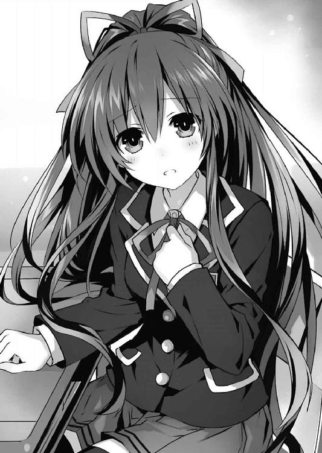
朝っぱらから凄まじい勢いで階段を駆け下り、日付を確認してきたり、琴里に抱きついてきたりと、夢が覚めきっていないとしか思えない言動をしてきたかと思ったら、今度は打って変わって重く沈んだ表情で学校から帰ってきたのだ。一体どんなことがあれば、こんなテンションの急転直下が起こるのだろうか。
「......ふん」
琴里は鼻を鳴らすと、くわえていたチュッパチャプスの棒をピコピコと動かしながら体勢を元に戻した。
なんだか、気分が悪い。
──士道の心をそこまで揺り動かす出来事が、琴里の知らないところで起こっていたことが、なんとなく気に入らなかったのである。
と、琴里が不機嫌そうに足を組み替えると、同じように士道の方に目をやっていた四糸乃が、心配そうに声を発した。
「士道さん......どうしたんでしょう」
ふわふわの髪に蒼玉のような双眸。琴里と同じくらいの背格好をした少女である。今はその身に、淡い色のワンピースを纏っていた。
『ねー。なんだか元気ないよねー』
四糸乃の言葉に合わせて、彼女の左手に装着されたウサギのパペット『よしのん』が、パクパクと口を動かす。
するとそれに答えるように、四糸乃の隣に座っていたもう一人の少女──七罪がつまらなさそうな顔をしながら（本人曰く、別につまらないわけではないらしいが）あごに手を置き、声を発した。
「......あのアンニュイな感じ。──女ね」
「な──ッ!?」
「えっ......？」
七罪の言葉に、琴里と四糸乃は目を見開いた。
「ちょ、ちょっと、どういうことよ」
「女の人......ですか？」
が、琴里と四糸乃が問うと、七罪は途端自信をなくしたように顔を背けた。
「......あ、いや、違うかもしんないし、あんま気にしないで......」
「いやそこで弱気になるんじゃないわよ。言いなさいって」
七罪の頭を両手で摑み、こちらに向けてやる。すると七罪は、不安そうに目を泳がせながらもこくりとうなずいた。
「......男子高校生が悩んでるっていったら、そりゃだいたい女が原因でしょ」
「それって、士道が誰かに振られたってこと......？」
「そこまでは言わないけど......あの年頃の男子なんて、行動のベクトルが基本女の子にどう意識されるかに向いてるもんじゃない。......女子の間で自分の変な噂が流れてたとか、隣の女子に冷たくされたとか、そういうのでも簡単に沈んじゃうものよ」
「そ、そういうものなんですか......」
四糸乃が神妙な顔で言うと、七罪は大きくうなずいてから続けた。
「ええ。他にも、一緒に班組もうぜ！ って言ったらマジのトーンで『えぇ......』って言われたりだとか、落ちた消しゴム拾ってあげたら『あ......それ、もういらないからあげる......』って言われたりだとか......」
「な、七罪さん......？」
「部活の勧誘がヒートアップする中、入部届を持っていったら『あっ、でもうち、朝練とかマジ辛いけど大丈夫？ いやホント、そんな無理してまでやるもんじゃないよ？』とか言われたり、体育の授業でドッジボールをやったら、私がボール投げるときマジトーンで『きゃぁぁぁぁぁッ！』とか悲鳴上げて逃げていったりああもうド畜生！」
「お、落ち着きなさい！」
なんだかもう後半は、七罪の恨み節みたいになっていた。......なんというか、妙に学校生活に詳しい精霊である。
「......と、とにかく。学校で何かあったのは間違いないと思うわけよ......」
七罪が、少し息を荒くしながら言ってくる。それ自体には琴里も同意見だった。どことなく寂しげな士道の背を横目で見ながら小さく首肯する。
「まあ、別にあれくらいならほっといても大丈夫だとは思うけど......」
「でも、士道さんに元気がないのは......辛いです。なんとかできないでしょうか......？」
四糸乃に言われて、琴里はぽりぽりと頰をかいた。
「そりゃあ、私だって何とかしたいとは思うけど、元気づけるって言っても......」
と、琴里が息を吐くと、七罪が渋い顔のまま言った。
「......男子高校生に悲哀を与えるのが女なら、それを癒やすのもまた、女でしょ」
七罪の言葉に、琴里はハッと肩を揺らした。
「女って......ええ、そういう......あれ？」
「............っ」
『きゃー！ 七罪ちゃんのエッチー！』
四糸乃と『よしのん』も、それが意味するところに気づいたのだろう。四糸乃が頰を赤くし、『よしのん』が両手で顔を覆う。
琴里は眉根を寄せると、こめかみの辺りをトントンと指で叩きながら、キャンディの棒をピンと立てた。
「ちょっと待ってよ。なんで私が士道のためにそんな──」
「わ、私......やります。それで士道さんが元気になるなら......」
「四糸乃!?」
四糸乃の意外な言葉に、琴里は裏返った声を発した。
「ん......わかったわ。じゃあ私に任せて。四糸乃なら士道も一発でビンビンよ。じゃあさっそく......」
「ちょ、ちょっと待ちなさいっ！」
七罪の言葉を遮るように、琴里はバッと手を広げた。
「......な、なに？」
突然の声に驚いたのか、七罪がビクッと身を竦ませる。
「やらないとは言ってないでしょ、やらないとは......！」
「そ、そう......じゃあ、琴里もね」
「......ふん、仕方ないわね。──で、一体何をするつもり？」
琴里が腕組みしながら問うと、七罪は提案をするように一本指を立てた。
「......さっきの想像のせいで、今なら私、ちょっとだけ霊力使えそうなのよね」
「へ？」
琴里は、素っ頓狂な声を上げて目を丸くした。しかし、すぐにそれの意味するところに気づく。
そう。七罪は精霊たちの中でも特にメンタルが弱いため、このような些細な出来事でも、簡単に精神状態が乱れ、霊力が逆流してしまうのである。
そして──七罪の力とは、対象の姿形を変える変身能力だった。
「ちょ、ちょっと待った。もしかしてまた私たちを子供にして、『僕だけの動物園』するつもりじゃないでしょうね。駄目よあれは。士道保父さんモードに入っちゃって、逆に負担増えるわよ」
琴里は注意するように言った。そう。琴里や四糸乃たちは以前、七罪の力によって子供化させられ、ついでに動物耳のついたレオタードスタイルにされたことがあったのである。
しかし、七罪はふるふると首を振った。
「今回は......逆」
「え？」
「逆......ですか？」
琴里と四糸乃は、不思議そうに顔を見合わせた。
「......っ、あぶね」
夕食の準備をしていた士道は、不意に肩を震わせた。
考え事をしながらキャベツを千切りしていたものだから、誤って指を切りそうになってしまったのである。
「あー......駄目だな、気をつけないと」
はあとため息を吐き、軽く頭を振る。思いの外、折紙のことが気にかかっているらしい。
しかし、いつまでもこの調子ではいられなかった。また気を抜いて調理を再開しようものなら、琴里たちに士道の血まみれ野菜をご馳走することになってしまう。
「よし......」
気を取り直すように深呼吸をし、包丁を握り直す。
すると、そのとき。
「──し、士道。手伝うわ」
なんだか微かに震えた琴里の声が、背後から聞こえてきた。
「ん？ ああ、ありがとう。じゃあそっちの──」
士道はそう言いながら振り返り──そのままピシッと固まった。動揺のためにか手が震え、包丁がこぼれ落ちて床に突き刺さる。
しかしそれも仕方のないことではあった。そこにいたのは琴里と四糸乃の二人だったのだが──二人とも、士道のよく知る幼い姿ではなく、士道と同じくらいの年齢に成長していたのである。
幼かった二人の背が伸び、大人の扉に手をかけた少女特有の美しさを纏っている。ちなみに、順当に胸が大きくなっている四糸乃に対し、琴里はあまり変わっていなかった。
だが、士道が驚いたのはそれだけではない。二人の装いだ。
理由はわからないが二人とも、水着の上にフリルのついたエプロン、そして頭にヘッドドレスという、季節外れの常夏メイドさんスタイルをしていたのである。しかもどうやら二人も恥ずかしいことは恥ずかしいらしく、落ち着かない様子で頰を赤らめ、肩をすぼませていた。
「ふ、二人とも、なんて格好してるんだ!? ていうかその身体──」
士道が焦った調子で言うと、二人は一瞬視線を交じらせたあと、ぎこちない動きで士道の左右の腕に寄り添うようにしてきた。
「い、いいじゃないそんなこと」
「そう......ですよ。それより、私たちにもお手伝いさせて......ください」
「て、手伝いって......」
琴里と四糸乃の言葉に、士道は汗を滲ませた。二人とも、士道の腕に手を絡ませているものだから、迂闊に動くと胸に腕が触れてしまいそうだったのである。特に四糸乃が危なかった。琴里の方はまだ少し余裕がありそうだった。
「......士道？ もしかしてすっごく失礼なこと考えてない？」
「......！」
琴里が何かを察したようにギロリと睨み付けてくる。士道は慌ててブンブンと首を振った。そういえば、今朝の耶俱矢も似たようなことを言っていた。一瞬、胸が小さい方が勘が鋭いのだろうか、だなんて言葉が口から漏れそうになるが、そんなことを言ったら今日の夕飯に士道の活け作りが並びそうなのでやめておいた。
夢でも見ているかのような異様な事態である。が......士道はこの現象の原因に心当たりがないではなかった。
それはそうだ。なぜなら士道の体感で言えばつい昨日、士道はこの力の世話になったばかりなのだ。
「七罪！ おまえの仕業か!?」
士道が叫ぶと、ソファの陰から覗いていた少女の頭頂部が、ビクッと震えるのがわかった。
しばしの間無言が続いたのち、観念したのかゆっくりと七罪が顔を出す。そこにいたのは、やはり変身能力を持つ精霊・七罪であった。
七罪もまた、琴里や四糸乃と同じように、高校生くらいの年齢まで成長していた。が......彼女が着ているのは普通のメイド服であり、二人のような刺激的なスタイルではなかった。
「──って、ちょっと待てこらぁ！」
そんな七罪の姿を認めて、琴里が叫びを上げる。
「七罪！ なんで自分だけ水着じゃないのよ！ 全員これで行くっていうから承諾したんじゃない！」
琴里の言葉に、七罪は気まずげに目を逸らした。
「......いや、だってほら......よく考えたらそんな恥ずかしいカッコ出来ないっていうか、なんだかバカみたいっていうか......」
「バカみたいな格好私たちにさせてたんかいっ！」
「こ、琴里さん......落ち着いて......」
四糸乃が宥めようとするも、琴里の気は収まらないようだった。ない袖を捲る仕草をして、七罪に飛びかかっていく。
「この、同じ格好にしてやるっ！」
「う、うわぁっ！」
七罪が裏返った悲鳴を上げ、ソファの陰から慌てて逃げる。しかし琴里も諦めない。二人はリビングをぐるぐると走り回り始めた。
「待ちなさいっ！ その服ひん剝いてやる......っ！」
「いやぁぁぁ！ おーかーさーれーるー！」
「誰がするかそんなことッ!?」
涙目で言う七罪に、琴里が叫びを上げる。バタバタと走り回るものだから、辺りに埃が舞い上がった。
「お、おい、落ち着けって二人とも！」
「喧嘩は......よく、ないです......」
士道は二人を止めようと、エプロンの裾で手を拭ってリビングに歩いていった。そのあとを、困り顔をした四糸乃がついてくる。
が、それがいけなかった。障害物の多いリビングで追いかけっこをしていたものだから、七罪がカーペットの段差に足を引っかけ、士道と四糸乃の方に倒れ込んできたのである。無論、そのあとを追っていた琴里も、急には止まれない。七罪の背目がけて思い切りダイブしてきた。
「わっ、わわっ！」
「な──！」
「きゃ......っ！」
「ちょ──」
四人の声が折り重なり、次の瞬間、テーブルやソファをも巻き込んで盛大にクラッシュする。琴里と七罪が追いかけっこをしていたときとは比べものにならない量の埃が舞い散った。
「いてて......みんな、大丈夫──かッ!?」
呻くように言いながら身を起こそうとし──士道は声を裏返らせた。
何しろ転んだ際に、ちょうど七罪のスカートの中に顔を突っ込んでいてしまったのである。視界いっぱいに薄布一枚を隔てた七罪のお尻が広がり、思わず息を詰まらせる。
「ギャ──────ッ！」
「う、うわぁぁぁっ!?」
七罪と士道が同時に叫び、七罪が反動をつけるようにしてその場から立ち上がる。士道の顔面が一瞬ぎゅむと押し潰された。
「ちょっと、何してるのよ士道！」
「だ、大丈夫ですか、士道さん......」
「あ、ああ──」
琴里と四糸乃の声に返そうとした士道は、そこで再び言葉を止めた。転んだ際にどこかに引っかけてしまったのだろう、琴里の水着のボトム部分がずり落ち──四糸乃の方は、ブラ部分がほどけ、その豊満なバストがエプロンの脇から覗いていたのである（よしのんがファインセーブをしていたが）。
一拍置いて二人もそれに気づいたのだろう。一瞬自分の身体に視線を落とし、顔を真っ赤に染める。
『きゃぁぁぁぁぁぁぁぁぁッ!?』
二人が一斉に悲鳴を上げ、胸元を、臀部を隠すようにうずくまる。
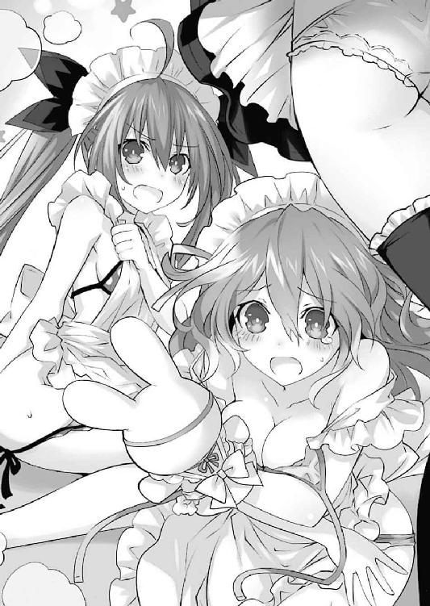
するとその際、その場に立ち上がっていた七罪の身体が押され、再び士道の顔にお尻が落ちてきた。
「うきゃぁぁッ!!」
「............っ!?」
三人の悲鳴と一人の声にならない叫びが、五河家のリビングに響き渡った。
「はぁ......酷い目にあった......」
それから数分後。士道は濡れタオルで鼻の頭を冷やしながら大きなため息を吐いた。
もう既に、琴里、四糸乃、七罪の三人はもとの姿に戻っていた。士道の姿を見ながら、申し訳なさそうに肩を落としている。
「ふん......悪かったわよ」
「すいません......士道さん」
「............ごめん」
と、右から順に謝ってくる。士道はもう一度ため息を吐いたのち、小さく苦笑した。
「いいよ。気にすんな。──こっちこそ、気を遣わせちまって悪かったな。俺を元気づけようとしてくれたんだろ？」
士道が言うと、三人はすまなそうな調子のままこくりとうなずいた。
その様を見て、士道はぽりぽりと頭をかいた。どうやら、彼女らにも容易に知れるくらいに落ち込んでしまっていたらしい。常日頃から精霊の精神状態を乱さないようにと言われているのに、これではまるで正反対のことをしてしまっている。士道はタオルをテーブルに置くと、気を引き締めるようにパンパンと頰を張った。
「──ありがとよ、三人とも。気が引き締まった。もう大丈夫だ」
士道の言葉に、三人が少しだけ頰を緩めるのがわかった。
と、琴里がハッとした様子で目を見開いてから、強がるように腕組みしてくる。
「ふ、ふん......それでいいのよ。別に何があったかなんて詮索するつもりはないけど、いつまでもそんな調子じゃ精霊たちが不安がっちゃうでしょ」
「ああ、悪かったって」
なんだか強がる琴里が可愛らしく思えて、士道は苦笑しながら肩をすくめた。
が、琴里としては士道に侮られるのは好ましくないことだったらしい。口をへの字に結び、続けてくる。
「いつまでも気を抜いていられちゃ困るのよ。またいつ精霊が現れるかわからないんだから。未知の精霊はもちろん、狂三だっているし、それこそあの〈デビル〉だって──」
「え？」
琴里の発した識別名に、士道は思わず眉をひそめた。
「ちょ、ちょっと待て琴里。〈デビル〉......？ なんだよ、その精霊」
琴里の方に向き直り、聞き返す。
〈デビル〉。少なくとも、士道は聞いたことのない名前である。
しかし、琴里は怪訝そうに眉根を寄せてきた。
「何言ってるのよ士道。あの精霊狩りの〈デビル〉よ？ 〈ナイトメア〉時崎狂三に並ぶ最重要警戒対象じゃない。忘れたなんて言わせないわよ」
「狂三と......並ぶ？」
士道は額に汗を滲ませた。
この世界は、士道の知っている世界とは微妙に違う流れを辿っている。それは今日嫌というほど思い知った。ならば、士道の知らない精霊が既に現れているという可能性だってないことはない。
しかし──あの最悪の精霊・狂三と並んで警戒されるような精霊が出現しているだなんて、にわかには信じられなかった。
そんな士道の反応に、琴里がさらに訝しげに腕組みしてくる。
「あなた......本気で言ってるの？ 今日はどうしたっていうのよ、一体。まるで昨日までの記憶がすっぱり抜け落ちちゃったみたいじゃない」
「......ああ、すまん」
当たらずとも遠からずといった琴里の言葉に、小さく頭を下げる。すると琴里がはあと大きなため息を吐き、くわえていたチュッパチャプスの棒をピンと立てた。
「......で、本当に覚えてないの？」
「ああ......できれば、説明してもらえないか。その──〈デビル〉って精霊について」
士道が言うと、琴里はもう一度ため息を吐いてから首肯してきた。
「〈デビル〉。顕現は確認されているけど、一度も接触に成功したことのない、正体不明の精霊よ。そして──」
琴里は一拍置くようにしてから、言葉を続けた。
「──恐らくではあるけれど、反転体よ」
「な......!?」
士道は思わず目を見開いた。
「反転体......？ どういうことだ？ 反転した精霊が、普通に出現してるっていうのか？」
「だから、詳しいことはわかってないって言ってるでしょ」
琴里が苛立たしげに言う。きっとそれは、こちらの世界の士道であればとうに承知していなければならない情報だったのだろう。
なぜ反転した精霊が出現しているのか──疑問は尽きなかったが、まだわからぬことは山ほどあった。気を取り直して、質問を続ける。
「......さっき言ってた『精霊狩り』っていうのは？」
「その通りの意味よ。──〈デビル〉は、単独では出現しないの。必ず、他の精霊が顕現した際に現れては......その精霊に攻撃を仕掛けるのよ。七罪なんて、十香たちが助けに入らなかったらヤバかったんだから」
言って、琴里が七罪の方をちらと見る。そのときのことを思い出したのか、七罪が微かに肩を震わせた。
「ちょ、ちょっと待て。精霊を？ それって......」
「ええ。まるでＡＳＴやＤＥＭね。──最初は私たちもそれらの組織の関与を疑ったわ。もしかしたら、精霊を飼い馴らして精霊を狩らせようとしてるんじゃないか......って。でも見る限り、〈デビル〉とＡＳＴ、ＤＥＭの間に協力関係はないみたい。実際、ＡＳＴもＤＥＭも、〈デビル〉に攻撃を仕掛けているわ」
「じゃあ......なんで〈デビル〉は精霊を......？」
「さあね。何か理由があるんでしょうけど、そればっかりは本人に聞いてみないことにはわからないわ。すぐどこかへ姿を眩ませちゃうものだから、〈ラタトスク〉もまだ、一度も接触できてないのよ」
琴里が大仰に肩をすくめてみせる。士道は頰に汗を垂らしながらあごに手を当てた。
精霊を狩る精霊〈デビル〉。その名を聞いてから、奇妙な違和感が士道の心の中に生じていたのである。
「なあ......その〈デビル〉の映像か画像って見られるのか......？」
「あることはあるけど......見てもあんまり意味ないと思うわよ？」
「え？ どういうことだ？」
士道が問うと、琴里が「うーん」と頭をかきながらキャンディの棒をピコピコと上下させた。
「ま......百聞は一見に如かずよ。ちょっと待ってなさい」
言って、琴里はリビングを出ていった。そしてすぐに、自分の部屋からＢ５サイズの端末を持ってくる。
「これよ。見て」
そして琴里はテーブルの上に端末を置くと、映像を再生させた。
滅茶苦茶に破壊された街の映像である。辺りから爆音や煙が上がり、今まさに戦闘が行われていることを伝えてくる。
──その、中に。
『それ』は、いた。
闇を纏ったかのような人型のシルエットである。なるほど、琴里が「あまり意味がない」と言ったのも道理だった。辛うじて人の形を判別することはできるものの、その顔は闇に覆われ、見取ることができない。だが、その人型の周囲に浮遊した幾つもの羽のような部品は、そのシルエットを〈デビル〉と称するのに十分な説得力を持っていた。
それを見て。
「......あ──」
士道は、小さな声をこぼした。
それは、その精霊の異様な風貌を目の当たりにしたからではない。
──その精霊に、見覚えがあったからだ。
確かに、顔や表情を見取ることはできない。
だが、士道は知っていた。その精霊の姿を、目にしたことがあった。
「うそ......だろ......」
カタカタと、歯の根が鳴る。全身が、小刻みに震えていく。
なぜなら、それは──
「......折、紙......」
そう。それは精霊化し、反転した折紙の姿そのものだったのである。
◇
翌日。士道は昨日と同じく十香とともに学校へ登校すると、自分の席に着いたところで、ふああ、と大きなあくびを一つこぼした。
右隣の席に座った十香が、不思議そうに目を丸くしてくる。
「む、眠いのか、シドー」
「ああ......ちょっと昨日寝付けなくてな」
「むう、それはいけないぞ。大丈夫か？」
「はは、まあ......学校が終わったら夕飯前に一眠りさせてもらうさ」
士道は苦笑すると、目に滲んだ涙を適当に拭い取り、小さくため息を吐いてから左隣の席をぼんやりと眺めた。もとの世界で、折紙がいたはずの席を。
「............」
──寝不足の原因などわかりきっている。士道は昨日の夜、大きく分けて二つのことを行っていたのだ。
一つは、外出である。士道は夕食を終えたあと一人家を抜け出し、とある場所へと向かっていた。
そう。もとの世界で折紙が住んでいたマンションと、五年前火災のあった天宮市南甲町の住宅街だ。
理由は一つ。もしかしたら、そこに折紙がいるかもしれないと思ったのである。
しかし、現実はそう甘くなかった。
マンションの部屋には誰も住んでいなかったし、かつて鳶一家の住んでいた家には、別の表札がかかっていたのである。一応、今の住人に鳶一家のことを聞いてみもしたが、詳しい行方はわからなかった。
「折紙......」
士道は誰もいない席を見ながら、誰にともなく呟いた。
昨日琴里に見せてもらった映像。その中に映っていた正体不明の精霊〈デビル〉は、間違いなく鳶一折紙だったのだ。しかも、ただの精霊ではなく──反転した姿である。
ギリ、と奥歯を嚙む。
──意味が、わからない。
五年前の世界で、士道は歴史を変えることに成功したはずである。折紙は普通の少女として、普通の世界で生きられるようになったはずだ。
なのに......一体なぜ、折紙が精霊になっているのだろうか。そしてなぜ、反転してしまっているのだろうか。
しかも琴里の話によれば、折紙は他の精霊を攻撃しているらしい。それでは、ＡＳＴのときと何も変わらないではないか。
そして、精霊が消失して姿を消すと、いつの間にか〈デビル〉の姿も消えているらしい。このおかげで、街はそこまで深刻な被害を被らずに済んでいるという話だった。
わからないことばかりで、頭が混乱する。一体この五年の間に、この世界に何があったというのだろうか。士道は頭をガリガリとかいた。
「くそ......っ、なんでそれだけが......」
苛立たしげに言いながら、昨日取ったもう一つの行動を思い起こす。
士道が取ったもう一つの行動。それは、可能な限りこの世界の情報を集めることだった。
──この世界の折紙のことを知った瞬間、士道の頭の中に底知れぬ不安と疑念が渦を巻いたのだ。
もしかしたら士道が知らないだけで、他にも士道の記憶と異なることが、この世界で起こっているのではないか。或いは──起こったはずの出来事が、なかったことになっているのではないか、と思ってしまったのである。
士道は家に帰るなり琴里たちに話を聞き（琴里には随分不審そうな顔をされたが）、簡単にであるが〈フラクシナス〉のデータベースも覗かせてもらった。
その結果、この世界自体は、ほぼ士道の記憶の通りに歴史が流れているということがわかった。
五年前、琴里が精霊になり、〈ラタトスク〉に見出されたことも。
四月一〇日、士道が十香と出会い、それを封印したことも。
その後、四糸乃を封印したことも、狂三や真那と出会ったことも、八舞姉妹を封印したことも、ＤＥＭと刃を交えたことも、美九や七罪を封印したことも。全て、士道が知っている通りのことが起こっていた。
そう──鳶一折紙に関連することのみを、綺麗に除いて。
と、そんなことを考えていると、始業のチャイムが鳴り、教室の扉が開いて担任のタマちゃんが入ってきた。号令に従って起立、礼をこなし、再び席に着く。
「はい、皆さんおはよぉございます。今日も張り切っていきましょう」
タマちゃんがにこっと微笑みながら言ってくる。が、士道はそんな言葉を、ほとんど聞いていなかった。頰杖を突きながら、ぼうっと窓の外を眺める。
「............」
──やはり、一度折紙に会ってみなければなるまい。一晩考えて士道がたどり着いた答えはそれだった。
昨日、皆が折紙のことを知らなかったとき。この世界において士道は折紙に出会ってすらいないと知ったときは、もう士道は一生折紙と関わることがないのだろうと思った。実際──それが折紙にとってよいことなのかもしれないと思いもした。幸せな生活を送っているであろう折紙の人生に、士道がちょっかいをかけていいはずはない。士道は、世界のどこかで穏やかに暮らしている折紙のことを思っていればそれでよいと思っていた。
だが、あの映像を見てしまった以上、そうも言っていられなかった。
折紙に纏わり付く戦禍は、まだ終わっていない。士道の使命は、まだ終わっていない。性悪な世界は、未だあの少女に過酷な運命を背負わせたままだった。
とはいえ、今の士道はあまりにもこの世界のことを知らなさすぎた。まずは折紙に会い、話を聞いてみないことには何も始まらないだろう。
しかし、士道がそう決意したところで、それに至るまでには幾つもの壁が存在していた。
そもそもこの世界の折紙は士道のことを知らない。それ以前に、折紙が一体どこにいるのかすらわかっていなかったのである。
「......やっぱり、俺一人じゃどうにもならないな」
士道は誰にも聞こえないくらいの小さな声で呟くと、指先でトントンと机を叩いた。
やはり、どう動くにしても〈ラタトスク〉の協力が必要だ。今日家に帰ったら、琴里に事情を説明して、折紙を探してもらうしかないだろう。
......タイムスリップして世界を書き換えてきた、だなんてことを信じてもらえるかどうかは微妙だったが、それが精霊〈デビル〉に関わることとなれば無下にはされまい。
「よし......」
窓の外を見ながら、士道は決意を固めるように拳を握った。
と──そのとき。
「あ、そうだ。今日は皆さんに新しいお友達を紹介しますよぉ。──さ、入ってきてくださぁい」
タマちゃんが思い出したようにそう言うと同時、ガラッという音を立てて教室の扉が開かれ、一人の少女が入ってきた。どうやら、転入生らしい。
こんな時期に転入生とは珍しいと思ったが、今はそんなことを気にしている場合ではない。士道は顔をそちらに向けることもなく、ちらと視線だけをそちらに向けた。
が──
「......へ？」
教卓の前まで歩いてきた少女の姿を見て、士道は驚愕に目を見開いた。
人形のように端整な顔をした、線の細い少女である。背を覆う髪は少し色素が薄く、彼女を異国のお姫様のように見せていた。
少女が登場した瞬間、クラスメートたちが色めき立つのがわかる。男子たちが「おおっ!?」と身を乗り出し、女子たちもまた目を輝かせていた。
しかし、そんな中、士道は一人愕然とした調子で、その少女の顔を凝視していた。
理由は単純。その少女の顔に、見覚えがあったからだ。
「はい、じゃあ自己紹介をお願いします」
タマちゃんが、転入生に促す。
すると彼女は、こくりとうなずいてから顔を正面に向け、静かな声でこう言った。
「──鳶一折紙です。皆さん、よろしくお願いします」
そして、深々と礼をしてみせる。クラスの面々がわぁっと色めき立った。
一部の生徒などは、『折紙』という珍しい名を昨日士道が発していたことを思い出したのだろう。何やら不思議そうな顔で首を捻ったり、下卑た深読みをしたのか、士道の方に悪戯っぽい笑みを向けてきたりもしている。
だが、今の士道にそれらに反応を返すような余裕はなかった。
「な......」
目を見開き、唇から震えた声をこぼす。
そこにいたのは、髪の長さこそ違うものの、間違いなく、士道の記憶の中の鳶一折紙嬢その人だったのである。
士道が驚愕のため言葉を発せずにいると、タマちゃんが教室を見回すように視線を巡らせた。
「えぇっと、じゃあ鳶一さんの席は......五河くんの隣が空いてますね。あそこに座ってくれますか？」
「わかりました」
折紙が首肯し、ゆっくりとした足取りで士道の方に向かってくる。
が、折紙は数歩歩いたところで、不意に足を止めた。
理由はすぐにわかった。士道が折紙を凝視していたものだから、そこでふっと目が合ってしまったのである。
「あ──」
「え......？」
士道ののどから短い声が漏れると同時、折紙が意外そうに目を丸くした。
自分をじっと凝視している少年と目が合ってしまったのだ。そんな驚きもわからないではない。
しかし、なぜだろうか。折紙の反応はそういったものとは少し違うように見えた。
「──うそ。あなたは......」
そう。まるで、士道の顔に見覚えがあるかのように、そんなことを言ったのである。
だが、折紙はすぐに思い直すように首を横に振ると、今度は一転して他人行儀な調子で会釈をし、タマちゃんに指定された席に腰を落ち着けた。
「────」
士道は、そんな折紙の一連の動作を見ながら、心臓の鼓動が速くなっていくのを感じた。
──今のは、一体。折紙は、士道のことを知っている？
普通に考えればそんなはずはない。しかし、ならば今のは一体──
「はい！ じゃあ改めて出席を取りますよぉ！」
タマちゃんが元気のいい声を発して生徒の名を呼び始めたが、士道の耳には、何も入ってこなかった。
第九章 本能
『......はぁ？』
電話越しに聞こえてきた琴里の声は、怪訝そうな色を帯びていた。
とはいえそれも無理のないことだろう。休み時間に急に電話がかかってきて『そんなこと』を告げられたなら、士道でも似たような反応を返したに違いない。
そう。士道はホームルームが終わるなり教室を抜け出し、ひとけのない場所に来てから、琴里に電話をかけていたのである。
電話を取った琴里は、最初は気安い調子で相づちを打っていたのだが、途中リボンを付け替えるような衣擦れの音を響かせたかと思うと、先の言葉を発してきたのだ。
琴里が、困惑したような調子で言葉を継いでくる。
『ちょっと待って。一体どういうこと？ 詳しく説明してちょうだい』
「......今言ったとおりさ。〈デビル〉が、俺のクラスに転入してきた」
士道は、先ほど琴里に発した言葉を、もう一度嚙みしめるようにして言った。
『だから、それが意味わかんないって言ってるのよ。一体なんで〈デビル〉が学校に転入してくるのよ。......ていうかそもそも、〈デビル〉は正体不明の精霊じゃない。その名前も、顔すらも確認できていない。なんでその転入生が〈デビル〉だなんてわかったの？』
「それは......」
もっともな疑問である。士道は口ごもった。
「今は時間がないから、詳しいことは今日帰ってから説明する。でも......本当なんだ。俺を信じてくれ」
『............』
士道が言うと、琴里は数瞬無言になったのち、はあとため息を吐いてきた。
『......わかったわよ。一応観測機を回してみるわ。それ以降のことは、その結果如何ってことで文句ないわね？』
「......！ 信じてくれるのか!?」
自分で言い出したことではあるのだが、少し意外だった。士道が驚きの声を発すると、琴里はやれやれといった調子で返してきた。
『正直、まだ半信半疑よ。──でも、何の情報もなかった〈デビル〉の正体がわかったなんて言われちゃったら、何もしないわけにはいかないでしょ』
それに、と言葉が続けてくる。
『士道が何の根拠もなくそんなことを言い出すとも思えないしね。いえ......たとえそれがあなたの感覚によるものだったとしても、その言葉を信じるに足ることを、あなたはしてきたわ』
「琴里......」
『ただ、もしちょっと気になる女の子の情報を、〈ラタトスク〉に調べてもらおう、だなんて考えてたなら、ただじゃおかないけどね』
「し、しねえよそんなこと！」
士道が叫ぶと、琴里は『ん』とうなずくように言った。
『じゃあ、すぐに調べさせるわ。ええと、何て名前だったかしら、その女子生徒』
「折紙だ。鳶一折紙」
『鳶一折紙ね。鳶一──』
と、そこで琴里が言葉を止めた。何かを思い出したかのように、小さくのどを鳴らす。
『それって......もしかして、ＡＳＴの鳶一折紙？』
「は......!?」
琴里の言葉に、士道は目を丸くした。ＡＳＴ。それは陸上自衛隊内にある、対精霊部隊の略称である。
確かに折紙はその組織に所属していた。だが、それはもとの世界での話であるはずだ。琴里が知っているはずはないのだが──
そこまで考えて、士道はハッと肩を揺らした。
「琴里、まさかおまえ、もとの世界の記憶が......？」
『は？ 何言ってるのよ。まだ昨日の夢引きずってるの？』
しかし、琴里は平然とした調子でそう返してきた。
『確かＡＳＴにそんな名前の隊員がいたわよね。何度か十香たちとも戦ったことがあるんじゃないかしら。ただ、ちょっと前に退職してるはずよ』
「な──」
士道は声を詰まらせた。琴里はもとの世界の記憶を思い出したわけではない。だというのに、折紙はＡＳＴに所属していたという。
その二つが示す事実。それは至極単純な話だった。
──この世界においても、折紙はＡＳＴに入っていたのである。
「一体、なんで......」
『なんでって......ＡＳＴを辞めた理由？ そんなのわからないわよ』
士道の独白を質問と勘違いしたのだろう、琴里がフンと鼻を鳴らしながら言ってくる。
『でも言われてみれば、鳶一折紙がＡＳＴを辞めた時期と、〈デビル〉が出現し始めた時期は大体一致してるわ。ふむ、もしも退職の理由が自身の精霊化であるとしたら......』
琴里がううむと唸りながらブツブツと何かを言い始める。
だが、その言葉は半ば士道の耳を素通りしていた。──士道の頭の中には、折紙がＡＳＴに入っていたという事実が、ぐるぐると渦を巻いていたのである。
そもそももとの世界の折紙がＡＳＴに入ったのは、両親を殺した精霊を倒そうとしてのことだ。両親が助かったはずのこの世界で、一体どんな出来事が折紙の背を押すことになったというのだろうか。
『──ちょっと士道、聞いてるの？』
「......っ！ あ、ああ......悪い」
琴里の呼び声に、士道はハッとした。
『もう、しっかりしてよね。とにかく、鳶一折紙が精霊かどうかはこっちで調べておくわ。士道も、他に何か気づいたら報告してちょうだい。──でも、もし本当に鳶一折紙が〈デビル〉なのだとしたら、非常に危険な反転体よ。あまり無茶はしないでちょうだい』
「あ、ああ......わかったよ」
士道はそう言うと、電話を切った。
「............」
携帯電話をポケットに放り込み、壁に背を預ける。頭の中で様々な情報が錯綜し過ぎて、整理がつかなかった。
だが、こうしていても何も始まらない。士道は大きく深呼吸をすると、二年四組の教室に戻っていった。
教室に入ると、窓際の席に人だかりができていることがわかる。どうやら、皆可愛い転入生に興味津々らしい。クラスメートの中心で、折紙が困惑したような顔を作っていた。
と、ちょうどそのとき、授業の開始を知らせるチャイムが鳴り響き、皆が手を振りながらもとの席に戻っていく。折紙が手を振り返したのち、はあと息を吐くのが見えた。
「......はは」
その見慣れない光景に、士道は思わず頰を緩ませてしまった。士道の知っている折紙であれば、ぴくりとも表情を変えはしなかったろう。
だが......それだけに理解できない。
なぜ折紙がこの世界でもＡＳＴに入っていたのか。なぜ精霊になっているのか。なぜ──反転してしまっているのか。そして、なぜ反転しているにも拘わらず、こうして自我を保ち、人間の姿に戻れているのか。いくら考えても謎は尽きなかった。
と、士道が思案を巡らせていると、教室に教師が入ってきた。
「授業始めるぞ。座れー」
「あ......すいません」
士道は急いで自分の席に着くと、教科書やノートを机の上に取り出した。
が、当然の如く、授業に身は入らない。士道は視線のみでちらと折紙の方を見やった。
──やはり、一度話を聞かねばならない。士道はこの世界の折紙のことを何も知らなかったのだ。
だが、休み時間になれば先ほどのように人だかりができてしまうだろう。あの調子では、士道が会話をするのは困難である。
「............」
士道はしばしの間考えを巡らせると、ノートの端に文字をしたためた。
そしてそれを破り取ると二つ折りにし、教師の目を盗んで折紙の机の上に置く。
「......？」
それに気づいた折紙が、小さく首を傾げてくる。
そしてその紙片を開いて中に書かれた文面を見たかと思うと、折紙は驚いたように目を丸くした。
その日の昼休み。士道は教室を抜け出すと、屋上前の階段までやってきた。
教室がある区画から離れているため、ここを訪れる生徒はそういない。実際、校舎中に響く昼休みの喧噪が噓のように、階段はひっそりと静まりかえっていた。
しかしそれは、その場に誰もいないことを示しているわけではない。
そこには、既に一人の少女が立っていた。──話題の転校生、鳶一折紙である。
こんな辺鄙な場所、恐らく存在すら知らずに三年間を過ごす生徒も少なくはあるまい。そんな場所に転校生がいるだなんて、普通に考えればおかしな話ではあった。
しかし、士道に驚きはなかった。なぜなら、
「あの、これ」
折紙が、ポケットからノートの切れ端を取り出し、士道に見せてくる。そこには確かに士道の筆跡で、昼休みにこの場所に来て欲しい旨が記されていた。
そう。折紙は、士道がここに呼び出していたのである。
「ああ、ごめんな。急に呼び出して」
「ううん。それはいいんですけど......何か用ですか？」
折紙が微かに強ばった表情を作りながら問うてくる。
だが、それも当然といえば当然だろう。初対面の男子生徒に、こんなひとけのない場所に呼び出されたのだ。身の危険を感じても何ら不思議はない。むしろ士道の要求通り一人でここまで来てくれたことに感謝したいくらいだ。
しかしなんというのだろうか......士道が折紙を警戒するのではなく、士道が折紙に警戒される、というのは新鮮な体験だった。
「あー......」
士道は一体何から話したものだろうかと頰をかいた。聞きたいことは山ほどあるのだが、いきなり突っ込んだ話をしても、彼女の警戒を強めてしまう可能性がある。
と、そこで士道は、折紙が朝こぼした言葉を思い出した。
「なあ、折紙」
「えっ？」
折紙が、意外そうな顔を作る。一瞬意味がわからなかった士道だが、すぐにその理由に気づいた。
「わ、悪い。鳶一......さん。いきなり名前で呼ぶなんて失礼だよな」
「ううん、ちょっと驚いただけです。えっと......五河くん」
折紙が士道の名を呼んでくる。その聞き慣れない響きに、士道は苦笑してしまった。
「どうしたんですか？」
「いや、なんでもない。それより、鳶一さん。朝、俺の顔見て何か言ってたよな？ 一体あれ、何だったんだ？」
「ああ......」
士道が言うと、折紙は何かを思い出すような表情を浮かべた。
「気に障ったならごめんなさい。五河くんが、昔会ったことがある人にそっくりだったから、少し驚いちゃって」
「え......？」
士道は思わず眉をひそめた。
「それって──俺......？」
「ううん、それはないです。だって私がその人に会ったのは五年も前ですから。五河くんはまだ小学生ですよ。それに──」
折紙が、ふっと目を伏せた。
「──その人は、もう亡くなってますから。五年前に、私の目の前で」
「......っ！」
その言葉を聞いて、士道は気づいた。折紙が言う人物の正体に。
その人物は、間違いなく士道だ。確かに士道は、五年前折紙の両親を助ける際、僅かな間ではあるが折紙と目が合っていた。
「話はそれだけですか？ 私、教室戻りますけど......」
「......！ あ、ちょっと待ってくれ」
士道は階段を下りようとした折紙を慌てて止めた。まだ士道は、欲している情報をほとんど得ていなかったのである。
とはいえ、何も知らない生徒を演じていては、これ以上の進展は見込めなかった。意を決して、口を開く。
「五年前、その人に会ったのって、もしかして──南甲町の大火災のときじゃないか？」
「え──？」
士道の言葉に、折紙が目を丸くする。
「なんで、それを知って......」
言いかけたところで、折紙はハッとした顔を作った。
「もしかして──あれって、五河くんのお兄さんですか......？」
「へ？」
折紙が発した予想外の言葉に、士道は間の抜けた声を上げた。どうやら、自分が五年前に会った人物を、士道の兄弟と思ったらしい。だがそれも無理からぬことだろう。もしあれが士道自身であったと言っても、信じてはくれまい。
勘違いをさせておくのは望ましくなかったが......それで話が円滑に進むのなら致し方ないだろう。士道はそう判断して、首を前に倒した。
「まあ......そんなところだ」
士道がそう言うと、折紙はにわかに表情を変えた。眉を歪め、今にも泣き出してしまいそうな顔になる。
「と、鳶一......さん？」
「......！」
折紙は士道の目前まで至り、その手を取って深々と頭を下げた。
「あなたのお兄さんは、私のお父さんとお母さんを助けてくれました。あの人がいなかったら、二人はあのとき死んでしまっていました。どれだけ感謝の言葉を並べても足りないかもしれないけれど、言わせてください。本当に──ありがとう......！」
「あ、ああ......」
士道は折紙の反応に面食らい、曖昧な返事を返した。
だが、彼女の言葉は、一つの重要な情報を士道にもたらしてくれた。やはり士道は五年前、折紙の両親を助けることに成功していたのだ。士道は小さく安堵の息を吐いた。
「あっ」
そこで折紙が、ハッとした様子で士道から手を離すと、頰を赤く染めてもう一度頭を下げた。
「ご、ごめんなさい、いきなり」
「いや......大丈夫だよ」
折紙らしからぬ反応に、奇妙な感慨を覚えながら苦笑する。
しかし、一つの事実が判明したと同時、さらに深まってしまった謎があった。
「えっと......鳶一さん。鳶一さんのご両親はそのとき助かったんだよな？」
「はい」
折紙がうなずいてくる。士道は小さく息を吐いてから続けた。
「じゃあ、今も一緒に住んでるのか？」
「......いえ。両親は、四年前に交通事故で亡くなりました」
「──っ!? え......!?」
折紙が目を伏せながら言った言葉に、士道は思わず上擦った声を上げていた。
「そ、んな......」
歴史の修正力、という言葉が頭を掠める。狂三はそれを否定も肯定もしなかったが──結局、士道が何をしようと、折紙の両親が死んでしまう結末は変えられなかったのだろうかという無力感が、士道を襲った。
「五河くん......？」
戦慄する士道に対して、折紙は怪訝そうに眉をひそめてきた。それはそうだろう。今日出会ったばかりの男子生徒がそんな反応をすれば、不思議に思うのは当然である。
しかし、すぐ思い直すように首を振ってから、頭を下げてくる。
「すみません。......せっかく、五河くんのお兄さんに救ってもらったのに」
「いや、そんな」
「でも」
顔を上げ、折紙が凜とした調子で続ける。
「五河くんのお兄さんがお父さんとお母さんを助けてくれてから約一年、私は二人に、たくさんのものをもらいました。それは、五河くんのお兄さんがいなかったら叶わなかった、かけがえのないものです。本当に──感謝、しています」
そう言う折紙の顔に、偽りは見受けられなかった。
「そ、そう、か......」
士道は少し視線を逸らしながらそう言った。折紙の両親が亡くなってしまっていたのは残念であるし、気の毒にも思うが......今の折紙の言葉を聞いて、自分のしたことは無駄ではなかったのだと、随分と救われた気分になった。
しかし、折紙は両親の死因を交通事故と言った。もしそれが本当だとするならば──
士道は顔を上げ、折紙の目をジッと見つめながら、ごくりとのどを鳴らし、意を決して口を開いた。
「じゃあ──どうして、鳶一さんはＡＳＴに入ったんだ？」
「え──」
士道の言葉に、折紙は息を詰まらせた。
そう。それが士道の疑問であった。あの火災の日、折紙の両親は天使の一撃から逃れたはずである。ならば、折紙は精霊に対して憎悪を抱いていないはずでは......？
「なぜＡＳＴのことを──」
言いかけて、折紙は何かを思い出したように眉をひそめた。
「もしかして五河くん、空間震警報が鳴っているとき、外に出ていたことあります？」
「え......？ あ──」
折紙の言葉に、そしてその不審そうな表情に、士道は短く声を発した。
そうだ。この世界でも折紙がＡＳＴに所属していたということは、精霊と話すために現場に赴いていた士道の姿を目撃している可能性があるということだった。
「あ、ああ......実はな」
「......やっぱり。あれは見間違いじゃなかったんですね」
「へ？」
「何度か、隊内でも話題に上っていたんです。危険地帯に一般人が残ってるって。──『あのとき』の人に似ているとは思ってましたけど、まさか五河くんだったなんて」
言って、折紙が視線を厳しくしてくる。
「非常に危険です。今後控えてください」
「え、ええと......」
士道は答えに窮して曖昧に返事をした。そう言われても、〈ラタトスク〉の任務がある以上、今後も精霊たちの前に立ち続けねばならないのである。
その反応をどう受け取ったのか、折紙が小さくため息を吐く。
もっと追及をされるかと覚悟していたのだが、折紙はそれ以上深く事情を探ろうとはしてこなかった。
その代わり、キッと強い意志の感じられる表情を作り、士道に視線を返してくる。
「私がＡＳＴに入った理由......でしたよね」
「ああ、もしよかったら、教えてくれないか？」
士道が言うと、折紙はこくりと首を前に倒した。
「五河くん、ＡＳＴを知っているということは、空間震の原因もご存じなんですよね？」
「......精霊」
「そうです。特殊災害指定生命体、精霊。──そして、もう既に調べているかもしれませんが、五年前の火災のとき、あなたのお兄さんを殺したのも、精霊なんです」
「それは──」
士道は言葉を濁すようにのどを鳴らした。士道はこうして生きているのだが、あのときの折紙にしてみれば、目の前で人間が消し飛ばされたようにしか見えなかっただろう。
折紙が、強く拳を握りながら続けてくる。
「あの人は、私のお父さんとお母さんを助けるために犠牲になってしまいました。今の私があるのは、あの人のおかげです。──だから、私は思ったんです。もう、あの人のような人を作ってはならない、って。精霊から人を守ることのできる人間になろう......って」
「あ............」
のどから、意図せず声が漏れるのがわかる。
散らばっていたパズルのピースが、一つの額の中に収まっていくかのような感覚。
もとの世界の折紙は、両親を精霊に殺された怒りから、精霊を倒すことを心に決めた。
士道はそれを防ぐため五年前の世界に舞い戻り、折紙の両親を救うことに成功した。
だが、『両親の死』を回避した際に副次的に発生した『士道の死』こそが、折紙の新たな決意の火種になってしまっていたのである。
なんて──皮肉。あまりに性悪な運命の悪戯に、士道は心がざわつくのを感じた。
「......五河くん？」
士道が無言でいることを不審に思ったのだろうか、折紙が首を傾げてくる。士道は小さく指先を震わせた。
「ああ、いや、何でもない......」
無論、何でもないはずなどはない。だが、今はそうとしか答えられなかった。
士道は世界を変えることに成功した。だが結局のところ、折紙は目撃してしまったのだ。精霊が──人を殺すところを。
しかし、それが意味するのは、絶望的なことのみではなかった。
もとの世界とこの世界では、起こっていることが違う。一見すれば同様の結果になっているように見えるが、もとの世界で殺されたのは何年もともに過ごしてきた両親であったのに対し、この世界の折紙が見たのは、名も知らぬ少年の死のみである。
それに何より、その少年は、今もこうして生きている。その事実を上手く説明することさえできれば、或いは──
だが。士道はそこで唇を嚙んだ。一つ、大きなことを失念していた。
そう。この世界の折紙は、精霊化のみならず、反転しているはずだったのである。
『反転』という現象については、士道も詳しく知っているわけではない。だがそれが、精霊が絶望に沈んだ際に起こることであるということだけは理解していた。
「............」
士道は改めて、折紙を見た。確かに士道の知っている折紙とは口調や雰囲気が異なる。しかし少なくとも、今目の前にいる少女は、この世界に絶望などしているようには見えなかった。
琴里には、無茶をするなと言い含められている。しかし──聞かずにはいられなかった。
「もう一つ......聞いていいか？」
「なんですか？」
折紙が、小首を傾げてくる。士道は意を決してその問いを発した。
「──なんで、鳶一さんは......精霊になったんだ？」
しかし。
「はい？」
折紙は士道の言葉に、不思議そうに目を丸くするのみだった。
「えっと、精霊になった......？ どういうことですか？」
「へ？」
意外な反応に、今度は士道が目を丸くしてしまう。
一瞬とぼけているのかとも思ったが......違う。折紙は本当に、士道が何を言っているのかわからないといった様子だった。
「どういうことだ......？ 確かにあれは......」
と、士道が小さく呟きながら考えを巡らせていると、学校中に予鈴のチャイムが鳴り響いた。どうやら、昼休みはもう終わりらしい。
「昼休み、終わりみたいですね。先に戻ってます。──ありがとうございます、五河くん。お話ができて、よかったです」
そしてそう言って、階段を下りていく。
「あ──」
士道はその背に縋るように声を発した。まだわからないことは山ほどある。今折紙を帰してしまってはいけない気がしたのである。
「も、もう少し──話せないか？」
「でも、もう授業ですよ？」
「今日じゃなくてもいいんだ！ 空いてる日があったら、また──会えないか？」
「え？ それって──」
折紙が驚いたような顔をし、次いで頰を赤らめる。
その反応を見て、士道も一拍遅れて気づき、「あ」と顔を赤くした。
──今の言い方では、デートに誘っているようにしか聞こえないではないか......！
「ええと......」
士道がどう訂正したものかとしどろもどろになっていると、折紙が視線を逸らしながら唇を開いた。
「......あの、ちょっと考える時間をもらってもいいですか？」
「へ？ も、もちろん......！」
士道が反射的に答えると、折紙はその場でバッとお辞儀をした。
「じゃあ、失礼します」
そしてそのまま、足早に階段を下りていく。
「............」
......正直、意外な光景だった。女の子らしい......などといったらもとの世界の折紙に悪いのだが、あまり折紙らしからぬ反応である。
「いや......」
士道はゆっくりと首を振った。きっと折紙は、もともとこういう少女だったのだ。それが、両親の死によって合理的且つ冷静な性格に変わってしまった。
だが......なんというのだろうか。今の折紙を可愛らしいと思う一方で、心のどこかが妙な寂しさというか、物足りなさを覚えてしまう気がするのは。
「......ちょっと、前の折紙に慣れすぎたのかね」
士道は自嘲気味にそう言うと、折紙のあとを追うように階段を下りていった。
力なく独り言を呟きながら廊下を渡り、二年四組の教室に戻る。するとその後すぐに英語教師が入ってきて、五時間目の授業が開始された。
と──授業が始まってから、どれくらいの時間が経っただろうか。
不意に、左方の席に座っている折紙が、妙な動きをし始めたのである。
「ん......？」
士道が不思議に思ってちらと視線をやると、折紙が、ノートの端を切り取った紙に、細かな文字を書いていることがわかった。
そうしてから、その紙を二つ折りにし、教師の目を盗んで士道の机の端に置いてくる。まるで、一時間目の授業中、士道がしたように。
「これは......」
「............！」
士道がそれを受け取ると、折紙はかぁっと頰を染め、落ち着かない様子で目を泳がせたのち、教科書を立てて顔を隠してしまった。
◇
「............」
その日の放課後。士道は一人学校の屋上に上り、背を床に預けながら、ぼうっと空を行く雲を眺めていた。
ポケットから二つ折りになった紙を取り出し、空にかざしてみる。
──『今週の土曜日なら空いてます』
その紙は、先ほど折紙から受け取ったものだった。どうやら、士道のお誘いへの返答らしい。その下に、小さな文字でメールアドレスが書かれている。
「土曜......か」
言って、紙をポケットにしまい直しながら軽く伸びをする。
一応、約束を取り付けることはできた。〈ラタトスク〉の助力もなしに、一応初対面である女子相手と考えれば、大金星といっても過言ではあるまい。
とはいえ、まだまだ問題は山積みだった。
そもそも精霊化し、反転までしている折紙に、まったくその自覚がないだなんてことが本当にあり得るのだろうか。
士道は頭の中で、考え得る可能性を幾つも思い浮かべた。
もっとも間抜けで、しかしもっともあり得そうなのは、士道の勘違いである。
琴里に見せてもらった映像に映っていたのは、確かに折紙に見えた。だが、折紙と似たような霊装を持つ精霊がいないとは言い切れない。
あとは、単純に折紙が噓を吐いている可能性だってある。士道の目にはそうは見えなかったが、別に士道は犯罪心理学を修めているわけでも、名うてのギャンブラーでもない。折紙の演技に騙されていることだって十分考えられた。
もしくは──
「まさか、折紙が二人いる......なんてことはないよな......？」
士道はそう呟いて、ははっと力なく笑った。
とにかく、その件も含めて〈ラタトスク〉に相談せねばなるまい。
が......士道が身体を起こそうとしたところで、ふああ、と大きなあくびが漏れた。それと同時、身体から徐々に力が抜けていく。
とはいえそれも当然といえば当然のことであった。昨日夜通しデータベースを漁っていたものだから、まともに眠れなかったのである。
「折......紙......」
呟くようにその名を残し、士道はそのまますうっと目を閉じた。
それから、どれくらいの時間が経っただろうか。
「ん......」
士道は小さく呻くように声を発して、目を開けた。
数秒後、頭が覚醒していくに従い、どうやらいつの間にか眠りに落ちてしまっていたらしいことに気づく。自分が思ったよりも疲労が溜まっていたようだ。
「あー......まずいな。今何時だ？」
と、時間を確認するためにポケットから携帯電話を取り出そうとしたところで、士道は違和感に眉をひそめた。
「ん......？」
眠りに落ちる前と、何かが違う気がする。
士道は数瞬考えを巡らせたのち、その正体に気づいた。──枕だ。士道は頭の下に何も敷いていなかったはずなのに、今はそこに、妙に柔らかい感触があったのである。
と、士道がその感触の正体を確かめようと頭の下に手を伸ばすと、士道の視界に、ぬっと少女の顔が現れた。
「──あらあら、おいたはいけませんわよ」
「うわっ!?」
突然のことに驚き、目を丸くする。
一拍おいて、士道は頭の下の感触──そして、その少女の正体に気づいた。
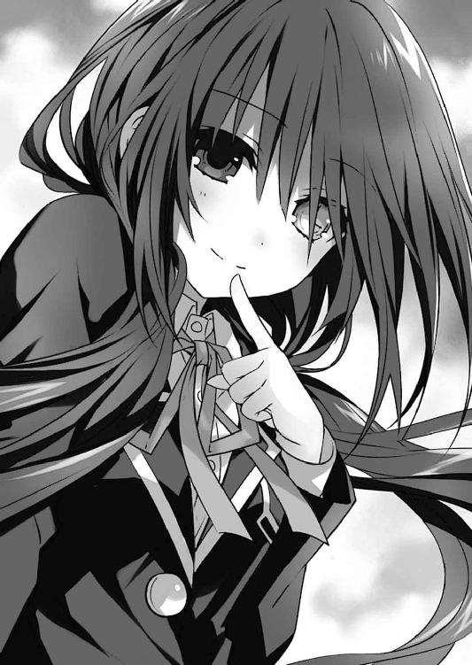
「く......狂三!?」
裏返った声で、少女の名を呼ぶ。
そう。士道の視界に現れたのは、士道を五年前の世界に送った精霊、時崎狂三であった。
どうやらいつの間にか、士道は狂三に膝枕をされていたらしい。
「うふふ、ごきげんよう、士道さん。可愛らしい寝顔でしたわよ」
「......っ！」
なんだか無性に恥ずかしくなって、士道は狂三の膝から飛び起きた。
「あら、あら」
狂三がそんな士道の反応を面白がるように笑い、優雅な動作でその場に立ち上がる。
狂三の装いは、見慣れた赤と黒の霊装ではなかった。士道が狂三に初めて会ったときに身につけていた、来禅高校の制服である。時計の文字盤が刻まれた左目は、長い前髪に覆い隠されていた。
「狂三、おまえ......」
と、士道はそこで身体を緊張させた。
考えてみれば、この世界に存在する狂三が、士道の知っている狂三と同じ記憶を持っているとは限らない。今日一日で士道は嫌というほど思い知っていた。最悪の精霊たる狂三を警戒せねばならないのは当然の事柄だった。
だが、狂三は士道の反応に目を丸くしたのち、口元に手を当てて笑い始めた。
「そこまで警戒しなくとも大丈夫ですわよ、士道さん。もし士道さんを『いただく』つもりであれば、無防備な寝姿を晒していらっしゃるときに済ませていますわ」
「う......」
確かに狂三の言うとおりである。士道は頰に汗を垂らした。
だが、だからといって気を抜いていいような相手ではない。士道は狂三の言葉に一応の同意を示しながらも、油断なく彼女の所作に目を光らせた。
「あらあら。疑り深いですわね。──ともに世界を変えた仲ではありませんの」
言って、狂三がおどけるように肩をすくめてくる。
その言葉に、士道はハッと目を見開いた。
「......！ 狂三、おまえ──」
「ええ、覚えていますわよ。もとの世界のことも。──折紙さんのことも」
「............っ！」
狂三が発した名に、士道は全身が粟立つかのような感覚を覚えた。
それはそうだ。この世界にきて初めて、自分以外に折紙を知る者に出会えたのである。砂漠に放り出された旅人が、標を見つけたようなものだ。士道は狂三に縋り付きたくなる感情を制して、口を開いた。
「狂三、聞いてくれ。この世界、何かがおかしいんだ。折紙が──」
「──精霊になっていた、のですわよね」
士道の言葉に被せるようにして、狂三が言ってくる。士道は驚愕に目を丸くした。
「......っ、知ってたのか？」
「ええ。知ったのはつい先ほど、ですけれど」
「そうか......」
士道は小さく俯いてからあとを続けた。
「一体......どうしてこんなことになってるんだ？ 折紙に何があったっていうんだ？」
「それはわたくしにもわかりかねますわね。でェ、もォ──」
言うと、狂三はその場でくるりとターンをしてみせた。
「今の折紙さんならば......知る方法がないでもありませんわよ」
「ほ、本当か？」
「ええ」
狂三は笑うと、ステップを踏むように踵を屋上の床に打ち付けた。すると、狂三の足下に蟠っていた影が、彼女の身体に纏わり付いていき、赤と黒のドレスを形作る。
霊装。精霊を守る鎧にして城。突然それを顕現させた狂三に、士道は警戒の眼差しを向けた。
「うふふ、そう怖がらないでくださいまし」
言いながら狂三が右手を掲げる。すると、影の中から一挺の短銃が飛び出してきて、その手の中に収まった。
ぺろり、と唇を舐めながら狂三が続ける。
「この【一〇の弾】で折紙さんを撃てば、彼女がこの世界でどのような人生を送ってきたかを知ることができますわ。まあ無論、全て余すところなくとはいきませんけれど、なぜ精霊化するに至ったかに焦点を絞れば、望む情報は手に入ると思いますわよ」
「【一〇の弾】......そうか！」
士道は目を見開いた。【一〇の弾】。それは確か、撃った対象が有する過去の記憶を、狂三に伝える弾だった。それを使えば、折紙に何があったのか知ることができるだろう。
「でも......それなら、もとの世界で折紙が反転したときも、【一〇の弾】で原因が知れたんじゃないか？」
何とはなしに士道が言うと、狂三は大仰に肩をすくめてきた。
「まあ──理論上はそうなりますわね。あの折紙さんに近づいて、【一〇の弾】を撃てればの話ですけれど」
「う......」
士道は頰をぴくつかせた。確かに、反転した折紙に対してそんな悠長な真似ができる余裕はなかったろう。
「と、とにかく、それがあればこの世界で折紙が反転してる原因がわかるんだろう？ 頼む、狂三。力を貸してくれ！」
「うふふ、どうしましょうかしら」
狂三は、面白がるように銃口に唇を触れさせた。
放課後。一度帰路に就いた折紙は一人、来禅高校へと戻ってきていた。
理由は一つ。下校している途中、いつもつけている髪飾りがなくなっていることに気づいたのである。
別に小さなピン一つ、なくしたところでさしたる痛手にはならないのだが──それが昔母に買ってもらったものであるというのであれば話は別だった。
とはいえ、どこで落としたのかははっきりしない。結局折紙は、歩いてきた道を遡って高校まで戻り、昇降口、廊下、教室と巡って、昼休みに五河士道と話をした屋上前の階段へとやってきていたのである。
「あ──あった」
折紙はその場にかがみ込むと、床に落ちていたピンを拾い上げた。
どうやら、士道と話しているときに落としてしまったらしい。たぶん、彼があのときの少年の弟と知って興奮気味に手を取ったときだ。
「気をつけなきゃ......」
折紙はそう呟きながら、指先で簡単にピンを拭い、髪につけた。
と、そこで。
「え......？」
折紙は、ガラス越しに見える屋上に、二つの人影があるのを目撃した。
一つは、クラスメートの五河士道である。
そしてもう一つは──赤と黒の霊装を纏った、精霊〈ナイトメア〉であった。
「あ────」
それを認識した瞬間。
折紙の意識は、急に電源を落とすようにぷっつりと途絶えた。
「ん......？」
士道は、屋上の入り口の方から、キィ、と扉を開けるような音が聞こえてくるのを感じた。
見やると、そこに一人の少女が顔を俯かせながら立っているのがわかる。
「あれ......折紙？」
そう。顔を伏せていたため一瞬わからなかったが──その少女は紛れもなく鳶一折紙であった。もう授業は終わったというのに、こんなところに何の用だろうか。
士道はそれを問おうとして、ハッと言葉を止めた。
理由は単純。今士道の隣に立っている精霊、狂三のことを思い出したからだ。
この世界の折紙もまた、少し前までＡＳＴに所属していた。ということは、狂三と見えている可能性もゼロではない。少なくとも、資料映像で見たことくらいはあるだろう。
「お、折紙、これはだな」
せっかく約束を取り付けたというのに、変な勘ぐりをされてはたまらない。士道は何とか誤魔化そうと声を上げた。
しかし、折紙は士道の声など聞こえていないかのような様子で、顔を伏せ、両腕をだらりとさせたまま、ゆっくりと歩みを進めてくる。
「折紙......？」
「あら、あら？」
士道が不審そうに名を呼ぶと、それに合わせるように狂三が眉を歪めた。次いで、一瞬狂三の姿が影に包まれたかのように黒く染まったかと思うと、すぐにまたもとの姿に戻る。
「この世界では初めまして......になりますかしら、折紙さん？ まあ、もしかしたらあなたはわたくしに会ったことがあるかもしれませんけれど──」
「精、霊......」
──と。
狂三の言葉の途中で、折紙が小さく呟いたかと思うと、その身体の周囲に、蜘蛛の巣のように漆黒の闇が広がった。
まるで、折紙の周りだけが一瞬にして夜になったかのような光景である。その異常に、士道は思わず目を見開いた。
「な──!?」
次いで、その闇が渦を巻くように折紙の身体に搦め捕られていき、まるで喪服のようなドレスを形作る。
それは紛れもなく──
「霊装......!?」
士道は驚愕に染まった声を発した。
そう。屋上に現れた折紙がその身に纏ったのは、精霊の鎧たる霊装だったのである。
しかも士道が以前目にした花嫁衣装のような純白のそれではなく、反転したあとの漆黒の衣だ。
途端、周囲に、息苦しくなるほどの緊張感と重圧が充ち満ちた。微かに足が震え、気を抜いたならその場にくずおれそうになってしまう。
しかしそれも当然といえば当然だった。絶大なる力を持つ破壊の権化たる『魔王』。それが今、目の前に顕現したのである。
「やっぱり──〈デビル〉はおまえだったのか......!?」
士道が問うも、折紙は答えなかった。
しかし、この姿を見た以上はそうとしか考えられない。少なくとも、士道の勘違いではなかったようである。だとするとやはり、折紙が噓を吐いていたということになるのだろうか。あのときはそうは思えなかったのだが──
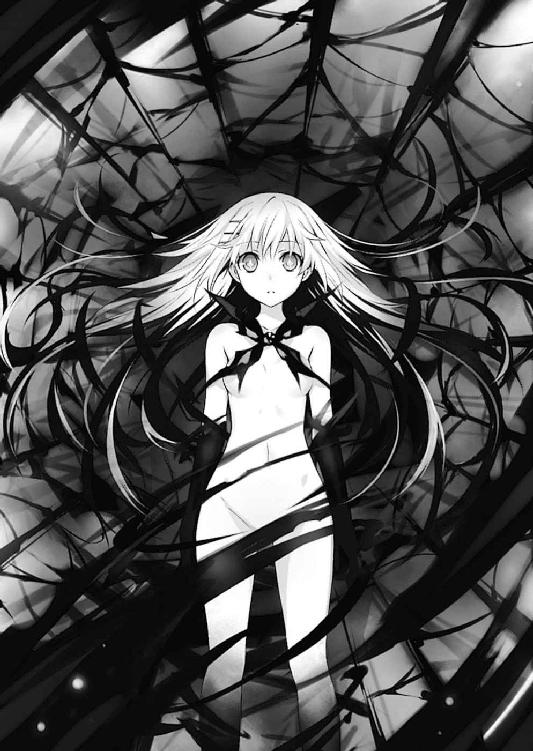
「士道さん、そこにいると危ないかもしれませんわよ」
士道が戦慄しながらも考えを巡らせていると、不意に狂三がそう言ってきた。
次の瞬間、沈黙した折紙の周囲にぽつぽつと幾つもの闇の塊が出現、膨張し、巨大な『羽』のような形を作った。
それには見覚えがあった。もとの世界で雨のように光線を降らせ、街を破壊し尽くした天使──その反転した姿である。
「......〈救世魔王〉......」
折紙が呟くように言葉を発すると、無数の『羽』たちが、その先端を士道と狂三の方に向けてきた。
「......っ！」
突然の事態に、身を強ばらせる。と、次の瞬間、士道はドンと横に突き飛ばされた。
一拍遅れて、狂三が士道の身体を押しやったのだということに気づく。
「ぐ......！」
それを認識したときにはもう、狂三は上空に跳躍していた。一瞬前まで狂三がいた場所に、『羽』から発された幾条もの光線が放たれ、校舎を削りフェンスを突き破って空へと抜けていく。
「随分と──手荒いご挨拶ではありませんのッ！」
叫び、狂三が手にした短銃の引き金を引く。すると銃口から、影を固めたような銃弾が放たれ、折紙を襲った。
だが、折紙の周囲に浮遊した『羽』が盾のように連なったかと思うと、その一撃を容易く防ぐ。
そして残りの『羽』たちが、その先端を空中の狂三に向けたかと思うと──
「く──」
無防備な狂三目がけて、漆黒の光線を放った。
狂三の胸を、腹部を光線が貫き、首が、手足が分断される。華奢な少女のシルエットは、一瞬にして哀れな骸へと成り果てた。
「狂三......ッ!?」
士道の叫びに合わせるように、空中からばらばらと、先ほどまで狂三であったモノが落下してくる。それらは床に触れると同時、炭のようにぼろぼろと崩れ落ちていった。
「お、折紙、おまえ──」
顔を上げ、士道は言葉を止めた。
「え──？」
そして、呆然と声を発する。
それはそうだ。何しろ、狂三を撃ち殺した折紙が、力なくその場に膝を突いたかと思うと、周囲に浮遊していた無数の『羽』が、粒子状になって空気に消えていったのだから。
そしてそれに次いで、折紙の身を飾っていた漆黒の霊装が解けていき、先ほどと同じ制服姿に戻る。
まるで──狂三を殺したことにより、目的を達したといわんばかりに。
「これは......一体......」
士道が、目の前で起こっていることを理解できずにいると、ほどなくして折紙がゆっくりと顔を上げた。
そして。
「......あれ、五河くん？ 何してるんですか、こんなところで」
士道の姿を認めると、あっけらかんとした様子でそう言ってきた。
「は......？」
予想外の反応に、士道は目を白黒させた。
今し方狂三の身体を撃ち抜いたとは思えない、あまりに毒気のない表情に、声音。もしそれらが演技によるものだとするのならば、彼女は歴史に名を残す名女優か、天才詐欺師になれただろう。
「どういうことだよ......こりゃあ......」
士道が呆然と呟くと、折紙は不思議そうに首を傾げた。しかしそれは士道の反応に対するものというより、自分がなぜ屋上にいるのかを思い出しているかのような様子だった。
「もしかして、また......」
折紙が小さな声でそう言って、パンパン、と膝をはたきながらその場に立ち上がる。
「また？ な、何がだ......？」
「え？ あ......聞こえてました？」
士道の言葉に、ばつが悪そうに折紙が頭をかく。
「実は少し前から、たまに意識が途絶えることがあるんです。たぶん貧血か何かだと思うんですけど......」
「意識が......？」
士道は眉根を寄せながらごくりと息を吞んだ。
折紙はそんな士道の様子を不思議そうに見てから、何かを思い出したように「あっ」と声を上げた。
「あの、そういえば授業中に渡れた紙、読んでくれましたか？」
「へ......？ あ、ああ......読んだ、けど」
士道が答えると、折紙はくるりと背を向けた。
「えっと、そういうこと......ですから」
言って、足早に屋上を去って行ってしまう。
「あ──」
呼び止めようとするも、遅い。折紙は校舎内に入っていくとそのままトントンと階段を下りていってしまった。
屋上に一人残された士道は、しばしの間呆然と立ち尽くすことしかできなかった。
折紙が現れ、反転した精霊と化し、狂三を殺して、何も知らぬ顔で去っていった。時間にすれば恐らく五分にも満たない出来事である。しかし、その僅かな時間で、士道の周りの世界は随分と様変わりしてしまった。
「狂三......」
と、士道が呟くように名を呼ぶと。
「──はいはい、お呼びですの？」
士道のすぐ横に影が蟠ったかと思うと、その中から、先ほど折紙に殺されたはずの狂三が顔を出した。
「............」
「あら、あまり驚かれませんのね？」
「......前にも一回、似たようなことがあったからな」
答えながら、士道はくしゃくしゃと頭をかいた。恐らく折紙が現れた段階で、分身体に入れ替わっていたのだろう。
「......その分身体を使い捨てるようなやり方、俺は好きじゃねえ。分身体って言ったって、生きてるんだろう？」
「うふふ、士道さんはお優しいですわね。でもご心配は無用ですわ。【八の弾】を使えば、まさに今殺された『わたくし』を再現することも可能でしてよ」
「............」
無言のまま、細く息を吐く。自分と狂三とで、命に対する考え方があまりにも違いすぎた。
狂三にはその件についてそれ以上話し込むつもりはないらしい。話題を変えるように、折紙の消えた先に視線をやる。
「今の折紙さん、どう思われまして？」
「どう......って言われてもな」
正直、わからないことだらけだった。困惑の表情を作り、あごに手を当てる。
「まあ、一つ確かなのは、【一〇の弾】を使っての情報収集が困難になった......ということでしょうか」
「それは......そうだな」
今の折紙がどのような状態にあるのかはわからなかったが、狂三を見て精霊の姿になったのは間違いないようだった。あれでは接近することすら困難だろう。
「なんで......こんなことに。俺は──俺のしたことは、間違ってたのか......？」
士道が苦々しげに言うと、狂三が、ふうと息を吐いてきた。
「そうは思いませんわ。あのとき折紙さんのご両親を救えていなかったのなら、この世界の天宮市も反転した折紙さんによって容赦なく蹂躙されていたはずですわ。──そう考えるのならば、今この状況も『最悪』ではない......そうは思いませんこと？」
「そ、それはそうかもしれないけど......」
言われて、士道は口ごもった。
狂三の言うこともわからないではない。もとの世界で起こったことを考えれば、今この世界はまだ平和であると言える。
だが......やはり士道には納得できなかった。あのあと折紙に何があったのか。それが気になってたまらなかったのだ。
そんな士道の表情を見てか、狂三がくすくすと笑う。
「まあ、士道さんならばそう考えると思いましたわ。──確かにわたくしも、一つの出来事を変えた際、どのように世界が書き換えられたのかには興味がありますけれど」
「！ なら──」
士道は言いかけて、言葉を止めた。狂三が指を一本立て、士道の唇を塞ぐようにしてきたのである。
「でェ、もォ......わたくしもそこまでお人好しではありませんの。ここから先は別料金になってしまいますわよ？」
言って、にィ、と唇を歪めてくる。その凄絶な笑みに、士道は思わず息を吞んだ。
「ふふ──」
そんな士道の様子に、狂三は肩をすくめると、再びその場でくるりと回転してみせた。
「では、わたくしはこれで。──またお会いしましょう、士道さん」
そうとだけ残して、狂三は影の中に消えていった。
◇
「──それで」
士道が家に帰ると、黒リボンの司令官モードで待ち構えていた琴里が、口にくわえたチュッパチャプスの棒をピンと立てながら言ってきた。
「どういうことか、説明してくれるんでしょうね、士道」
言って、ギロリと士道を睨み付けてくる。
その理由は士道にもよくわかっていた。──折紙の件についてだ。
五河家のリビングには今、三人の人間がいた。一人は士道、一人は琴里そしてもう一人は、既に手元に小型端末をスタンバイした、眠たげな顔の女性だった。〈ラタトスク〉解析官・村雨令音である。
「れ、令音さんまで」
「......ん。まあ、書記代わりとでも思ってくれ。もし不都合があるようなら席を外すが」
「や、そんなことはないですけど......」
言いながらも、士道は頰をかいた。
十香や四糸乃たち他の精霊が一人もいないあたり、恐らくマンションに待機しているよう言い含めているのだろう。完全に士道を事情聴取する気満々といった様子だった。
「さ、じゃあ士道」
琴里が促すようにあごをしゃくってくる。
「あ、ああ......」
しかし。その雰囲気に気圧されながらも、士道は口ごもった。
確かに朝、〈ラタトスク〉の助力を求めるために、事情は帰宅後に説明すると言った。だが、いざその場面が訪れてみると、己の身に起こったことを一体どう説明すべきか迷ってしまったのである。
すると、士道のそんな思考を察したのか、琴里が不機嫌そうに鼻を鳴らした。
「......ふん。何よ、この後に及んで話せないっていうの？ それとも、私が士道の話を理解できるかどうか不安？ 見くびってくれるじゃない。士道から見て私は、そんなに頼りない司令官かしら？」
「いや、そんなつもりは」
士道が首を振ると、琴里は少し拗ねたように唇を突き出し、小さな声をこぼした。
「......もうちょっと頼ってくれたっていいじゃない......おにーちゃん」
「............！」
琴里に言われて、士道はハッと目を見開いた。
そして頭をくしゃくしゃとかいてから、はあとため息を吐く。
「......そうだな。悪かったよ、琴里」
自戒するように言って、士道は小さく頭を下げた。
──一体、何をそこまで懸念していたのだろう。琴里は、士道の目の前にいるこの小さな少女は、士道よりもずっと頭がよく、ずっと強い女の子であるというのに。
「変な話と思うかもしれないが、今から俺が話すのは全部本当のことだ。──聞いてくれるか？」
士道が言うと、琴里は一瞬、表情をパァッと明るくした。が、すぐにピクリと眉を揺らし、司令官モードの顔に戻って首肯してくる。
「ええ、もちろんよ」
士道はそんな琴里の様子に苦笑してから、話を始めた。
折紙という少女と知り合いであったこと。
その折紙が精霊化、そして反転し、街が破壊されたこと。
士道はそれを防ぐため、狂三の力で時間遡行をして五年前に戻り、折紙の両親を助けることで、世界が辿るはずだった道筋を変えたこと。
だが、折紙は〈デビル〉という名の精霊として、この世界に存在していたこと。
──時間にして、一五分くらいだろうか。
蕩々と、士道は琴里と令音に、自分の経験してきたことを打ち明けた。
「......と、こんなところだ」
「............」
話を終えると、琴里はふうむと唸ったのち、小さくうなずいた。
「──世界の書き換え......、なるほどね。昨日から士道の様子がおかしかった理由がようやくわかったわ」
言って、あごに手を当てる。
「まあ、とりあえず信じておいてあげる。士道が私にそんな噓を吐く理由も思い当たらないしね。それに──」
琴里は令音に目配せした。令音が「......ん」と小さく言って、手元の端末を操作したのち、その画面を士道と琴里の方に向けてくる。
「ん......？」
士道はその画面を覗き込み、ハッと息を詰まらせた。
そこに表示されていたのは、高校の屋上に立つ、反転した折紙の姿だった。画像の端に、士道と狂三の姿も見て取れる。まさについ先ほど、士道が体験してきた場面だった。
「これは──」
「ええ。今日の夕方、自律カメラが捉えた映像よ。......鳶一折紙の情報を探るために幾つかカメラを飛ばしてたんだけど、まさかこんな決定的瞬間が拝めるとは思わなかったわ」
琴里が難しげな顔をしながら、ふうむと唸る。
「鳶一折紙が〈デビル〉であることは間違いない。でも、本人にその自覚はない。......実際、彼女のパラメータも令音に解析してもらったけど、噓を吐いている様子はないわ」
「じゃあ、やっぱり......」
「ええ。鳶一折紙は、自分が精霊になっていることに気づいていない可能性があるわ」
琴里の言葉に、士道は息を吞んだ。
「そんなこと......あり得るのか？」
「今までにないパターンではあるけれど......実例がある以上、否定することはできないわ。一体どうしてそんなことになったのかはわからないけれど」
琴里が言うと、端末を操作していた令音が小さく息を吐きながらあごを撫でた。
「......少し、いいだろうか」
「ん、どうしたの、令音」
「......ん。これはあくまで仮説というか、推論に過ぎないのだが、シンの話を聞いて疑問に思った点があってね」
「疑問......？ なんですか？」
士道の言葉に、令音がうなずきながら続けてくる。
「......ああ、シンは世界改変を成功させた。そして、もとの世界のことは皆覚えていない......だったね？」
「はい。もとの世界のことを知ってるのは、俺と狂三だけでした」
「......それだよ」
「え？」
士道が首を傾げると、令音は指を一本立ててみせた。
「......君と狂三にだけ、なぜもとの世界の記憶があるのだろうかと思ってね。狂三は己の能力によるものだからかもしれないが、シンに関してはその理由がわからない」
「うーん......」
言われてみればその通りではあった。士道が世界を改変した張本人だから......と何となく納得していたのだが、確かに、今ここにいる自分は、新しく構築された世界を生きてきたはずの士道である。その記憶を持たず、もとの世界のことを覚えている明確な理由はわかっていなかった。
「......恐らく、もとの世界の記憶を有するには、何らかの条件があるんだ」
「条件......一体、どんな」
「......詳しくはわからない。狂三を例外としてしまうなら、サンプルケースが少なすぎるからね。だがたとえばその条件が、『狂三によって【一二の弾】を撃たれたことがある』、『霊力を有している』......といったものだとしたら、どうかな」
「？ それは......」
士道が困惑した顔をすると、その向かいで琴里が「あっ」と目を丸くした。
「そうか、もし複数の条件が必要だとしたら......鳶一折紙は〈ファントム〉によって霊力を与えられた瞬間、もとの世界であったことを思い出してしまう可能性がある。それまでこの世界の記憶を持っていたにも拘わらず......！」
「あ......！」
琴里の説明で、士道もようやく理解した。
「ちょ、ちょっと待ってください令音さん。ってことは......あの反転した折紙は、『もとの世界の記憶を取り戻してしまった折紙』だって言うんですか......!?」
士道の言葉に、令音は静かに目を伏せた。
「......言っただろう。これはあくまで仮説だ。可能性の話に過ぎない。だが......そう考えると、筋が通るのも事実だ」
「で、でも......学校に来たときの折紙は普通──っていうか、この世界の記憶を持った折紙でしたよ？」
「......詳しいことは狂三にでも聞かないとわからないが、最初からもとの世界の記憶を保持していたシンとは異なり、折紙はこの世界の記憶を持っていたんだ。そこにもとの世界の記憶という情報が強制的に流し込まれたとしたら一体どうなるか......少なくとも、記憶の宿主によい影響を与えるとは思えない。自己を防衛するために、この世界の記憶を持つ折紙と、もとの世界の記憶を持つ折紙が分離されたとは考えられないだろうか」
そして、と令音が続ける。
「......もとの世界の記憶を持つ折紙を呼び起こすスイッチとして考えられるのは──」
「──精霊の存在......ってわけね」
琴里が、チュッパチャプスの棒をピンと立てながら言う。令音が「......恐らくね」と首肯した。
「......教室にいた十香に反応しなかったところを見ると、霊力に反応を示しているのかもしれない。だとしたら......彼女の前で限定霊装を顕現させるのは非常に危険だね」
確かに、折紙が精霊化したのは、狂三の姿を見たときのみだった。そして、狂三を殺したあとは、すぐにもとの折紙に戻っていた。
「で、でも......もし仮にそれが本当だとしたら、一体どうすれば──」
「何言ってるの」
士道が震えた声で言いかけると、琴里がぴしゃりと遮ってきた。
「確かに相手は最凶最悪の反転精霊〈デビル〉よ。でも、裏を返せば強大な霊力を有していながら、特殊な条件を満たさない限り精霊化しないということにもなる」
「それは......」
士道は言いかけて、ぐっと拳を握った。──琴里の、言うとおりである。逃げていては何も始まらない。
「──イレギュラーなケースではあるけれど、鳶一折紙が〈デビル〉とわかった以上、〈ラタトスク〉がやることは一つよ」
琴里が士道に視線を送ってくる。
言われるまでもない。士道は唇を引き結び、こくりと首肯した。
〈ラタトスク〉の理念は、空間震の発生原因である精霊を、平和的手段で以て無力化すること。
そしてそのためには、一つの手段を用いねばならなかった。
即ち──『デートして、デレさせる』こと。
琴里は士道の反応を見て、満足げにうなずいてから、くわえていたチュッパチャプスの棒を指で挟み込み、ビッと士道の方に向けてきた。
「......と、いうわけで、そうと決まれば早速明日から動くわよ。士道、どうにか折紙とコンタクトを取って、デートに誘ってちょうだい。遅くとも今週中にね」
「ああ......そうだな」
と、そこで士道はとあることを思い出し、「あ」と声を発した。
「？ どうかした？」
「もうしてたわ......デートの約束。今週の土曜なら空いてるって......」
「はぁ!?」
士道の答えがよほど意外だったのだろう、琴里が凄まじい大声を発した。
「ど、どういうことよ。観測結果が出る前に口説いたってわけ？ 士道が？」
「い、いや......別に口説いたってわけじゃ......」
「......じゃあなんでデートって話になるのよ」
「それは、その......」
士道が返答に困っていると、琴里がジトーっとした視線を送ってきた。
「ふぅん......もとの世界で士道と鳶一折紙がどういう関係だったのか、ちょーっと聞く必要がありそうね」
「な、何を......」
琴里が、ネズミをいたぶる子猫のような手つきで士道のあごを撫でてくる。士道は、その微妙な感触に顔を青くした。
◇
「......ああああ」
夜。自室のベッドに横になりながら、折紙はロングピローを抱えてゴロンゴロンとのたうち回っていた。
理由は単純。今日の自分の行動が、今になって恥ずかしくなってきたのである。
いくら向こうから誘われたこととはいえ、あの返事の返し方は乙女チックに過ぎる。しかもあれから屋上で再会してしまうというおまけ付きだ。おまえどこの少女漫画の主人公だよ、と自分で自分に突っ込みを入れたくなるような状態だった。
──だが。折紙は息を吐くと、ベッドの上に仰向けになり、ぼうっと天井を見つめた。
あの少年......五河士道の顔を見たときは、本当に驚いた。
折紙の記憶の奥深くに刻まれた少年。士道は五年前、折紙の両親を、その身を挺して助けてくれた彼に、本当に瓜二つだったのである。
だからだろうか、折紙は、士道の顔を見た瞬間、奇妙な感慨に襲われたのだった。
否──それだけではない。
彼の声を聞いたとき。
彼の匂いを嗅いだとき。
彼の手に触れたとき。
──折紙は、心の中になんとも形容しがたい感情を覚えてしまっていたのだ。
一体、あれは何なのだろうか。決して不快ではない、しかし、心を内側からくすぐられるかのような、不思議な感覚だ。
「......まさか、これって」
折紙は、小さく声を発した。正体不明のこの感情。今まで覚えたことのないこの思い。もしかしたらこれは──
と、そこで、枕元に置いてあった携帯電話がメールの着信を報せてきた。
「......っ！」
突然の電子音に、弾かれるように起き上がる。
そして呼吸を落ち着けるようにしてから枕元の携帯電話に手を伸ばし、画面に目をやると、そのメールの送り主が士道であることがわかった。
「──！」
それを認識した途端、自分でも意味がわからないくらい心臓がばくばくと鳴り始める。
だが、このまま固まっているわけにもいかなかった。大きく深呼吸をしてから画面を操作し、本文に目を這わせる。
そこには、今日の急な誘いを詫びる文、また会うことができるのはとても光栄であるという文、そして、土曜日の待ち合わせ場所と時刻が書かれていた。
「わっ、わわっ」
折紙は、熱された石でも持っているかのような調子で携帯電話を両手の中で転がすと、ベッドの上で慌ただしく転がり始めた。
なんだかもう、落ち着かない。今日会ったばかりの男子からメールを一通受け取っただけだというのに、頭の中がぐるぐると渦を巻いていた。
「......！ そ、そうだ、返信──」
数十秒間あたふたと踊ってから、折紙はようやくその行動に思い至り、携帯電話に文字を入力していった。
「......待ち合わせ場所と時間、了解しました。と......」
が、送信しようとしたところで手が止まる。
──本当にこの返信でよいのだろうか。いくらなんでも、あまりに簡素過ぎはしないだろうか。この返信を受け取った士道が、事務的に過ぎるメールに愛想を尽かし、土曜の約束を取りやめにしてきたりはしないだろうか......
「............」
折紙は無言で文章を削除すると、姿勢を正し、再度メールをしたためていった。
士道のメールの一文一文に丁寧な返事を付け、声をかけてくれて嬉しかったこと、次の土曜が待ちきれないこと、士道のことを考えると不思議な気分になってしまうことなどを、詩的表現満載で書き綴った。が。
「......乙女か！」
途中で恥ずかしくなってしまい、折紙は頰を染めながら再び本文を削除した。
結局、折紙が士道のメールに返信できたのは、日付を跨いだあとだった。
◇
一一月一一日、土曜日。
士道は一人、天宮駅前に至る道を歩いていた。
空は晴天。空気こそひんやりとしているものの日差しは暖かく、もう冬も近い日の陽気とは思えなかった。絶好のデート日和である。
『──にしても、少し早くない？ 約束の時間は一一時なんでしょう？』
と、右耳に装着された小型インカムから、琴里の声が聞こえてくる。
このインカムは士道がいる場所からおよそ一五〇〇〇メートル上空に浮遊した空中艦〈フラクシナス〉に繫がっており、その艦橋に揃ったクルーたちが、士道のデートをサポートしてくれるのである。
「いや......」
士道は、小さな声で答えながら、ちらと携帯電話の画面に目をやった。一〇時一二分。待ち合わせの時刻までまだ四八分もある。
「折紙なら、もう来ててもおかしくない。もちろん、こっちの折紙は俺の知ってる折紙とは微妙に違うから確実とは言えないけど......長く待たせちまうよりはマシだろう？」
士道が言うと、琴里がインカム越しに『ふーん......』と含みのある声を発した。
『随分詳しいのねぇ──ただのクラスメートのわりには』
棘のある口調で、琴里が言ってくる。士道は乾いた笑みを浮かべながら額に汗を滲ませた。
もとの世界での折紙との関係性を求められた際、そう答えていたのだが......どうも、琴里は信じ切っていないようだった。
「......もとはといえば、折紙と知り合うきっかけになったのはおまえらなんだけどな」
士道は頰をぴくつかせながらインカムに向けて恨み言を呟くように言った。実際、五年前の出来事こそあったものの、士道と折紙が頻繁に話すようになったのは、琴里の提唱する『訓練』で、折紙を口説かされたことが発端なのだ。一応そのことも琴里には話していたのだが......
『さぁー、私には何のことかさっぱりわからないわね』
「ぐ......」
実際、この世界の琴里はそんなことを言った覚えがないのだろう。士道はどう言い返したものかと奥歯を嚙んだ。
と、そんなことを話している間に、駅前の広場まで辿り着く。
折紙と待ち合わせをしていたのは、駅前広場の噴水前だった。ちょうど、十香や狂三ともトリプルブッキングでデートをせねばならなかったときと同じ待ち合わせ場所である。
「あ──」
広場に足を踏み入れた士道は、短く声を発し、その場に足を止めた。
理由は単純。既に噴水の前に折紙の姿があったからだ。
とはいえ、別に折紙がその場にいたことに驚いたわけではない。士道が一瞬足を止めてしまった理由は、彼女の装いにあった。
可愛らしい意匠の施されたブラウスに、カーディガン。秋らしいカラーのスカート。士道の記憶にある折紙ではあまりしないようなガーリーなスタイルに、思わず目を奪われてしまったのである。
『士道？』
「......っ！ あ、ああ」
琴里に声をかけられ、ハッと身体を震わせる。
『はあ......先が思いやられるわね』
「わ、悪い......」
『集中してちょうだい。もとの世界ではどうだったか知らないけれど、少なくとも今あなたの目の前にいるのは、精霊狩りの〈デビル〉よ。気を抜いていたら何が起こるかわからないわ。それこそ、時崎狂三に応対するつもりで挑みなさい』
琴里が注意するように言ってくる。士道は心拍を整えるように深呼吸をしてから首を前に倒した。
「ああ、わかってる」
『よろしい』
琴里はすうっと息を吸うと、
『さあ──私たちの戦争を始めましょう』
そう言って、作戦の開始を宣言した。
同時、士道は止まっていた足を再度動かすと、噴水の方に向かっていった。
すると、それに気づいたのだろう。噴水の前に立っていた折紙がふっと顔を上げ、驚いたような顔をしてきた。
「五河くん？ 早いですね」
「はは......それはお互い様じゃないか？」
士道が言うと、折紙は一瞬広場に立てられた時計を見て、恥ずかしそうに肩をすぼませた。
「あの、待たせてはいけないと思って」
「ああ、実は俺もそう思って」
士道がそう言うと、折紙は目を丸くした。そののち、どちらからともなく笑いが漏れる。
「今日は誘ってくれてありがとうございます、五河くん。......でもあの、私、恥ずかしながら、男の人と二人で出かけた経験がないもので、もしかしたら至らぬ結果になるかもしれないんですけど」
「い、いやいや、俺だってそんなに経験あるわけじゃないし」
折紙の言葉に、士道は首を振った。するとそれに突っ込みを入れるように、右耳のインカムから琴里の声が響いてくる。
『あれだけの数の精霊落としといてよく言うわ』
「う、うるせ」
「？ 何か言いましたか、五河くん」
折紙が不思議そうに小首を傾げてくる。士道は慌てて「いや、なんでもない」と誤魔化した。
「ていうか......俺たちクラスメートなんだし、敬語、やめないか？」
「でも」
「ほら、俺もなんか落ち着かないしさ。頼むよ」
言って、士道が手を合わせると、折紙はしばし困ったように眉を八の字にしたが、やがてそれを承諾するようにこくりとうなずいた。
「わかりまし......あの、......わかった」
折紙が、慣れない様子で言ってくる。久方振りの調子に、士道は思わず頰を緩めた。
「はは......やっぱり、折紙はそうじゃないとな」
「へっ？」
士道の言葉に、折紙が素っ頓狂な声を上げる。そこで士道は、先日と同じように無意識に『折紙』と呼んでしまっていたことに気づいた。
「あ......すまん。つい呼んじまうんだよな。その......なんだ、綺麗な名前だから」
士道は誤魔化すように言った。その言葉に噓はないのだが、実際のところ、もとの世界でそう呼んでいたという理由の方が大きかった。もともとは鳶一と呼んでいたのだが、いつの間にか名前で呼ぶことに慣れてしまっていたのである。
折紙はどこか落ち着かない様子だったが、悪い気はしていないらしかった。口元をほころばせ、笑みを浮かべてくる。
「ありがとう。──お父さんとお母さんが、二人で付けてくれた名前なの」
「そっか......」
お父さんと、お母さん。その言葉に、士道は複雑な思いが広がるのを感じた。
が、そんな士道の思考に気づいていない様子で、折紙が少し視線を逸らしながら唇を動かした。
「だから、もし五河くんがそう呼びたいなら、呼んでくれても──いいよ」
「え？」
「その、折紙って」
微かに頰を染めながら折紙が言う。その様に、士道は不覚にもどきりとしてしまった。
『士道、何黙ってるのよ！ せっかく相手が歩み寄ってくれてるのよ？』
「あ──」
琴里に耳元で声を発され、士道は慌てて言葉を継いだ。
「あ、ありがとう......折紙」
先ほどまでは自然に出てしまっていた名前だというのに、いざ正式に許可を出されると呼ぶのが少し恥ずかしかった。折紙と同じように微妙に相手の目から視線を外しながらそう言う。
「うん」
「あー......っと、じゃあ、あれだ。俺のことも士道でいいよ。じゃないと、不公平だしな」
「え？」
士道が言うと、折紙が意外そうに目を丸くした。そして、少し口をモゴモゴさせてから声を発してくる。
「士ど──、......」
だが、途中で言葉を止めると、落ち着かない様子で頰をかいた。
「......慣れてからでも、いいかな」
「え？ ああ、も、もちろん！」
士道が首肯しながら言うと、数秒の間沈黙が流れた。
『士道、あまり会話がないのは望ましくないわ。何でもいいから場を繫いでちょうだい』
琴里の指示が飛んでくる。確かにその通りだ。頭の中で話題を探し、口を動かす。
「あのさ」
「あの」
が、発した声が、折紙と被ってしまった。奇妙な気恥ずかしさが二人を襲う。
そんな状態を先に打ち破ったのは折紙だった。士道に視線を戻し、尋ねてくる。
「そういえば五河くん、今日は何をするの？」
「え？」
「ごめん。でも、時間と待ち合わせ場所しか聞いてなかったから」
「あ、ああ、そうだったな。今日は──」
士道が言いかけると、右耳に、久方振りのあの音が鳴り響いてきた。
天宮市上空一五〇〇〇メートルに浮遊する空中艦〈フラクシナス〉の艦橋には今、〈ラタトスク〉の精鋭たちがずらりと居並んでいた。
琴里の指揮の下、士道のサポートをするために、全国より選りすぐられた恋愛マスターたちである。皆一様に、理想的な緊張状態を保ちながら、艦橋に設えられた巨大なメインモニタに目をやっていた。
メインモニタに映っているのは、自律カメラから送られてきた地上の映像である。士道の視点をトレースするように、今回のターゲット、鳶一折紙の姿がバストアップで映し出され、その周りに別のカメラから捉えられた別アングルの映像や、各種パラメータが表示されていた。
そして──今。折紙が質問を発してきた瞬間、艦橋にピコン！ という音が鳴り響き、画面上にウインドウが展開されたのである。
「出たわね、選択肢......！」
艦橋上段の艦長席に腰掛けた琴里は、チュッパチャプスの棒を小刻みに上下させながら膝を叩いた。
〈フラクシナス〉に搭載されたＡＩが、対象の感情値の動きを観測し、そのとき士道が取るべき行動を三択の選択肢として表示したのである。
①「実は、君と見たい映画があるんだ」映画館で恋愛映画を。
②「買い物をしようと思っていたんだ」楽しいショッピング。
③「まだるっこしいのはやめにしないか」大人のホテルに直行。
「総員、選択ッ！」
琴里の号令に従い、クルーたちが一斉に手元のボタンを押す。
するとすぐに、メインモニタに集計結果が表示された。
最も多いのは──②。
「ふむ......②か。無難なところね」
琴里があごを撫でながら言うと、艦橋下段のクルー、〈早すぎた倦怠期〉川越が声を上げてきた。
「①も捨てがたいですが、初っぱなから会話のない空間に入ってしまうことに不安がありますね」
次いで、同意を示すように〈保護観察処分〉箕輪が唇を開いた。
「その点②は、非常に汎用性の高い選択です。様子を見る意味も込めて順当な選択でしょう。買い物が嫌いな女の子はいませんしね」
皆が異存なし、と首肯する。そんな中、〈藁人形〉椎崎が頰に汗を垂らしていた。
「......ていうか、なんでいきなり③なんて選択肢が出てくるんでしょう......」
「そこは〈フラクシナス〉のＡＩに聞いてみないとわからないわね」
言いながら、琴里は肩をすくめた。実際琴里も、以前十香を攻略する際、士道と十香をご休憩のあるホテルに誘導したことはあるのだが、あれはあくまでこちらの世界のことを知らない精霊だからできたことだ（余談だが、士道がキスより先の行動に移ろうとしたなら、清掃員に扮した機関員が踏み込む予定だった）。
だが、今回のターゲットは元人間の精霊。即ち『それ』が、何のための施設かを知っている可能性が高いのである。デートの初めからそんなところに連れて行こうものなら、平手打ちをもらっても文句は言えまい。
琴里はマイクを引き寄せると、士道に向かって指示を発した。
「士道、決まったわ。②──」
『──ちょっと待ってくれ』
が、琴里の言葉を遮るように、士道が折紙に聞こえないようひそめた声で言ってきた。
「どうしたのよ」
『......その選択肢だったら、試してみたいことがあるんだ』
「え？」
いつになく真剣な士道の声に、思わず目を丸くする。士道がこんなことを言い出すのは初めてだったのだ。
しかし、すぐに気づく。今回の精霊──鳶一折紙という少女の特殊性を。
士道の言葉によれば、今この世界は、五年前の出来事によって分岐した世界であり──別の可能性の世界では、士道と折紙は親しい間柄だったという。
ならば、琴里たちが把握していない折紙の趣味嗜好を士道が知っていてもおかしくはなかった。
琴里は一瞬のうちに考えを巡らせると、チュッパチャプスの棒をピンと弾いた。
「──いいわ。今回は特別よ。あなたの思う選択肢を選んでちょうだい、士道」
『............』
琴里が言うと、士道は了解を示すように無言でインカムを小突いてきた。
そして、メインモニタの中で折紙に視線を向ける。
『なあ、折紙。行きたいところがあるんだが、いいか？』
『うん、いいよ』
折紙がうなずき、士道と連れだって道を歩いていく。
そして、どれくらい進んだ頃だろうか。士道が不意に足を止めた。
『えっ？』
その目の前にある建物を見上げ、折紙がぽかんとした顔を作る。
しかしそれも仕方のないことではあった。何しろ士道が折紙を連れてきたのは、看板に宿泊料金と休憩料金の書かれた、お城のような建物だったのである。
途端、艦橋内にけたたましいアラームが鳴り響く。同時、パーソナルモニタに目をやっていた〈社長〉幹本と〈次元を越える者〉中津川が悲鳴じみた声を上げた。
「感情値、安定しません！」
「鳶一折紙！ 動揺しています！」
「ったりまえでしょ何考えてんの士道おおおおおお!!」
琴里は叫びを上げると、マイクをたぐり寄せた。
「士道！ 折紙が怒る前に誤魔化しなさい！」
『え？ いやでも』
「いいから、手遅れになる前に早く!!」
琴里が言うと、士道は一瞬迷うような素振りを見せたあと、折紙に笑みを作った。
『さ、こっちだ、こっち』
『あ......ここじゃなかったんだ』
折紙がホッとしたように安堵の息を吐く。
『そ、そりゃそうさ。ほら、行こうぜ』
『う、うん』
士道は折紙を連れて、ホテルの前を通り過ぎていった。そこでようやく、鳴り響いていたアラームが収まる。
「はあ......まったく何考えてるのよ士道。最初のデートでいきなりそんなところに行ったら引かれるに決まってるでしょ」
琴里が額の汗を拭いながら言うと、士道が腑に落ちないといった顔を作りながら小声で返してきた。
『すまん。折紙は絶対ここだと思ったんだが......』
「いやどういうことよそれ」
何を以て士道が折紙とホテルを結びつけているのかがわからなかった。頰をぴくつかせながら返す。
「とにかく、②よ。ショッピングに行きましょう」
『......了解』
士道がうなずき、折紙に買い物に行こうと伝え始める。
そんな光景をメインモニタで見ながら、琴里は艦橋下段のクルーに話しかけた。
「で、折紙の好感度はどうなってるの？ あまり下がってないといいけど......」
「そ、それが......」
琴里が問うと、中津川が困惑した様子で眼鏡の位置を直した。
「感情値は大きく変動していたのですが......好感度は、一切低下しておりませぬ......いえ、それどころか、微かに上がってさえいるような......？」
「なんですって？」
中津川の言葉に、琴里は訝しげな声を上げた。
折紙を伴いながら路地裏を抜け、そのまま大通りを歩いていく。
するとその途中、折紙が不意に声を上げてきた。
「それで、どこへ行くの？」
「ああ、買い物でも行こうと思って」
士道が答えると、折紙は首を傾げた。
「何を買いに？」
「あー......っと......」
そういえば、何を買うかまでは決められていなかった。ぽりぽりと頰をかきながら考えを巡らす。
『待ちなさい。選択肢が出たわ』
すると、右耳のインカムに琴里の声と、選択肢を読み上げる自動音声が響いてきた。
艦橋のメインモニタに、三つの選択肢が表示される。
①セレクトショップで彼女をコーディネートしてあげよう。
②ペットショップで動物と戯れ、二人の距離を縮めよう。
③強力な精力剤や媚薬の並んだ裏通りの薬屋に行こう。
「総員、選択ッ！」
琴里が叫ぶと、モニタに集計結果が表示された。①が最も多く、僅差で②が票を集めている。さすがに③を選んだ者はいなかった。
「①か。私と同意見ね」
琴里の声に応ずるように、クルーたちが返してくる。
「まあ、妥当な線でしょう」
「②も悪くはないですが、動物は好き嫌いが分かれますからね」
「......ていうか、この③ってなんですか？ 随分と特殊な気がするのですが......」
川越が眉をひそめながら言う。確かに、一つだけ随分と毛色が違う選択肢だった。ＡＩの考えはよくわからない。......一度大規模なメンテナンスが必要だろうか？
「士道、聞こえる？ ここは順当に①──」
だが、琴里が言いかけたところで、
『いや③しかないだろこれは』
インカムの向こうから、当然といった調子で士道が声を発してきた。
「は？」
士道の言葉に、思わず眉根を寄せる。
「何言ってるのよ士道。冷静になりなさい。明らかに年頃の女の子が行くようなところじゃないじゃない！」
『いやでもほら、折紙だし......』
「どういうこと!?」
意味がわからない。琴里は悲鳴じみた声を上げた。
『どういうことって言われても......折紙といえば精力剤、精力剤といえば折紙みたいなところあるじゃないか』
士道が常識を説くような口調で言ってくる。そのあまりに堂々とした調子に、琴里は頭に手を置いた。
「いやちょっと待ってマジで意味わかんない。士道の知ってる『鳶一折紙』って、一体どんな女の子なのよ」
『え......？ そりゃあ、各種精力剤を煮詰めた液体を飲ませてきたり、家に逃亡防止用のトラップを仕掛けてたり、背中に負ぶったら首筋舐めてきたりする女の子だけど......』
「はぁ!? ふざけてるの？ そんな女の子いるわけないでしょ！」
『そ、そんなこと言われてもなあ......』
士道が困ったように眉を歪める。どうやら冗談ではなく、本気でそう言っているらしい。
と、琴里はそこで、先ほどの鳶一折紙の好感度の動きを思い出した。
あの意外に過ぎる選択肢に動揺はしていたものの、好感度は落ちていなかった。もしかしたら、これは......
琴里は二秒で考えを纏めると、フンと息を吐いた。
「......いいわ。試してみなさい」
「司令!?」
艦橋下段から意外そうな声が響いてくる。しかし琴里はメインモニタを見据えたまま言葉を続けた。
「その代わり、もし少しでも好感度が下がったり、感情値が不安定になったりしたら、すぐに①に移行すること。いいわね？」
『あ、ああ、わかった』
士道はそう答えると、折紙を連れて路地裏に入っていった。
「──よし、確かここだ」
「え？」
士道が裏通りにある薬屋の前で足を止めると、折紙は驚いたように目を丸くした。
だがそれも仕方あるまい。一見しただけではただの雑居ビルにしか見えないのだ。しかし、ビルに入って二階に上がると、途端、お化け屋敷のような内装の薬屋が姿を現した。普通に生活していただけでは、まず発見できないであろう穴場スポットである。士道も、もとの世界で折紙にこの店の存在を教えられていなかったなら、ここに辿りつくことさえできなかったろう。
店内には、一般的なドラッグストアではあまりお目にかからないようなパッケージの瓶が所狭しと並べられていた。ラベルに書かれている文字も明らかに日本語ではなく、怪しさ満点である。
「ここ......何のお店？」
折紙が怪訝そうな顔をして問うてくる。が、さすがに「折紙は常連じゃないか」とは言えず、適当に言葉を濁すにとどめた。
「まあ、ちょっと見ていこうぜ。あんまり気に入らなかったら別の店に行こう」
「う、うん......」
折紙が不思議そうな様子で、店内に並ぶ怪しげな薬瓶を眺めていく。しかしどうもピンと来ていないようで、時折首を傾げていた。......やはり士道が知っている折紙とは趣味嗜好が異なるのだろうか。
だとしたら、琴里の言うとおり早めに方針変更をした方がいいかもしれない。確か琴里の指示は、折紙の服を見にいけ、だったか。まあ普通の女の子が対象、というのであれば間違いなくそちらが正解だ。
「五河くん」
と、士道がそんなことを考えていると、折紙が声をかけてきた。
「やっぱり......私にはよくわからないみたい。他のところに行かない？」
「あ、ああ、そっか。なんかごめん──」
が。士道はそこで言葉を止めた。
理由は単純。折紙は店に並んだ品物を見てか、困惑したように眉を八の字にしていたのだが......いつの間にかその手に買い物カゴが握られ、その中に、店の中でも一際強力そうな精力剤や媚薬が満載されていたからだ。
「折紙、それは......？」
「えっ？」
士道が指さすと、折紙はまるで今それに気づいたようにハッと目を見開いた。
「こ、これは......私ったら、一体いつの間に......？」
折紙が額を押さえ、立ちくらみを感じたかのようにふらつく。
「だ、大丈夫か？」
慌てて士道がその身を支えた瞬間、インカムからけたたましいアラームが響いてきた。
『士道！ 折紙の感情値がもの凄い波を作っているわ！』
「と、とりあえずここ出ようか！ な!?」
琴里の声を聞くなり、士道はよろめく折紙を連れて店を出た。
それから少し経って、ようやく折紙が落ち着きを取り戻す。
「ごめん、五河くん......どうしちゃったんだろ、私ったら」
「ま、まあ気にするなって。俺こそ、こんなとこに連れてきちゃって悪かったな。──そうだ、よかったら次は服とか見にいこうぜ」
士道が言うと、折紙はこくりとうなずいた。
そして再び、二人並んで道を歩き出す。
が、そこで士道は頰をかいた。服を見にいくのはよいのだが、折紙がどのような店を利用しているかを知らなかったのである。確かもとの世界の折紙は、私服の購入はほとんど通販で済ませてしまうという話だった。
「そういえば折紙っていつも、どんな店で服買うんだ？」
「うーん......大体家の近辺で済ませてたかな」
言って、少し恥ずかしげに苦笑する。
「本当はもうちょっと凝った方がいいとは思うんだけど......どうもそういうの、苦手で。あんまりセンスないんだよね、私」
「そんなことねえよ。今日の服とか、可愛いぞ？」
「......っ！」
士道が言うと、折紙が驚いたような表情を作り、さっと顔を逸らした。
「折紙？」
「ううん......なんでもない。そ、それより、服を見にいくなら、ちょっと戻っちゃうけど駅ビルの方に行ってみてもいい？ 実はあんまり行ったことないんだ」
「ああ、もちろん」
折紙の言葉に、士道は首肯した。そのまま路地裏を抜け、大通りを駅方向に歩いていく。
『ふぅん......一時はどうなることかと思ったけど、悪くなさそうじゃない』
と、その道中、右耳に琴里の声が響いてきた。
『好感度も上々よ。これは上手くしたら、今日中に決着をつけられるかもしれないわね。──でも油断しないで。一体どういう理由か、急な感情値の変化が激しいわ。あまり彼女を動揺させないようにしてちょうだい』
「了解......」
小さく言って、士道は歩みを進めた。
程なくして、二人は駅前に聳えるツインビルに辿り着いた。休日のためか、建物内は買い物客で賑わっている。
士道と折紙はエスカレーターで三階まで上がると、見るからにお洒落なセレクトショップに入り、そこに並べられていた服をいろいろと物色し始めた。
『ほら士道、見てるだけじゃなくて』
すると琴里が、焦れたように言ってくる。士道は「あ」と眉を動かすと、コートのファー部分をもふもふする折紙に声をかけた。
「せっかくだし、何か一着プレゼントするよ。何がいい？」
「え？」
折紙が、意外そうに目を丸くする。
「そんな、悪いよ。......ほら、結構値段するし」
声をひそめながら、折紙がコートの値札を士道に示してきた。三九八〇〇円。......高校生男子にはなかなかクリティカルなお値段だった。
だが、今の士道には〈ラタトスク〉のバックアップがある。士道はドンと胸を叩いた。
「任せろ」
「でも」
「その代わり、最初にそれを着た姿を俺に見せてくれよ。それがお礼ってことで」
士道がそう言うと、折紙は照れたように苦笑した。
「五河くんって、結構女泣かせ？」
「へ？ な、なんで......？」
「なんか、手慣れてるなー、なんて」
そう言って、折紙が士道をからかうように半眼を作ってくる。士道は頰に汗を垂らした。
「お、おいおい......」
すると、折紙が頰を緩ませた。
「ふふ、冗談だよ。──じゃあ、お言葉に甘えちゃおうかな。でもせっかくだし、もう少し見て回ってもいい？ 一番に見せるのが条件なら、もうちょっと五河くんが喜ぶような服を選ばないとね」
冗談めかしたような口調で折紙が言ってくる。
「あ、ああ」
士道がうなずくと、折紙は足取りも軽く店内を見て回り始めた。
『うぷぷ......女泣かせですって。見抜かれてるわね、士道』
「勘弁してくれよ......」
右耳に響いてきた琴里の声に、ため息交じりに返す。
『別に駄目なんて言ってないでしょ。もちろんあんまり女の子の扱いに手慣れすぎるのも考えものだけど、まあ士道なら大丈夫でしょ』
「......どういう意味だそれ」
『どうやったって消しきれないチェリーボーイ臭が』
「ごめんやっぱ言わないで」
士道はさめざめと泣くような仕草で両手で顔を覆った。琴里がはあと息を吐いてくるのが聞こえる。
『それより、折紙をほったらかしにしないようにね』
「あ......そうだった」
言われて、辺りを見回す。が、一体どこに行ってしまったのだろうか、折紙の姿が見えなくなっていた。
「あれ......どこ行ったんだ？」
『言わんこっちゃない......令音、折紙の位置は？』
『......ん、シンがいる場所からおよそ二〇メートル後方だ』
琴里の言葉に応ずるように、令音の声が聞こえてくる。〈ラタトスク〉解析官である彼女もまた、〈フラクシナス〉で士道のサポートをしてくれているのである。
「すいません、ありがとうございます」
言って、士道は令音の言葉に従い、後方に向かって歩き始めた。
すると行く先に、カーテンで隔てられた試着室があることがわかる。
「ああ、なんだ。そういうことか」
士道は納得するように首肯した。なるほど、道理で折紙の姿が見えないはずである。どうやら既に服を選び、試着をしていたらしい。
近くの棚に陳列されている商品を見ながら、折紙が出てくるまで適当に時間を潰す。
が──
『──きゃぁぁぁぁぁぁっ!?』
突然、試着室の中から折紙の悲鳴が響き、士道は息を詰まらせた。
「ど、どうした、折紙っ！」
『わ、私、なんでこんな......』
士道が呼びかけると、カーテンの向こうから戦慄に彩られた折紙の声が聞こえてきた。
よくない予感がする。士道は意を決すると、カーテンに手を掛けた。
「すまん折紙！ 開けるぞっ！」
『え......っ？ あ、だ、駄目、五河く──』
折紙の制止を振り切り、カーテンを開ける。
「......へ？」
が。折紙の姿を見た士道は、目を見開きぽかんと口を開けた。
しかしそれも当然である。何しろ試着室の中で力なくへたり込んだ折紙は今、その身にスクール水着を纏い、ついでに頭に犬耳カチューシャ、お尻に犬尻尾のアクセサリー、そして首に革製の首輪を着けていたのである。恐らく誰であっても、一瞬呆けてしまうだろう。
「お、折紙......？ その格好......」
士道は言いかけて、ハッと肩を震わせた。
「まさか、俺が喜ぶような服って......」
士道が頰に汗を垂らしながら言うと、折紙がブンブンと首を振った。
「ご、誤解しないで！ 私、こんな──こんな......！」
混乱した様子で、折紙が目をぐるぐると泳がせる。まるで、折紙自身も自分がなぜこんな格好をしているのかわからないといった様子だった。
「こんな服、手に取った覚えもないのに、いつの間にか......！ なんで私、スクール水着なんか──」
言いながら、折紙が急な頭痛を感じたように顔をしかめる。
「スク水......犬耳......うっ、頭が......」
そして折紙が苦しげに言って頭を押さえた瞬間、インカムからビーッ！ ビーッ！ というアラームが鳴り響いた。
『士道！ 折紙の感情値が！』
「お、折紙！ ほら、一旦着替えて別のところ見にいこう！ な!?」
士道は泡を食って叫ぶと、試着室のカーテンを閉め直した。
「......ごめんね。せっかく誘ってくれたのに。私ちょっと今日おかしいみたい......」
店を去ってからおよそ二〇分後。同じビルの上層階に位置するレストランで、折紙は額に手を突きながら言った。
「気にするなって。誘ったのはこっちなんだし。あんまり体調が良くないようだったら、今日は早めに解散するか？」
士道が折紙を心配するように言ってくる。しかし折紙は首を横に振った。
「ううん、そういうのじゃないの。ただ──」
「ただ？」
「......、なんでもない。とにかく、大丈夫だから。ごめんね、心配かけて」
折紙は誤魔化すように言って、苦笑いを浮かべた。士道は未だ心配そうな視線を寄越してきていたが、折紙の言葉を尊重しようとしてくれているのか、それ以上追及してこようとはしなかった。
「............」
折紙は、士道に勘付かれないくらい小さなため息を吐いた。
別に、士道と街を歩くのがつまらないわけではない。それどころか、こんなに気分が高揚したのは久々と思えるくらいに、楽しくて仕方がなかった。
それなのに、時折......不思議な感覚に襲われてしまうのだ。
自分自身でも理由はわからなかったのだが、コスプレショップで「一体こんなものどんなタイミングで着るのだろう」と思えるくらいの奇抜なコスチュームを目にしたとき、心の裡に波のような衝動が押し寄せてきたのである。
それこそ、まるで──かつて自分がアレを着たことがあるかのような。
無論、そんなことあるはずがない。スクール水着に犬耳尻尾首輪なんて頭のおかしい格好、折紙は生涯で一度もしたことがなかった。たとえ銃を向けられ「これを着ねば撃つ」と言われたとしても、一瞬躊躇ってしまうくらいに卑猥な格好である。よほど頭のネジが外れた人間でなければ、あんなものを好きこのんで身につけはしないだろう。
しかし、それだけではない。士道に連れられて怪しげな薬を扱う店に行ったときもそうだ。あのとき、折紙は半ば無意識のうちに買い物カゴを手に取り、流れるような動作で棚に並んだビンを放り込んでいたのだった。一瞬、自分の財布にあの店のポイントカードが入っていないことを不審に思ってしまったくらいだ。
「私......あの店に行ったことが......？」
「え？」
折紙の呟きに、士道が反応してくる。
すると、それに合わせるようにして、先ほど注文していた料理が運ばれてきた。折紙は自分の言葉を誤魔化すようにそちらに目をやった。
「ほら、五河くん。冷めないうちに食べよ？」
「ん？ あ、ああ」
士道が折紙に促されるように、スプーンを手にとってオムライスを食べ始める。折紙もまた、手元のシーフードドリアに手を付け始めた。
と、それからどれくらい経った頃だろうか、オムライスを半分くらい食べたところで、不意に士道が右耳を押さえながら席を立った。
「ちょっとすまん。すぐ戻る」
「あ、うん」
一体どうしたのだろうか。とはいえ詮索しても仕方あるまい。折紙は小さくうなずいて士道の背を見送った。
そして士道の姿が完全に見えなくなってから、大きな大きなため息を吐く。
「はあ......どうしちゃったんだろ、私」
せっかく士道が誘ってくれたというのに、これでは彼に申し訳がない。もっと気を強く持たなくては。折紙はスプーンを置くと、自分に活を入れるように軽く頰を張った。
が、その瞬間。
「あ──」
折紙の目は、とあるものを捉えてしまった。
決意を新たにしたばかりだというのに、またも心が歪むような感覚が襲ってくる。
折紙が目にしてしまったもの。それは──
「い、五河くんの......スプーン......」
そう。食事中に席を立ったということは即ち、そこに使用中のスプーンが置いてあるということである。
折紙は、凄まじい勢いで心臓が高鳴っていくのを感じた。
「い、いやいやいや、何考えてるの私......」
前方に向かって伸びかけた手を慌ててもう片方の手で制す。いくらなんでもさすがにそれはない。そんなことをしたら立派な変態さんである。即座に事案発生である。
だが、そうと自覚してなお、右手は凄まじい力で前方に伸びていった。まるで、折紙の中にもう一人の折紙がいて、無理矢理身体を動かされているかのような感覚だった。
「く......っ、鎮まれ、私の右手......」
などと言ってみるも、効果はなかった。
次第に頭の中がぐるぐると渦を巻いていき、なんだかもうよくわからなくなる。正しいってなんだっけ。間違ってるってなんだっけ。正誤の基準などは時代によって変化してきた曖昧なもので、折紙のこの行為を咎めることができるものが果たしているのだろうかいやいない（反語）。そも、間違っているとは何なのか。折紙が今ここで行動を起こさないことこそが宇宙の摂理に反しているのではないだろうか。かつて哲学者オリーリン・トヴィイッチは言った。誰も私の存在を証明することはできないが、私が士道のスプーンを舐めているという事実は確かにここに存在する。即ち、我舐める故に我あり、と。
折紙は朦朧とする意識の中、右手を止める左手の力が抜けていくのを感じた。
「おう、悪いな折紙、待たせた──」
と。トイレから戻ってきた士道は、テーブルの前で足を止めた。
理由は単純。折紙が士道のスプーンを手に取り、この上なく淫蕩な表情をしながら舌を伸ばしている現場に遭遇してしまったのである。
「お、折紙......？」
言うと、折紙が今士道の存在に気づいたようにハッと肩を揺らした。何者かに取り憑かれていたかのようなうっとりとした双眸に光が差し、途端に顔中に脂汗を浮かべ始める。
「ち、違うの！ これは......違うの！」
何が違うのかわからなかったが、折紙が慌てた様子で声を上げた。
「い、いや、大丈夫だから......慣れてるし」
「聞いて！ 本当に違うの！ そ、そう、あの、あれ！ 席を立とうとしたら五河くんのスプーンが床に落ちちゃって！ それを拾ったところなのっ！」
折紙が士道に縋るように叫び、ガタンと音を立ててその場に立ち上がる。
すると、その際の衝撃でテーブルの上に置いてあったコップがぐらりと揺れ、士道の方に向かって倒れてしまった。士道の着ていたシャツの裾に、水が飛び散る。
「おっと......」
「あっ！ ご、ごめんなさい、私、慌てちゃって──」
「はは、これくらい大丈夫だって。すぐ乾くだろうし」
恐縮する折紙を宥めるように言って、士道はシャツの裾を摘み、水を切るように軽く絞った。その際、ちらと士道のへそが覗く。
すると、次の瞬間。
「────！」
折紙が電光石火の早業でポケットから携帯電話を抜いたかと思うと、流れるような動作でレンズを士道のへそに向け、連続してシャッター音を響かせた。
「えっ？」
「はっ！」
士道が驚きに目を見開くと、なぜか折紙も同じように驚愕の表情を作った。まるで、自分の意思に反して身体が動いたかのように。
「信じて、五河くん......！ わ、私......身体が勝手に......！」
折紙が涙目になりながら訴えてくる。しかし彼女の指はその間中、連続してシャッターを切っていた。
「──なんで!? なんでぇぇぇぇっ!?」
折紙の涙声と絶え間ないシャッター音が、昼下がりのレストランに響き渡った。
第一〇章 星降る夜の天使
時刻は一八時三〇分。一一月ともなれば日が落ちるのも早い。街は既に深い夜闇に沈んでいた。
日中の陽気が噓のように空気が冷たく、はあと息を吐き出せば、うっすらと白い靄が生まれて消える。ひんやりとした風が木々を揺らし、落ち葉を巻き上げて空に抜けていった。
そんな、冬の足音が辺りに響く中、士道と折紙は二人、街を一望できる高台の公園を訪れていた。デートの締めくくりはムードいっぱいの場所で、という〈フラクシナス〉の指示だったのである。
公園の外縁からは、数多の星を望むことができた。──まあ、空に浮かぶそれよりも地上に輝く電気の光の方が数が多いのはご愛敬であるが。
「さすがにこの時間になると少し冷えるな」
士道が言うと、夜景を眺めていた折紙が小さく首を前に倒した。
「うん、日があるうちは暖かかったから油断してたね。手袋持ってくればよかったかも」
そう言って、折紙が苦笑しながら手と手を摺り合わせる仕草をしてみせる。
昼間こそいろいろと暴走した彼女であるが、どうにか落ち着きを取り戻していた。......まあ、あれからもいつの間にか携帯のレンズが士道の方を向いていたり、士道の首筋の匂いを嗅いでいたり、手には何も持っていないのに、士道の飲みかけのコップに何かを注ぐような仕草をしたりしたのだが......士道はあまり気にしていなかった。聞くところによると、そのいずれも、身体が条件反射のように動いてしまうという話である。なんというか、やはり折紙は折紙だなあと、どこかホッとする自分に気づいてしまう士道だった。
「はは......そうだな。あ、そうだ。そこの自販機で缶コーヒーか何か──」
と、士道が言おうとしたところで、右耳に琴里の声が響いた。
『──こら、違うでしょ士道。女の子が、手が冷たいって言ってるのよ？』
「............」
士道は無言でしばしの間目を泳がせたあと、意を決するようにこくんとうなずき、自分の手を、折紙の手に重ねた。──緊張のためか寒さのためか、士道の手も微かに震えてはいたのだけれど。
「えっ──」
折紙が一瞬、驚いたように目を丸くする。が、すぐに士道の意図に気づいたのだろう。頰を紅潮させ、少し顔を俯かせた。
『ふふん、いい感じじゃない。好感度も悪くないわ。これは今日中に片を付けられるかもしれないわね。──ただ、確実に封印するにはあと一押しって感じかしら』
琴里がふうむとうなるように言ってくる。すると、それに答えるように令音の声がインカムから響いてきた。
『......ああ。あと一つ、彼女の中に引っかかりがあるようだ。この反応は......不安感に近いね。シンが自分を受け入れてくれるかわからない、といったところだろう』
『不安感......か。まあ、あんな奇行を繰り返したあとじゃあねえ......』
琴里が乾いた笑いを浮かべるように言う。
『ま、でもそれなら話は早いわ。彼女の不安感を解消すればいいわけでしょう？』
「......そりゃあそうだけど......どうするんだ？」
士道が小声で問うと、琴里がフフンと鼻を鳴らした。
『決まってるじゃないの。折紙は士道が自分を受け入れてくれるかわからないから不安になってるんでしょう？ なら、言葉にしてあげるのが一番手っ取り早いじゃない』
「つまり......」
『愛の告白しかないわよねえ』
何となく予想はできていた。頰にたらりと一筋汗を垂らす。
もとの世界で折紙に告白したことを思い出す。思い起こせば、あれも訓練の名目のもと琴里に指示されたものだった。
そういえば、もとの世界の折紙が積極的に士道に接触してくるようになったのも、あれがきっかけである。この折紙も、もしかしたらそうなるのだろうか？
士道がそんなことを考えていると、急かすように琴里が声を響かせてくる。
『何躊躇ってるの。精霊狩りの〈デビル〉を封印するまたとないチャンスなのよ？ 今日を逃したら、次の機会が巡ってくるまでに、他の精霊に被害が出るかもしれないわ』
「う──」
確かに、琴里の言うとおりである。
士道自身の腹が決まっていないのに愛を囁くだなんて、不誠実極まりない。だが、折紙をここで封印しておかねば、傷つく者が出てくるかもしれないのである。それは十香たちのような既に封印を施された精霊かもしれないし、まだ見ぬ精霊かもしれない。あるいは──折紙自身という可能性だってあるのだ。
それだけは、士道には許容できなかった。
士道はすうっと深呼吸をすると、折紙の手を握ったまま彼女の方を向いた。
「なあ──折紙」
「なに、五河くん」
「その......聞いて欲しいことがあるんだ」
士道がそういうと、折紙は神妙な面持ちで士道の目を見返してきた。
折紙と見つめ合った瞬間、途端に心臓の鼓動が大きくなっていくのがわかる。
こうして貌を見つめると、改めてその可憐さが認識できた。額に煙る前髪。長い睫に彩られた、透き通るような双眸。もし触れたならそれだけで心を奪われてしまいそうな桜色の唇──こんな少女に好かれていただなんて、もとの世界の士道はなんて果報者なのだろうかという考えが頭を掠めた。
だが、いつまでも感慨に耽っているわけにはいかない。士道はごくりと息を吞むと、折紙の心に蟠る不安を取り除くべく、唇を開こうとした。
が、士道が言葉を発する一瞬前に。
「実は、私も......五河くんに言わなきゃならないことがあるの」
折紙が、静かにそう言ってきた。
「い、言わなきゃならないこと......？」
なんとなく告白のタイミングをずらされて、士道は聞き返した。
すると、折紙は数瞬の間逡巡するように視線を逸らしてから、ゆっくりと唇を動かしてきた。
「私がＡＳＴ──陸自の対精霊部隊にいたことは知ってるんだよね」
「ああ......知ってるよ」
「でも私、少し前にＡＳＴを辞めてるんだ」
「それは......」
士道は言葉を濁した。折紙がＡＳＴを退職しているということは、既に琴里から聞いていたが、それを士道が知っているのは不自然だ。
「そうなのか。......この前みたいに、貧血で意識が途絶えるようになったからか？」
士道が言うと、折紙は、ふっと目を伏せた。
「うん。それも原因の一つ。危険な武器を扱う仕事に、その症状は致命的だからね。でも──その症状が出てきてからかな。私、よくわからなくなってきちゃって」
「わからなくなった？ 何がだ......？」
士道が言うと、折紙は気まずげに苦笑した。
「......空間震の原因である精霊を倒すのがＡＳＴの仕事なのに......私、それが本当に正しいことなのか、なんて思っちゃって」
「な──」
士道は思わず声を詰まらせた。
それはそうだ。士道の知る折紙といえば、精霊を憎み、精霊を殺すことのみを目的に生きている少女だったのである。
やはり両親を精霊に殺されたわけではないという要素が大きいのか、それとも無意識下とはいえ、自分も精霊になったからそう感じ始めたのか──詳しい理由は知れなかったが、彼女からそんな言葉が聞けるだなんて、夢にも思わなかった。
しかし折紙は、士道の反応をどう受け取ったのか、申し訳なさそうに眉根を寄せた。
「......ごめんなさい。精霊は、五河くんのお兄さんを殺した仇のはずなのに」
「あ、謝ることなんてない！」
「え......」
折紙は、士道の言葉に意外そうな顔を作った。兄を──正確には士道自身なのだが──殺されたはずの士道が、そんなことを言うだなんて思っていなかったのだろう。
「俺は、折紙のその考えが悪いだなんてこれっぽっちも思わない。俺──じゃなくて、兄貴だって、きっとそう言うに決まってる！」
「五河くん......」
折紙は震える声でそう言うと、微かに肩を震わせながら、今にも泣きそうな顔をした。
「あ、ご、ごめん......私、なんでこんな」
言って、誤魔化すように顔を逸らす。士道はそれ以上追及することはせず、折紙の手を握った手を、さらに強く力を込めた。
すると、そのとき。
「......！」
不意に、右耳のインカムから、ファンファーレのような音が聞こえてきた。
『──好感度、急上昇！』
『ポイント、上限に達しました！』
『......ふむ、どうやら彼女に残っていた不安感は、これが原因だったようだね』
次いで、令音たちクルーの声が聞こえてくる。なるほど、折紙は自分の中に芽生えた精霊への今までとは違う感情を、士道がどう思うかを悩んでいたらしかった。
『よし......！ 士道、いい感じよ！ そのまま一気に決めちゃいなさい！』
琴里が、ゴーサインを出すように言う。......なんというか、ムードもへったくれもあったものではない。士道は折紙の手を握ったまま苦笑した。
とはいえ好機には変わりなかった。士道は呼吸を整えて、緊張に大きくなる心臓の鼓動を抑えると、静かに折紙に向き直った。
「折紙、あのな──」
「あっ！ 五河くん、見て！」
が、士道の告白は再度中断させられた。折紙が、公園の外縁部に設えられた木製の手すりから身を乗り出すようにして、空を指さしたからだ。その指の先で、きらりと星が流れていった。
「流れ星だよ、流れ星。願い事しなきゃ」
「え？ い、いきなりそんなこと言われても──」
そう言いながらも、士道は頭の中で願いを思い描いた。──折紙の霊力を上手く封印できるように。そして、折紙と十香たちが、わかり合えるように、と。......まあ、その頃にはもう、とうに流れ星は見えなくなっていたのだが──
と、その瞬間。
「......っ？」
手すりから身を乗り出して空を見上げていた折紙が不意に息を詰まらせたかと思うと、彼女の手を握っていた手が、急にぐいと引っ張られた。
『士道！』
警告するかのような琴里の声が、右耳の鼓膜を揺らす。
一瞬何が起こったのかわからなかった。が──すぐに理解する。
手すりが老朽化していたのか、折紙が体重をかけていた部分がメリ、と音を立てて崩落したのである。
無論、そこから身を乗り出していた折紙の身体も、それに合わせるように、高台に位置する公園の外縁部から放り出されるように落ちていった。
「きゃあっ!?」
「うわっ！」
折紙が甲高い悲鳴を上げる。士道は今起きたこととその声に同時に驚き、叫びを発した。
だが、不幸中の幸いというべきか、士道は折紙の手を握ったままだった。急にかかった負荷に腕の腱が伸びそうになるが、どうにか力を入れ、折紙の身体を引っ張り上げる。その際、壊れた手すりの断面に引っかけたのか、左手に鋭い痛みが生まれた。
「......とぁりゃッ！」
珍妙な叫びとともに、折紙の身体ごと後方へと倒れ込む。すると、折紙は「きゃっ」という短い声を上げ、仰向けになった士道の上に覆い被さるように乗りかかってきた。
「いつつ......だ、大丈夫か、折紙」
「う、うん......ありがとう、五河くん」
士道の言葉に、折紙が声を震わせながら返してくる。よほど驚いたのだろう、押しつけられた胸越しに、どくん、どくんと激しい鼓動が伝わってきていた。
と、士道はそこで気づいた。
自分と折紙が、息づかいがわかるほど接近していることに。
「............！」
『──チャンスよ、士道！ 好感度は十分。決めなさい！』
琴里の声が響いてくる。確かに、折紙の顔は、少し士道が頭を起こせば触れられるくらいの位置にある。危機から脱したばかりのシチュエーションから見ても、この上ない好機であった。
「折紙......」
が──
士道は、折紙にキスをしようとしたところで、彼女の異変に気づいた。
折紙の視線が、士道の顔ではなく、もっと下......士道の左手の方に向いていたのである。
士道はそれにつられるように自分の左手に目をやり、息を詰まらせた。
士道の左手には、折紙を引っ張り上げる際に生々しい切り傷ができていたのだが......その傷を舐めるように、霊力の炎が揺らめいていたのである。
瞬間──右耳のインカムから、耳をつんざくサイレンが鳴り響いた。
『......!! 士道！ 逃げなさい！』
琴里の叫びが鼓膜を震わせると同時、士道に覆い被さっていた折紙が、天から伸びた操り糸に引っ張られるように、ゆらりと身体を起こした。
そしてそのまま立ち上がると、先ほどまでとはまるで印象の違う虚ろな目で、呟く。
「────精霊............」
「............っ！」
士道は目を見開いた。
それは、先日学校の屋上で見たものと、同じ光景であったのだ。
──折紙が、精霊・狂三を目撃したときと。
令音の話した『仮説』が、士道の脳裏を掠める。
折紙は、精霊を目にしたときに限り、もとの世界の記憶を取り戻し──精霊と化す。
そして、士道の腕を舐めた炎はまさに、精霊〈イフリート〉の力に他ならなかった。
「ぁ、ぁ、ああ、あ、ぁ、ああ......」
折紙は、虚ろな目で空を見上げながら、身体を小刻みに痙攣させていた。唇の端からは涎が垂れ、尋常でない様子を表している。
「お、折紙、待──」
士道は泡を食って折紙に呼びかけようとした。だが、その言葉を発しきる前に、折紙の身体の周りに凄まじい霊力のベールが生じ、士道の身体を軽々と後方に吹き飛ばした。
「ぐ......っ!?」
地面に頭を、背中を打ち付けながらも、どうにか勢いを殺し、その場に這いつくばるような格好で顔を上げる。
すると、折紙を中心として真っ黒い蜘蛛の巣のようなものが放射状に広がり、それが渦を巻くように折紙の身体に纏わり付いていった。
「あれは──」
喪服の如き漆黒の霊装。
その姿は──紛れもなく。
もとの世界で街を蹂躙し尽くした、あの反転体の姿だった。
◇
「むー......」
精霊マンションの一室で、十香は大きなクッションを抱えながらソファに転がっていた。
今部屋の中にいるのは十香だけではなかった。ちらとテレビの方に目をやると、アイスを賭けてレースゲームで対戦している八舞姉妹が、その後方には、談笑する四糸乃と七罪の姿が見て取れた。
そう。今日は士道と琴里に大事な用があるとかで、五河家に誰もいないため、こうして皆で十香の部屋に集まっていたのである。
「ぬう......」
幾度目とも知れないうなり声を上げ、十香はソファの上で寝返りを打った。
別に、留守番が不満なわけではない。今までも何度かこういうことはあった。
確かに士道のご飯が食べられないのは少し寂しいが、士道も琴里も忙しいのだから、十香のわがままで困らせてしまうわけにもいかなかった。
しかし......何というのだろうか。今日はなぜか、無性に胸騒ぎがするのであった。
否、正しく言うのなら今日だけではない。数日前──クラスに転入生がやってきてから、十香はどうも胸の辺りがむずむずして仕方なかったのだ。
と、十香が難しげにのどを震わせていると、ソファの背もたれからにゅっと美九が顔を覗かせてきた。
「うふふー、どうしたんですか十香さん。だーりんがいなくてご機嫌斜めですかー？」
「そういうわけではないのだ。ただ......」
十香は渋面を作ると、今の自分の気持ちを表す言葉を探るように考えを巡らせた。だが、どうもいい表現が出てこない。
「......むう」
すると、美九が「ああん」と顔を赤らめながら頰を緩め、走り高跳びの選手がバーを越えるような要領でソファを飛び越え、十香と背もたれの隙間に潜り込んできた。
「ンモー！ 困り顔の十香さんもたまりませんねぇー！ コホー！ コホー！」
などと言いながら、身をくねらせてくる。ちなみに後半の謎の音は、十香の背中に顔を押し当て、荒く息をした際の呼吸音である。
「何をする、美九、くすぐったいぞ！」
「むーん、いいじゃないですかー。減るものでもないですしー」
美九が十香の身体に手を回し、熱烈に頰ずりをしてくる。十香は美九の額に手を置くと、そのままぐいと押して美九を自分から引きはがそうとした。
──と、その瞬間。
「............ッ!?」
十香は思わず眉をひそめた。
はっきりと理由はわからない。だが──身体が何かを感じ取ったのだ。まるで頭の中で火花が散ったかのような感覚である。
「な......」
「戦慄。今のは──」
どうやら、それを感じたのは十香だけではなかったらしい。対戦をしていた八舞姉妹が同時に顔を上げる。その際操作を誤ったのか、テレビ画面に車がクラッシュする映像が映し出された。
さらにその後ろで、四糸乃と七罪が眉根を寄せて視線を巡らせ、十香にしがみついていた美九もまた、驚いたような顔を作っていた。
「な、何でしょうか......」
「────」
十香は本能的に危険を察知すると、ソファから飛び起き、窓を開けて素足のままマンションのベランダに出た。
そして手すりから身を乗り出すようにして右に左に目をやると、夜空の中、遠くにある高台の辺りが、ぼんやりと光を放っていることがわかった。
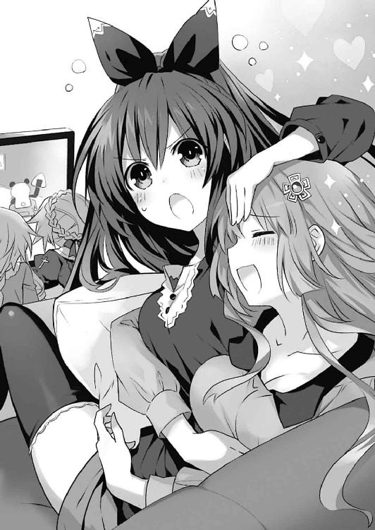
「あれは......！」
普通の人間であれば、さして気にも留めなかったであろう程度の明かりである。しかし、精霊たる十香は一目で気づいてしまった。あの輝きが、霊力によるものであると。──あの場所に、何かとてつもない力を持つ者がいると。
「ふん、きな臭いな。この感じは......」
「首肯。精霊──ですね」
他の皆も、十香のあとに続くようにベランダに出てきた。そして、まるで示し合わせたように十香が霊力を感じた方向に視線をやる。
「あの......あそこって」
「あー、確か公園がある辺りでしたっけ？」
「............！」
美九がそう言った瞬間、十香の頭の中に、今ここにいない士道の顔がよぎった。
そうだ。言われてみればそこは、かつて十香が士道に連れて行ってもらったことのある場所だったのである。
それを認識した瞬間、十香の心臓が早鐘のように鳴った。
別に、そこに士道がいると決まったわけではない。だが、脳裏に浮かんだ士道の顔が、今までずっと胸に蟠り続けていた違和感と混ざり合って、十香の心拍を荒くした。
「十香!?」
「十香さんっ！」
「──っ！」
十香は半ば無意識のうちに、ベランダの手すりに足をかけると、そのまま夜闇に身を躍らせた。
◇
『霊力値、カテゴリーＥ！ 鳶一折紙、反転しました！』
『く──やっぱり、令音の仮説は正しかったわけか......！』
右耳のインカムから、琴里とクルーの声、そして本能的に危険を呼び起こすアラームの音がひっきりなしに聞こえてくる。
「............」
士道は、そんな声を聞きながら、一人静かに折紙の姿を見据えていた。
無論、士道とて混乱はしている。ようやく救えたと思った折紙が再び反転してしまい、この上なく戦慄している。
しかしそんな中、頭のどこかが極めて冷静に状況を判断していたのである。
士道は、折紙に向かって地面を蹴った。
だが折紙に至る直前で、彼女の周囲に渦巻く霊力の壁に、再度吹き飛ばされてしまう。
「く──」
『士道!? 何してるのよ！』
「今......折紙を止めないと、大変なことになる！」
そう。折紙の反転が、士道が無意識下で発現させてしまった治癒の炎を目撃したことによるものだとしたなら、折紙の目の前から、目標たる士道が消えない限り、彼女の反転は収まらないだろう。
しかし無論のこと、士道は狂三のように身代わりを作ることなどできはしなかった。
つまり折紙は──士道が死ぬまで暴れ続けるということであり、折紙の反転が収まる条件を満たしてしまった場合、それと引き替えに折紙の霊力を封印する手段が永遠に失われてしまうことになるのである。
無論、士道には琴里の加護たる治癒の炎の力がある。生半可な傷ならば、たちどころに癒えてしまうだろう。
しかし、それにも限界はある。確かに士道は五年前折紙の両親の身代わりとなったが、本当に琴里の霊力で身体が治癒したのか、攻撃を受ける寸前で【一二の弾】の力が切れたのかはわかっていなかったのである。
そしてもし仮に治癒が可能だとしても、士道が生きているのを認識し続けている限り折紙が反転したままという可能性だってある。
ならば──機会は今しかない。
折紙があの『羽』を顕現させていないこのときしか、彼女に近づくチャンスはないのだ。
「......折紙っ！」
名を呼びながら──士道は、かつて目にした光景を思い起こしていた。
反転した折紙が天上から闇を降らせ、街を滅茶苦茶に蹂躙していく光景。
もう、あんなことを繰り返すわけにはいかない。もう、折紙にあんなことをさせるわけにはいかない。
士道は拳を固めると、再度折紙に向かって駆け出そうとした。
『待ちなさい、士道！ 今すぐ折紙から離れて！』
が、その瞬間、琴里の叫びが鼓膜を震わせ、思わず士道は足を止めさせられた。
「な、何言ってるんだよ！ チャンスは今しか──」
『だから、離れろって言ってるのよ。まさか生身で霊力障壁を突破するつもり？』
「──え？」
士道は思わず目を見開いた。
琴里の声が右耳に響くと同時、折紙の周囲に幾つもの淡い輝きが現れたかと思うと、その中から、鋭い金属の塊が姿を現したのである。
菱形の金属片を横に引き延ばしたようなフォルム。言うなれば、まるで巨大な『葉』のような物体だった。それらが自身の周囲に見えない壁を展開し、切っ先を向けながら折紙を取り囲んでいたのである。
「これは......」
『──〈世界樹の葉〉、展開！』
と、琴里がそう言った瞬間、『葉』の周囲に張り巡らされていた不可視の壁がその大きさを増し、漆黒の霊装に包まれた折紙の身体を八方から押し潰すように拘束した。
「な──」
『〈世界樹の葉〉。それぞれが随意領域を展開する、〈フラクシナス〉の汎用独立ユニットよ。悪いけれど、周囲に仕込ませておいてもらったわ。まさか、本当に使うことになるとは思わなかったけれど』
フンと鼻を鳴らすようにして、琴里が言う。
すると次の瞬間、士道と折紙がいる公園の遥か上空が一瞬煌めいたかと思うと、周囲に展開していた鏡面が剝がれるように、空中艦〈フラクシナス〉が姿を現した。いつの間にか、肉眼で確認できる位置まで下りてきていたらしい。
通常、〈フラクシナス〉は顕現装置で以て不可視迷彩を展開し、周囲からその存在を隠蔽している。
彼の艦がその姿を晒すのは、艦体の周囲に展開している随意領域を越えた場所に、顕現装置の効果を届けるときのみだ。
具体的に言えば、転送装置で外部から人や物資を回収するときや、〈世界樹の葉〉を外部に飛ばすとき。
そして──主砲〈ミストルティン〉を撃つときである。
「琴里、まさか！」
士道が叫ぶと、それに応ずるように、上空の〈フラクシナス〉がゆっくりと艦首を下げ、地上の折紙に砲門を向けた。随意領域で以て制御されている空中艦でなければ為し得ない、不安定極まる姿勢である。
そしてその砲門に、魔力の光が灯っていく。
『安心なさい。威力は調整するわ。〈ミストルティン〉で数秒の間霊力障壁を破るから、その隙に折紙に接近してちょうだい！』
「......！ あ、ああッ！」
『──あまり手荒な真似はしたくなかったけれど、こっちも街を壊されるわけにはいかないからね』
『司令、魔力充塡完了、いつでも撃てます！』
琴里の言葉に応ずるように、クルーの声が響いた。
『よろしい。目標、地上、鳶一折紙！ 外すんじゃないわよ神無月！』
『お任せを』
〈フラクシナス〉副司令、神無月恭平の落ち着いた声が右耳の鼓膜を震わせてくる。
『〈ミストルティン〉、撃──』
しかし、琴里が指令を発そうとした瞬間。士道は思わず息を詰まらせた。
「琴里ッ！ 逃げろぉぉぉっ！」
そして、のどが潰れんばかりの叫びを上げる。
理由は単純。士道の視線の先──暗い空に浮かぶ〈フラクシナス〉の周囲に、折紙を取り囲む〈世界樹の葉〉の如く、漆黒の光を放つ幾つもの『羽』──〈救世魔王〉が現れたからだ。
『え──？』
インカムを通して、危険を報せるアラームと、虚を突かれた琴里の声が聞こえてくる。
〈救世魔王〉はその先端を〈フラクシナス〉に向けると、一斉に濃密な闇を結集したかのような黒い光線を放った。
〈フラクシナス〉の白い艦体が多方向から闇を浴び、或いは爆ぜ、或いは削がれ、或いは貫かれる。右耳のインカムから凄まじい爆音と、琴里たちの悲鳴が響き渡った。
『きゃぁっ！』
「琴里！ 琴里......ッ!!」
士道が叫ぶも、返事はなかった。その代わり、上空に浮遊していた〈フラクシナス〉が随所から煙を吐き、それと同時、折紙を拘束していた〈世界樹の葉〉が、力なく明滅して辺りに落下していく。
「あ......」
士道は戦慄に目を見開きながら、短い声を発した。
夜空から墜ちゆく〈フラクシナス〉。その光景は、もとの世界で一度目にしたものに酷似していたのである。
あのときも〈フラクシナス〉は、折紙によって墜とされてしまった。
「なんで......だよ......ッ！」
士道は半ば無意識のうちに叫びを上げた。
変えたはずの歴史が、書き換えたはずの世界が、次々ともとの形に沿うように流れを変えていく。──まるで、士道がどんなに足搔こうが、一度決まった結末は変えられないと知らしめるかのように。
「────」
枷から放たれた折紙は、何も口にすることなく、その場に浮遊しながら、胎児のように身体を丸めた。──まるで、外界から自分の心を閉ざすかのように。
するとそれと同時に、ゆっくりと高度を下げていく〈フラクシナス〉を追撃するように、無数の『羽』がその先端に闇を湛え始めた。
「......！ 折紙！」
士道は折紙の名を呼び、再度その場から駆け出そうとした。が──霊力の障壁に阻まれ、折紙の身体に手を触れることさえできない。
そうしている間にも、空に待った漆黒の『羽』は、〈フラクシナス〉に砲撃を放たんとしていた。
既に先の攻撃によって半壊状態の〈フラクシナス〉である。今追撃を受けたなら、〈フラクシナス〉も、中のクルーたちもどうなってしまうかわからなかった。
「やめろ、折紙！ やめてくれぇぇぇッ！」
しかし、士道の叫びは、折紙には届かなかった。
無数の『羽』の先端から、漆黒の光線が放たれる。
「......ッ!!」
が──そのとき。
突然辺りに突風が吹いたかと思うと、漆黒の『羽』がそれに煽られ、微かにその方向を変えた。〈救世魔王〉から放たれた光線が〈フラクシナス〉の艦体を掠めて虚空に伸び、消えていく。
いくら凄まじい風圧であったとはいえ、ただの突風に〈救世魔王〉が煽られるはずはない。士道はその風の正体に気づき、ハッと肩を揺らした。
「これは......」
と、次の瞬間、折紙の身体の周囲に小さな『羽』が幾つも顕現したかと思うと、士道にその先端を向けてくる。どうやら、士道も敵性と判断されたらしい。
「く──!?」
この数では、避けきることはできない。来る衝撃を覚悟し、士道は身を硬くした。
が、『羽』折紙の天使が砲撃を放つより一瞬早く、
「──はぁぁぁっ！」
上空よりそんな声が響いたかと思うと、限定霊装を顕現させた精霊が巨大な剣を振るい、漆黒の『羽』を吹き飛ばした。
「無事か、シドー！」
「十香！」
士道は少女の名を呼んだ。そう。そこに現れたのは、五河家隣のマンションにいるはずの十香だったのである。
否、彼女だけではない。十香に続くようにして、次々と公園に限定霊装を纏った精霊たちが姿を現し始めた。
巨大なウサギのパペットの背に乗った四糸乃に、大人の姿になった七罪、光の鍵盤を身体の周囲に出現させた美九。そして空には、今し方突風を巻き起こし、〈フラクシナス〉の窮地を救った八舞姉妹がいた。
「おまえら──どうしてここに!?」
「あ、あの......」
「うふふ、だーりんのピンチに駆けつけるのは当然じゃないですかー」
「まあ、十香ちゃんのあとについてきただけなんだけどね」
「あー、言っちゃだめですよー！」
美九が「しーっ」と指を一本立てる。大人バージョンの七罪は、もとの姿でいるときとは打って変わって余裕のある仕草で肩をすくめてみせた。
「それで──シドー」
十香は士道を守るように天使〈鏖殺公〉を構えると、油断なく折紙を睨み付けながら唇を動かした。
「......凄まじい霊力を感じる。あれは、一体何者なのだ？」
十香が問うてくる。士道は爪が食い込まんばかりに強く拳を握り、答えた。
「あれは......折紙だ」
「何......？ あれがあの転入生なのか？」
十香が怪訝そうに言う。しかしそれも無理のないことではあった。この世界の十香は折紙と顔を合わせて日も浅いし──何より、漆黒の霊装を纏い宙に浮いたそれをクラスメートと言われても、にわかには信じられないだろう。
相対してるだけで身が竦むかのような、圧倒的な威容。
ＤＥＭのアイザック・ウェストコットは、反転した精霊を魔王と称したが──今士道の目の前にいるそれは、その表現が大げさでないくらいの凄まじい圧力を有していた。
「............っ」
だが。士道は歯を嚙みしめると、足を一歩前に踏み出した。
「士道......？」
その行動に、十香が眉をひそめてくる。恐らく、危険だと言いたいのだろう。
それは重々承知している。だが、士道は折紙のもとに至らねばならなかった。
このまま折紙を空に解き放ってしまったなら、眼下に広がる天宮市は、再び士道の記憶の中にある廃墟に成り果ててしまうだろう。そして折紙は──二度ともとの折紙に戻ることはないだろう。
それだけは、絶対に阻止せねばならなかった。
そして、僅かな可能性ながら、折紙の手を取れるのは──士道しかいなかったのである。
しかし──士道だけの力では、足りない。
強大な魔王の前に、士道の力はあまりに小さすぎた。
「......みんな」
士道は、駆けつけてくれた皆に向けて、声を発した。
──逃げろ、と言うべきなのだろう。
折紙とは戦うな、と言うべきなのだろう。
だが、士道は、
「──あいつを助けるのに、手を......貸してくれ......っ」
皆に申し訳ないと思いながらも、その言葉を発する他なかった。
すると、士道の前に立っていた十香が、一瞬キョトンとした顔を作ってから返してきた。
「何を言っている。当然ではないか」
言って、〈鏖殺公〉の柄を強く握る。
「シドーが私を救ってくれた。私に世界の美しさを教えてくれた。私の世界はシドーが作ってくれた。──ならば今度は、私がシドーを手伝う番だ」
「十香......」
すると十香に続いて、他の精霊たちもこくりとうなずいてくる。
「私とよしのんも......士道さんのお役に立ちたいです......！」
「そうそう、素直にお姉さんに頼ればいいのよ。士道くんあんまり強くないんだから無理しちゃだーめ」
「ていうか、『逃げろ』だなんて言ったら、いくらだーりんでも怒っちゃいますよー？」
四糸乃、七罪、美九がニッと笑いながら言う。次いで、空に舞った耶俱矢と夕弦が笑い声を響かせてきた。
「かか、よかろう！ 御主の覚悟、聢と受け取った！ この颶風の御子・八舞が力を貸してくれようぞ！」
「請負。空は夕弦と耶俱矢に任せてください」
「みんな──」
皆の言葉に、士道はグッと拳を握り込んだ。
「ありがとう。──行こう、折紙のところへ」
◇
──『折紙』は、困惑していた。
公園の外縁から転落しそうになったところを士道に助けられたあと、士道の腕に何かゆらゆらと光るものを見つけた瞬間、またいつものように意識が遠くなっていたのだが......
気づくと、見知らぬ場所に立っていたのだ。
見渡す限り真っ白な、何もない空間である。頭上にあるのが空なのか天井なのか、先にあるのが地平なのかさえわからない。一応その場に『立って』はいるのだが、地面を踏みしめる感触さえ曖昧で、気を抜くと自分がふわふわと浮遊しているのではないかという錯覚にさえ襲われる。まるで、何も描かれていない漫画のコマの中にでも紛れ込んだかのような感覚だった。
（なに、ここ......）
辺りを見回し、呆然と呟く。
（どう考えても夢......よね）
折紙がそう判断を下すのに、あまり時間はかからなかった。しかしそれも無理はあるまい。このような空間が、現実に存在するはずがないのだ。
と──
（......え？）
不意に、折紙は目を見開いた。
折紙の視線の先。先ほどまでは何もなかった空間に、いつの間にか一人の少女が現れていたからだ。
闇のような漆黒のドレスを身に纏った、華奢な体軀の少女である。膝を抱きながらうずくまり、虚ろな表情を作っていた。
（あなたは......）
言いかけて、折紙ははたと気づいた。
（私──？）
そう。あまりにあり得ない光景のため、一瞬わからなかったが、そこにいたのは、どこからどう見ても折紙自身だったのである。
否......正しく言うのであれば少し違った。折紙の髪が背の半ばまであるのに対し、目の前でうずくまる少女の髪は、肩口をくすぐるくらいの長さしかなかったのだ。
とはいえ、逆に言えば、身につけている服以外の違いはそれくらいのものである。まるで鏡を見ているような奇妙な感覚に、折紙は思わず頰に汗を滲ませた。
（何なの、これ......）
先ほどこの場を、この感覚を夢と断じていながらも、折紙は訝しげに眉をひそめざるを得なかった。
しかし、その瞬間。
（────！）
折紙の頭の中に、見たことのない景色や言葉が、一気に流れ込んできた。
否......正確に言うのならば、少し違う。
その情報を一瞬にして得ると同時、折紙の中には確信めいた感覚が生まれた。
（この記憶は......私の......？）
そう。それは。
もしも折紙が、今とは少し違う別の道を歩んでいたら経験したであろう、数年分の記憶だった。
──『折紙』は、心を閉ざしていた。
揺らめく霊力の炎を目にした瞬間、折紙の中に芽生えた情報。それは、折紙が忘れていた、もとの世界の折紙の記憶であった。
それが意識を侵食していくにつれ、折紙は自分の身体が、心が、真っ黒く染まっていくのを感じた。
五年前。
そう、五年前のあの夏の日、折紙の目の前で殺されたのは、折紙の両親であったのだ。
そして──両親を殺した精霊こそ、折紙自身だった。
それを思い出してしまった瞬間、折紙は、何も考えることができなくなってしまった。
もしかしたらそれは、自己を守るための防衛本能だったのかもしれない。
今まで自分を形作っていた根源的な要素。
生きる目的となっていた己の命の意味。
それらが最悪の形で無に帰してしまったことを感じ取った頭が、自我が完全に壊れてしまわぬように、その記憶を、この世界の折紙から隔離したのだ。
それが、この世界におけるルール。この世界の折紙は自身に精霊の力が発現した瞬間意識を隔離され、もとの世界の記憶を持った折紙が身体の支配権を握る。
もう折紙は、何も思わない。何も考えない。何も感じない。
ただ一つ──目の前の精霊を殺すことのみに、折紙の力は向いていた。
だが。
そんな、全てを捨て去ったはずの折紙の頭の中に、突然小さな光が生じた。
何が起こったのかはわからない。たとえ認識したとしても、今の折紙は、それを意識できない。
──はず、だった。
しかし、その光は折紙の頭の中に、とある記憶を広げていった。
そう。それは。
五年前のあの日、両親が死ななかった世界を生きた折紙の記憶だった。
（──ぁ────）
折紙は、小さな小さな声を発した。
すると、それと同時。
『折紙』と『折紙』の意識が、互いを巻き込み渦のように混じり始めた。
◇
「かか！ 我らは風に愛されし颶風の御子！」
「呼応。追いつける者はこの世界に存在しません」
言って、八舞姉妹が二人同時に空を蹴り、軽やかに宙を舞う。次の瞬間、今の今まで二人がいた場所を、光線が通り抜けていった。どうやら〈フラクシナス〉を攻撃した〈救世魔王〉が、この二人を脅威と認めたようだ。
「ふん！ 如何に凄まじい威力とて、当たらなければどうということはないわ！」
耶俱矢が高らかに言って、アクロバティックな飛行で以て迫り来る光線を紙一重でかわしていく。
「進言。今です、士道。夕弦たちがこれを引きつけている間に、本体を」
耶俱矢と同じように光線を避けながら、夕弦が地上の士道たちに言ってくる。士道はこくりとうなずくと、視線を折紙の方に戻した。
「頼む、みんな！」
『応っ！』
士道が言うと、精霊たちが一斉に返してきた。
しかしそれと同時、〈世界樹の葉〉の縛めから解き放たれた折紙の身体が、ゆっくりと空に昇っていく。
折紙を空に逃がしてはならない。士道はのどを震わせた。
「美九っ！」
「はいはーい、お任せあれー！」
すると、美九は自分の身体の周りに展開していた光の鍵盤に指を滑らせ、流麗な曲調を奏で始めた。
「〈破軍歌姫〉──【輪舞曲】！」
するとそれに合わせて、折紙の周囲に幾つもの銀筒が現れ、その先端を折紙に向ける。美九の奏でた音が目に見えない力となり、幾重にも重なり合って、空に昇ろうとしていた折紙の身体を地面に押しつけた。
「ふふっ、やるじゃない、美九ちゃん」
と、その様子を見てか、七罪が妖しく微笑む。
「でも、美九ちゃんがあの子を押さえてると、本来の仕事ができなくなっちゃうわよねえ。なら──」
七罪は右手を掲げると、そこに一本の箒のような天使を顕現させた。そして──
「〈贋造魔女〉──【千変万化鏡】」
七罪がその名を呼んだ瞬間、その手に握られていた箒が柔らかな粘土のようにぐにゃりと歪み、銀筒と鍵盤を形作った。
「えっ!? それは......！」
鍵盤を叩いていた美九が、驚愕の表情を作る。それはそうだ。七罪が顕現させたのは、美九の〈破軍歌姫〉とまったく同じ形をした天使だったのだから。
「ちょっと借りるわよ、美九ちゃん。実は前に見たときから、一回『真似』してみたかったのよねぇ」
言って、七罪が両手をクロスさせ、力強く鍵盤を叩くと、勇猛な調べを奏でていく。
「【行進曲】！」
すると、その曲を耳にした士道たちの身体に、気力が漲ってくるのがわかった。若干の精度の差こそあるものの、間違いなく美九の【行進曲】である。
「あーん！ 七罪ちゃんたら真似っ子ですー！」
「ふふ、いいじゃないの。これも士道くんのため、よ」
「ぶー。あとでちゃーんと著作権使用料払って貰いますよー。アイドルは権利関係厳しいんですからー」
美九がぷくー、と頰を膨らせる。どうやら、自分だけの天使が再現されてしまったのが少し悔しいらしい。とはいえ、攻守に〈破軍歌姫〉が存在するのは、士道たちにとって非常に大きな力となった。十香と四糸乃が、折紙に向かっていくように前傾姿勢を作る。
しかし、まるでそれに対抗するかのように、折紙の周囲の空間が歪んだかと思うと、そこからさらなる『羽』が幾つも姿を現した。
それらが不規則な軌道で飛び回り、士道たちに光線を放ってくる。
「く──！」
「士道さん！」
『とーう！』
四糸乃とその天使〈氷結傀儡〉と化した『よしのん』が声を発し、士道をかばうように前に進み出る。瞬間、空気中の水分が結集、一瞬にして凍り付き、折紙の光線の軌道を逸らした。
「すまない、四糸乃、よしのん！ 助かった！」
「いえ......それより、気を付けてください、まだ来ます！」
四糸乃は油断なく宙に舞った『羽』を見据えながら言った。
四糸乃の言うとおり、折紙の周りにはまだ無数の小さな『羽』が浮遊している。
完全な霊装を顕現させているならまだしも、今の精霊たちの限定霊装では、その一撃を喰らうだけで致命傷になりかねない。八舞姉妹や四糸乃は器用にその攻撃を避けたり逸らしたりしていたが、それもいつまでも続くとは思えなかった。一刻も早く折紙のもとに至らなければ──
と、士道が考えを巡らせていると、まるでそれを察知したかのように、『羽』の先端が一斉に士道の方を向いた。
しかし。
「はぁっ！」
裂帛の気合いとともに士道の視界を光が一閃したかと思うと、『羽』が一斉に吹き飛ばされた。
「十香！」
士道は叫びを上げた。そう。十香が〈鏖殺公〉の一撃で以て、光線を放つ前に『羽』を攻撃したのである。
だが、限定的な〈鏖殺公〉の力では、『羽』を砕くには至らない。無傷の『羽』は、それぞれに意思があるかのような挙動で、再度その先端に闇を収束し始めた。
「──四糸乃、シドーを頼む！」
「は、はい......っ！」
背を向けたまま声を上げる十香に、四糸乃が返す。
「士道さん、行きましょう！ 私の後ろにいてください......！」
言うと、四糸乃は〈氷結傀儡〉の前方に、装甲のように冷気を纏わせた。
「あ、ああ──！」
四糸乃が両手を引き、マリオネットを操るように〈氷結傀儡〉を前進させる。士道は、その大きなウサギの陰に隠れるようにして、折紙への道を進んでいった。
だが、数秒と待たず、〈氷結傀儡〉の進軍が止まってしまう。──見やると、折紙の周囲に新たな『羽』が顕現し、それを核として強力な霊力の障壁が作られているらしかった。こちらを狙ってくるならば、『羽』の軌道を逸らせばいい。しかし、このように防御に徹されては、力で押し通るしかなかった。
「う......、っうう──っ」
『うぐぉぉぉ！ かったいねこりゃー！』
「四糸乃、よしのん！ 大丈夫か！」
「大丈夫......です......！」
四糸乃が苦しげに返してくる。どう聞いても、大丈夫そうには聞こえなかった。
しかし、四糸乃は視線を鋭くすると、両手を握って〈氷結傀儡〉の身体を丸めた。
「私は......弱虫で、泣き虫だけど......士道さんを、あの人のところに、届けるために」
〈氷結傀儡〉の全身が、淡く輝いていく。
「──壁を打ち破る、力を」
四糸乃が、両手を大きく広げる。五指から〈氷結傀儡〉の背に伸びた操り糸が、キラキラと輝いた。
「〈氷結傀儡〉──【凍鎧】......っ！」
そしてその名を叫んだ瞬間、〈氷結傀儡〉の巨体がぐにゃりと歪んだかと思うと、四糸乃の指に繫がった操り糸に吸い込まれるように収束していった。
そして、濃密な光を蓄えた操り糸が、四糸乃の身体を覆うように巻き付いていく。
「四糸乃......!?」
見たことのない光景に、士道は思わず上擦った声を発した。
しかし、それに対して返されたのは、
「──はい、士道さん」
確かな意思に彩られた、力強い四糸乃の言葉だった。
光が収まり、ようやくその姿が見取れるようになる。
「鎧......？」
呆然と、呟く。
そう。そこにあったのは、白銀の鎧を纏った四糸乃の姿だった。
否──言葉に正確さを求めるのであれば、それを鎧と呼んでよいのかどうかはわからなかった。金属とも樹脂とも取れない不思議な物質が、透き通った氷と一体となって霊装の上からさらに四糸乃を覆い、まるで〈氷結傀儡〉を纏っているかのような姿を形作っている。
「ん......っ！」
四糸乃は全身に凍気を纏わせると、両手を前方に突き出し、指を組み合わせた。
白銀に鎧われた両腕を中心に吹雪が螺旋状に渦を巻き、巨大な円錐が形成される。
「ああああああああ......っ！」
四糸乃は組み合わせた両手を力一杯捻った。瞬間、四糸乃の手の周りで渦巻いた冷気の錐が、ドリルのように『羽』と『羽』の隙間をこじ開けた。
「士道さん......今です......っ！」
「あ──ああっ！」
士道は四糸乃の声に答えると、四糸乃が開いてくれた道に身体を滑り込ませ、そのまま折紙のもとに走っていった。
美九の【輪舞曲】に押さえつけられた折紙は、まだ地上一メートルくらいの位置に留まっていた。無論、反転した折紙の力を以てすれば、限定的な力しか発揮できていない美九の音など容易に撥ね除けられるのだろうが──今の折紙には、気力や意思のようなものが微塵も感じられなかった。
攻撃を行っているのも漆黒の『羽』のみで、折紙自身は声さえ発していない。まるで、身体の免疫機能が、本人の意思に拘わらず外敵を排除しているかのようでさえあった。
「──折紙ッ！」
士道は声を張り上げ、折紙の名を呼んだ。
だがやはり折紙は、ぴくりとも反応を示そうとしない。絶望に染まった目は、ただ虚ろに虚空を見上げるばかりだった。
「く......！」
もとの世界での光景を思い出し、士道は奥歯を嚙みしめた。
あのとき。士道は今と同じように、皆の協力のおかげで折紙のもとに辿り着いた。しかし、折紙は完全に心を閉ざしており、士道が何を言おうとも反応を示さなかったのだ。
このままでは、あのときと同じである。
士道の力だけでは、足りない。
何かが──あのときにはなかった何かが、必要だった。
士道は声を上げている。手を伸ばしている。
だから、あとは──その士道の手を取らせる、折紙の内からの衝動が必要だった。
◇
折紙の頭の中で、二つの記憶が混じり合う。
自分の中にもう一人の自分がいるのを、二方から同時に見ているかのような奇妙な感覚。
それもそのはず。もとの世界の折紙も、この世界の折紙も、折紙自身であることに変わりはないのだ。
その二つの記憶を同時に持つことで、折紙は全てを理解した。
今日、士道とデートをしたときに生まれた奇妙な違和感。自分の身体が自分とは別の意思によって動くような感覚。それは、折紙の身体が、潜在意識が、士道の存在に反応して起こったものだったのだ。
今この状態もそうだ。本来ならばこの世界の折紙は『今』──精霊の力が発現している状態で目を覚ますことはないはずだった。
しかし、士道という存在の影響によってもとの世界の記憶とこの世界の記憶の境界が曖昧になり──結果、折紙の二つの記憶が接触するというイレギュラーを起こしてしまったのだ。
そしてそれは、折紙に途方もない混乱をもたらした。心を閉ざし、全てを捨て去ろうとする折紙と、それをどうにか止めようとする折紙が、一つの器の中で複雑に絡み合う。
（私は五年前、お父さんと、お母さんを──）
（──この世界では、そんなことは起きてない！ お父さんとお母さんは五年前、五河くんのお兄さんが助けてくれた......！）
折紙の言葉と同時、二人を光線から救ってくれた少年の姿が浮かび上がる。嗚呼、思えばそれは士道の兄ではなく、士道自身であった。もとの世界の記憶を有した今だからこそ、そう確信できた。
そしてそれに次いで、火災のあと両親と過ごした一年の優しい時間が、折紙の脳髄に染み渡っていく。微笑む父と母。温かい団欒。三人で過ごしたかけがえのない時間。
きっとこの記憶があったなら。この光景が脳裏に残っていたならば。折紙はもっと別の生き方をしていただろう。
──しかし。
（なら......これは何なの？ 私の中にあるこの記憶は、一体何だというの......!?）
辺りの景色が燃え上がる。炎揺らめく街の光景が浮かび上がる。道に刻まれたクレーター。散らばる人間の部品。流れる間もなく焦げた血。空を見上げる幼い折紙。
それはまさしく、もとの世界の折紙が体験した、五年前の出来事だった。
地獄のような記憶に、折紙は強烈な目眩と嘔吐感を覚えた。
（う、ぁ......、あ......）
鮮烈な現実感。それはそうだ。なぜならそれを体験したのは、他ならぬ折紙なのだ。
（私は、もう──駄目なの。もう......私は......）
（そんな......こと......！）
悲哀や憤怒や凄まじい嫌悪が混じり合った感情に押し潰されそうになりながらも、折紙は声を上げようとした。
しかし、それを途絶えさせるように、別の記憶が浮かび上がってくる。
知るはずのないもとの世界の出来事。反転する視界。空に広がる闇。崩壊する街。そのあまりに凄惨な光景に、思わず悲鳴を上げそうになる。
（ぁ、あ、あ、あああああ......ッ）
この世界では起こっていない。しかし確かに折紙が引き起こした光景。
折紙は、視界がぐにゃりと歪むのを感じた。自分の存在が黒く染められていくかのような錯覚に、意識を保つことさえ困難になる。
──だが、駄目なのだ。折紙が意識を失ってしまったなら、もう折紙を止める者はいなくなってしまう。
五年前の出来事は『なかったこと』になったから、もう気にするななどとは言えない。
もとの世界で起こした大破壊はここでは起こっていないから、忘れろなどとは言えない。
しかし、折紙がここで全てを諦めてしまったなら、まだ何も起きていないこの世界で、折紙はもとの世界と同じことをしてしまうことになるのである。
きっと幾つもの街が滅びるだろう。何人もの人が死ぬだろう。
そうしたなら、きっと折紙はもう永劫に、もとには戻れなくなる。それだけは、なんとしてでも止めねばならなかった。
だが、
（う......ッ、あ、ああ──）
次々と流れ込む負の感情の奔流に、折紙はついに膝を突いてしまった。
きっと折紙もわかっているはずなのだ。折紙が犯してしまった過ちが、この世界では存在しないことも。この世界でならやり直せることも。なぜならもとの世界の記憶が共有されたように、この世界の記憶も、折紙は持っているのだから。
しかし、それを認識してなお、この世界で自分が生き続けていいはずがない、という感情が、折紙の中で暴れ回っていた。
（や......めて、私は──、あ、ああああああああああ......ッ!!）
折紙は、悲鳴を上げた。
──折紙の声だけでは、足りないのだ。
この世界の折紙だけでは、もとの世界の折紙を救うことはできない。この世界での記憶を共有し、折紙に目を開かせることがせいぜいだ。
そう──折紙には、折紙の背を押すことしかできない。
折紙を救うためには、外から誰かが声をかけてくれなければならなかった。誰かが、その手を取ってくれねばならなかった。
だが、反転し世界に絶望を撒く折紙に、手を伸ばしてくれる人間など──
「──折紙......っ！」
（............！）
不意に響いた声に。
折紙は、顔を上げた。
（士、道......）
そう。何もないはずの世界に響くその声は、五河士道のものに他ならなかった。
ぴしり、と音がして、真っ白い空間に亀裂が入る。
（どう、して──）
折紙からの声は、きっと士道には届いていない。しかし、士道は声を張り上げ続けた。折紙に、呼びかけるように。
「一人で抱え込まないでくれ！ 五年前、言ったよな!? おまえは一人じゃないって......！」
（あ──）
士道の言葉に、折紙の中で五年前の記憶が思い起こされた。
──おまえの哀しみは、俺が引き受ける......！ おまえの怒りは、俺が受け止める......！ 迷ったなら、俺を頼れ！ どうしようもない事態に直面したら、俺を使え！ 全部、全部俺にぶつけてくれて構わない！ だから、だから──
（あ、ああ......）
「絶望だけは──しないでくれ......ッ！」
記憶の中の士道の声と、耳に伝わる士道の声が、重なる。
折紙は、辺りの空間に入った亀裂が、さらに大きくなるのを感じた。
「おまえが何度世界を壊そうが、俺が必ず何とかしてやる！ 何度絶望しそうになっても、俺が必ず助けてやる......！」
（私、は......）
「だから、手を伸ばしてくれ！ 俺には──おまえが、必要だ！」
「────」
その言葉を聞いた瞬間──
折紙は、自分の身体が自分とは別の意思で動くのを感じた。
嗚呼、思えばそれは。
今日、この世界で士道とデートをしたときの奇妙な感覚とよく似ていた。
あのときは、もとの世界の折紙の記憶が、無意識のうちにこの世界の折紙の身体を動かしていた。
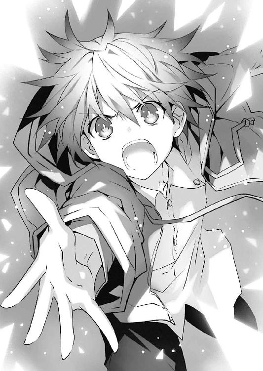
しかし、今は。
それとは逆に、この世界の折紙の記憶が、折紙の手を士道に向かって伸ばさせたように思えたのである。
まるで──折紙に、生きろと言っているかのように。
──何も存在していなかった空間が、音を立てて砕け散った。
◇
「────士............道............」
死体のような顔をしていた折紙の目に、微かな光が灯る。士道は思わず目を見開いた。
「......！ 折紙ッ!!」
折紙は辺りの様子を見るようにゆっくりと目を動かしたのち、震える唇を開いた。
「わ、たし......は......」
「............ッ」
押し殺したような声に、士道は折紙を抱きしめた。
まるで、五年前のあの日のように。
「士、道......」
折紙が、小さな声で続ける。
「ありが......とう。士道......私を、呼んでくれて」
「折紙──」
「士道がいなかったら......また、取り返しのつかないことをしてしまうところだった」
折紙の目から涙が流れ落ち、士道の肩を熱く濡らす。
「私が......お父さんとお母さんを殺してしまった事実は、消えない......もとの世界で、街の人たちを殺してしまった罪も......永劫、消えることは、ない。──たとえそれが、『なかったこと』になっていたとしても......」
「......ッ、それは──」
違う、などと簡単には言えなかった。
この世界では起こっていないはずの出来事。恐らく誰も、覚えてすらいない惨劇。──士道がこの手で、『なかったこと』にした事実。
士道は、ギリと歯を嚙みしめてから、呻くように言った。
「......、そうだ。それは......おまえが、背負っていかなきゃならないものだ」
それは、この上なく残酷な宣告だった。
もしかしたら、士道にそんなことを言う資格はなかったのかもしれない。多くの命を救うためとはいえ、自分勝手に歴史を改変したのは、紛れもない士道の罪だった。
しかし、士道に言葉を偽ることはできなかった。己の考えを誤魔化して綺麗事を吐くことは、もとの世界の折紙の両親に、街の人々に、そして折紙に対して、途方もない冒瀆になってしまう気がしたのである。
「......私は、わた、し、は......」
折紙は、微かに身体を震わせると、
「......、あ、うぁぁ......あぁぁぁぁぁっ......あぁぁぁぁぁぁぁぁぁぁっ......」
士道の身体にしがみつくようにして、大声で泣き始めた。
まるで、五年前のあの日のように。
そう......五年前、士道に涙を預けた折紙は、それからずっと泣かずに過ごしてきたに違いなかった。
十代の少女にとってあまりにも長い、五年という月日の間、折紙は自分を律し続けてきたのだ。
士道は今まで、幾度も折紙と言葉を交わしてきた。幾度もともに過ごしてきた。
だけれど、今この瞬間──士道はようやく、本当の折紙の顔を見ることができた気がした。
──それから、どれくらい経った頃だろうか。
折紙が、士道にしがみついた姿勢のまま、静かに声を発してきた。
「......士道、あなたにも、謝らないと」
「俺に......？ 何をだ？」
士道が問うと、折紙は士道から身体を離し、士道の顔を見ながら続けた。
「きっと......私が士道に抱いていた感情は──愛でも、恋でも......なかった」
「え？」
「私は......ただ、依存していただけ。......両親を失った場所に、たまたまあそこにいたあなたを、当てはめていただけ。自分の弱さを誤魔化すために、あなたに縋っていただけ。......そんな自分勝手な感情のために、あなたにたくさん迷惑をかけてしまった。......心から、謝罪したい」
「............」
士道は、ふうと息を吐いたのち、唇の端を上げた。
「──そいつは、光栄だ」
「え......？」
士道の答えに、折紙が意外そうに目を見開く。
「少なくとも俺は......折紙、おまえに出会えてよかったと......心から思ってる。そりゃあ迷惑を被ったこともあるけど......もしおまえが俺を頼ってくれたのがその感情によるものだとするなら、それに感謝したいくらいだ」
「士道......」
折紙が、震える声で言う。その目に、再び涙が滲んだ。
その涙を見て──士道は、小さくうなずいた。
「そうだ......おまえに、返さないとな」
「返......す？」
士道の言葉に、折紙が不思議そうに首を傾げる。士道は「ああ」と首肯した。
「あのとき俺が預かったのは──涙だけじゃないはずだ」
「あ──」
その言葉で、折紙も思い出したらしい。
五年前のあの日。折紙が言った言葉を。士道に、預けたものを。
「あの、私は」
「折紙」
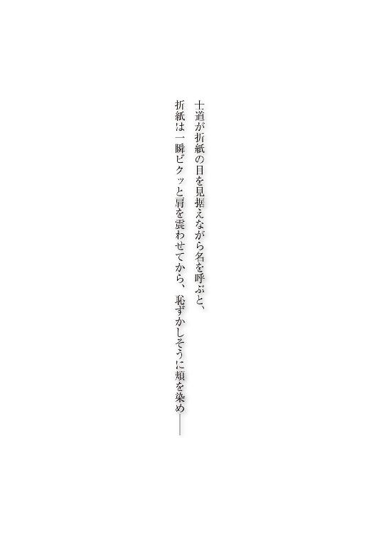
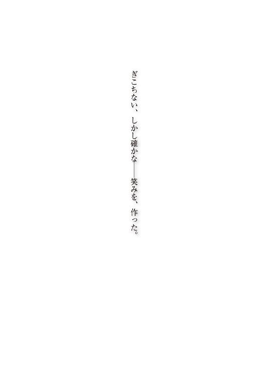
瞬間──
「............！」
折紙がハッと目を見開いたかと思うと、その身を覆っていた漆黒の霊装が、目映い光を放ち、純白に染まっていった。
それは、もとの世界で目にした、精霊・折紙本来の姿であった。
同時、辺りに浮遊していたいくつもの『羽』が、光の粒となって消え去っていく。
「士道......私」
花嫁衣装のような霊装に身を包み、笑みを浮かべた、その、姿は。
まるで、本物の天使のように見えた。
「────」
士道は、折紙の肩に添えていた手に力を込め、そのままぐいと折紙を引き寄せた。
「え──？」
折紙が、意外そうな声を上げる。
もとより、『これ』が最終的な目的ではあった。好感度を如何に上げたとて、この行為を行わなければ、精霊の霊力を封印することはできない。
しかし、士道は自分の腕に力が入ったのが、その使命を果たすための義務感によるものなのか──はたまた、自分の欲求によるものなのか、判別がつかなかった。
折紙の唇に、士道の唇が重ねられる。
「............！」
折紙は一瞬身体を震わせたものの、すぐに士道に身を委ねるように体重を預けてきた。
すると、次の瞬間、折紙が纏っていた純白の霊装が、キラキラという軌跡を残し、空気の中に溶け消えていった。
「これ、は......」
唇を離し、折紙が光と消える霊装に目を丸くする。
するとその背後に、『羽』と戦っていた精霊たちが降り立ってきた。
小さく手を掲げ、全部終わった旨を示す。すると皆、ほうと安堵の息を吐いた。
「む......っ」
十香は、半裸状態の折紙が士道にもたれかかっているのを見て少し眉をひそめたが、フンと鼻を鳴らして腕組みした。
「ふん......まあいい。今だけは特別だぞ、折紙」
「ん......？」
士道はそんな十香の様子に苦笑したが......すぐに、小さな違和感に気づいた。
十香の物言いは、数日前クラスにやってきた転校生に対するそれではなく──随分前からの好敵手に向けたもののように感じられたのである。
「十香、おまえ......折紙のこと、思い出したのか？」
「む？ 何をおかしなことを......ぬ、しかしそうだな。なんだか、少し前まで忘れていた気がするのだが......」
十香が、不思議そうに首を捻る。他の精霊たちも、似たような表情を作った。
「もしかして......」
そこで士道は、かつて琴里を封印したときのことを思い出した。琴里にキスをした瞬間、経路を通って封じられていた記憶が呼び起こされたことがあったのである。
封印を施された精霊たちと士道の間には、今も目に見えない経路が通っている。ならば、折紙の霊力を封印したことにより、その経路を通って、もとの世界の記憶が共有されたのかもしれなかった。
「......はは」
思いがけないプレゼントに、士道は苦笑した。一瞬、皆に折紙の記憶がなかった方が、これからよい関係性を築きやすいのでは......なんて考えが頭を掠めるが、首を振ってそれを放逐する。
それも含めて──折紙なのだ。まあ......間違いなく前途は多難だろうけれど。
と、士道がそんなことを考えていると、折紙がゆっくりと首を回し、精霊たちの方に視線をやった。
そして、
「──ありがとう、十香、みんな。私のために、戦ってくれて」
なんて、折紙らしからぬ言葉を吐いた。
「な──っ!?」
「え......？」
「御主、今なんと申した？」
「疑念。まだ正気に戻っていないのですか」
「うぅん、素直な折紙さんも可愛いですぅ」
「あらあら、珍しいわね」
十香を始めとして、精霊たちが驚愕の表情（一部除く）を作る。
だが......不思議と士道に驚きはなかった。
だって今ここにいるのは、もとの世界と──この世界、両方の記憶を持った折紙なのだ。
しかし、あまりに意外だったのだろう。十香が焦った様子で目を泳がせ、ぷいと顔を逸らした。
「かッ、勘違いするな！ 私はその、あれだ！ シドーに頼まれたからやっただけだ！」
十香も折紙の身を案じていたというのに、なんとも素直ではないことを言う。
だが。
「──そう。ではあなたには感謝しない。利己的な精霊。なんて醜い」
「な......っ!?」
折紙が半眼になりながら言った言葉に、十香が眉根を寄せた。
「貴様、さっきと言っていることが違うではないか！」
「何も違わない」
十香が声を張り上げ、折紙が顔を背ける。
士道はそんな様子に、思わず苦笑してしまった。
やはり前途は、多難のようだった。
終章 鳶一折紙
一一月一四日。高校に登校した士道は、自分の席に腰掛けながら、教室の入り口の方を眺めていた。
あと五分ほどで、朝のホームルームが始まる時間である。時折教室の扉が開かれ、そこからクラスメートたちが入ってきていた。
「......、......」
ここは学校で今は登校時間なのだから、教室の扉が頻繁に開かれるのは当然のことであるのだが......士道はそんな様子を見ながら、いちいちぴくりと眉の端を動かしているのだった。
理由は単純。あの高台の公園で折紙の霊力を封印してから三日。今日は、検査を終えた折紙が久しぶりに学校へとやってくる日だったのである。
精霊たちも、琴里を始めとしたクルーの面々も、多少の怪我はしたものの、どうにか全員生き延びていた。あれだけの力を持った反転精霊と対したのだ。僥倖と言ってもいい結果だろう。──まあ、ご自慢の〈フラクシナス〉をボロボロにされた琴里は、終始機嫌が悪そうであったけれど。
「うーん......」
やはり、どうも落ち着かない。士道は頰をかきながら息を吐いた。
別に、そこまで緊張する必要はないと自分でもわかっているはずだった。
しかし封印のあと、折紙は派遣されてきた〈ラタトスク〉の機関員によって、激しく損傷した〈フラクシナス〉ではなく、機関が所有する地下施設へと搬送されたため、士道はあれから一度も折紙と顔を合わせていなかったのだ。
だから、この世界の記憶ともとの世界の記憶、両方を持った折紙とまともに話すのは初めてということになるし、何より──
「............」
士道は無言で唇に触れた。
そう。最大の気がかりはそれだったのだ。
霊力の封印に必要不可欠とはいえ、「あなたへの気持ちは愛ではなかった」なんて言われた直後にキスをするだなんて、普通に考えればあり得ない。あの場では折紙は何も言わなかったが、なんだか無性に気まずくなってしまっている士道だった。
「シドー、折紙はまだ来ないのか？」
と、腕組みしながら士道と同じように教室の扉に目をやっていた十香が、不意に声を上げてくる。
やはり、士道の推測は正しかったようで、折紙の霊力を封印すると同時に、経路を伝って精霊たちにももとの世界の記憶が共有されていたらしい。あの日から、十香を始めとした皆も、折紙のことを思い出していた。
『この世界』では起こっていないはずのことを、皆が知っている。なんというか、少し不思議な感覚ではあった。
否──とはいえ、全てがもとのままというわけではないようである。
「十香......おまえあいつのこと、折紙って呼ぶようになったんだな」
士道は頰杖を突き、頰を緩めながら言った。
すると、十香がハッと目を見開き、慌てたように返してくる。
「む......べ、別に大した理由はないぞ。なんとなくだ」
言って、腕組みしたまま視線を逸らす。
確か十香は折紙のことを、フルネームで『鳶一折紙』と呼んでいたはずだ。一体どんな心境の変化があったのかはわからなかったが......それは士道にとって居心地の悪いものではなかった。
「──ふむ、まだ折紙は来ておらなんだか」
「首肯。早く来すぎましたか」
と、士道と十香が話していると、こんどは後方からそんな声が聞こえてきた。
見やると、隣のクラスの八舞姉妹が、無駄に格好いいポーズを取りながら立っていることがわかる。
「......耶俱矢、夕弦。なんだそのポーズ。ていうかおまえら三組だろ。何してんだ？」
士道が言うと、耶俱矢がバッと手を顔の前にかざし、指の間から視線を寄越してきた。
「くく、知れたこと。ようやくあの大うつけめが検査を終えて帰ってくると聞いたのでな。もとの世界での礼をしっかとしてやろうというわけだ！」
言って、耶俱矢がククク、と邪悪な笑みを浮かべる。
そういえば、耶俱矢たちはもとの世界で、精霊化した折紙にこっぴどくやられたという話だった。どうやらそれを根に持っているらしい。......もとの世界の記憶を思い起こしてしまうというのも、よいことばかりではないようである。
「......夕弦も、折紙にリベンジか？」
指をわきわきと動かして折紙を待ち構える耶俱矢の様子に苦笑しながら、士道は夕弦の方に視線をやった。
しかし夕弦は、対照的にふるふると首を振った。
「否定。夕弦は別に気にしていません。それよりもマスター折紙が、精霊についての考え方を改めてくれたのが嬉しいです」
「ちょ......っ！ なんかそれじゃ私の器が小さいみたいじゃん!?」
夕弦の言葉に、耶俱矢がたまらずといった調子で声を上げる。まあ、言葉こそ違えど二人とも折紙を出迎えたいということだろう。そんな小競り合いを見ながら、士道はふうと息を吐き、再び教室の入り口に目をやった。
「にしても......遅いな。もうそろそろホームルームが──」
と。
言いかけたところで、士道は言葉を止めた。
教室の扉が開いたかと思うと、そこから、折紙が入ってきたのだ。
「折紙──」
その姿に、一瞬目を丸くする。しかしそれも当然ではあった。折紙は、長かった髪を肩口で切り揃え、完全に士道の知る折紙の姿に戻っていたのである。
十香や八舞姉妹も折紙の変身にぽかんとしていたが、すぐ気を取り直すように声を上げた。
「ぬ......来たか、折紙！」
「くく、いい度胸だ。その蛮勇だけは認めてやろう！」
十香と耶俱矢が、構えるように折紙を迎える。しかし、
「──おはよう、みんな」
なんて、折紙が毒気のない顔でそう言ったものだから、十香と耶俱矢は拍子抜けしてしまった様子で口ごもった。唯一夕弦だけが、「返答。おはようございます、マスター折紙」と返す。
「折紙、おまえ......」
言いかけて、士道は言葉を止めた。
今発するべきはそんな言葉ではないと、思い直したのである。
だから、士道は言った。
いつもと変わらぬ調子で、いつもと変わらぬ声で。
「おはよう、折紙」
一時は、もう交わすことが叶わないとさえ思っていた、その言葉を。
折紙は、士道の声にこくりとうなずくと、そのままゆっくりと歩いてきた。
そして、椅子に座る士道のすぐ隣に立ち止まり、
「うん......おはよう」
士道の目を見ながらもう一度、そう言った。
その顔を見て、士道は不思議な感慨に襲われた。確かに髪は短くなり、容貌こそもとの世界の折紙のものに戻っていたのだが、この世界での記憶を有しているからか、精霊たちへの感情が変化したからか──その表情が、雰囲気が、どことなく柔らかくなっている気がしたのである。
十香たちもそれを感じ取ったのだろう。どう反応したものかと、少し戸惑うような様子を見せていた。
だが......それもすぐに慣れるだろう。
十香たちがいて、折紙がいる。
もとの世界で何度も見たはずの光景に、士道は思わず涙が滲んでしまうのを感じた。
「む......？ 大丈夫か、シドー」
と、そんな士道の様子に気づいたのだろう、十香が士道の顔を覗き込むようにして言ってきた。
「あ、いや......なんでもないよ」
士道は誤魔化すように言って、手の甲で滲んでいた涙を拭──おうとしたところで、はしっ、と折紙に手を摑まれた。
「──士道。涙を拭うのなら、これを」
「あ、ああ......悪い」
言って、折紙の方に手を伸ばそうとする。だが、折紙の手にはハンカチやハンドタオルらしきものは握られていなかった。
「折紙？ 一体どれで......」
と、次の瞬間、頭がぐいと引っ張られ、士道の視界が真っ暗になった。
「......!?」
微かな湿気が頰に触れ、次いで石鹼と汗が交じったような匂いが鼻腔をくすぐる。
一拍置いて、士道は、自分の頭が折紙のスカートの中に引き込まれたのだということを理解した。
「っ......！ っ......！」
予想外の出来事に息を詰まらせ、逃れようとするも、折紙が後頭部をホールドして離そうとしない。むしろ藻搔けば藻搔くほど、士道の顔面は折紙の下腹部に押しつけられた。
「んー！ んんんんんんーっ!!」
「なっ、何をしているのだ貴様っ！」
十香の慌てた声が響き、折紙のホールドが外れる。ようやく明るい場所に戻ってきた士道は、目を泳がせながら荒い息を吐いた。
「は、はぁ......っ、はぁ......っ」
「折紙！ 貴様、何のつもりだ！」
「涙を拭ってあげただけ」
「ふざけるな！ ど、どこで拭っているのだ！」
十香が叫ぶと、折紙は何の衒いもなくスカートを捲り上げた。
「な......っ！」
思わず息を詰まらせる。だが、折紙のスカートの中にあったのは、下着ではなく紺色のスクール水着だった。
「吸水性抜群」
「......いや、そうじゃなくてだな。なんでそんなものを......もう一一月だし、プールの授業なんてないだろ......？」
「士道があの続きを要求してくると思って」
言って、折紙が鞄から犬耳カチューシャと尻尾、そして革製の首輪を取り出してみせる。そのアブノーマルなグッズの数々に、クラスの面々がひそひそと話を始めた。
「え......あれ、鳶一さん何やってるの？」
「休んでる間に一体何が......？」
「そういえば、五河くんと鳶一さんが歩いてるの見たって友達が......」
「マジかよ、転校初日にして恋人にしたい女子ランキング一位に駆け上がった有望株だぞ!?」
「でもほら五河くんだし」
「あー」
なんて言葉が、辺りから漏れ聞こえてくる。その他にも、文章そのものは聞き取れないものの、「監禁」「強要」「調教」などという物騒な単語が囁かれていた。
とはいえ、それも仕方のないことなのかもしれなかった。精霊たちはもとの世界の記憶を思い出したかもしれないが、経路を持たぬクラスメートたちはそうはいかない。休みに入る前の真面目な折紙の姿しか知らないのである。
「あ、あのな、折紙。ここは人も多いし、あんまりそういうことは言わない方が......」
「気遣いは無用」
折紙はそう言うと、そのままぴと......と士道に身を寄せてきた。
「んな......っ！」
「きっ、貴様！」
士道が息を詰まらせると同時、十香が叫びを上げる。クラスメートたちも一斉に色めき立った。中には、携帯電話のカメラを二人に向けている者さえいる。
しかし、折紙は至極落ち着いた様子で、唇を動かしてきた。
「私と士道の仲は、早めに知らしめておいた方がいい。その方が、悪い虫が付かない」
「し、シドーから離れんか折紙！」
十香が叫ぶと、折紙が静かにそちらに目をやった。
「──私は確かに、精霊を絶対の殲滅対象として見ることはやめた。しかし、十香。あなたに士道は渡さない。あなたが士道につきまとう限り、あなたが私の敵であることに変わりはない」
「それはこちらの台詞だ！ いいから早くシドーから離れろっ！」
十香がブンブンと腕を振り回しながら絶叫を上げる。だが折紙が涼しい顔で士道に寄り添ったままだった。
「あ、あのー......トビイチサン？」
周囲からの視線にむず痒さを感じながらも、士道は小さな声を発した。
一つ......折紙に確認をしておかねばならないことがあったのである。
「なに」
「いや、俺の記憶が確かなら......おまえあのとき、俺への感情は愛でも恋でもなかったって言わなかったっけ......？」
士道は頰に汗を滲ませながら言った。
すると折紙が、こくりとうなずいてくる。
「言った」
「ええと......じゃあこれは、一体」
今まさに周囲の注目を集めている二人の距離感を示しながら言う。これではもとの世界と変わらない......どころか、若干エスカレートしている気さえする。
すると、折紙はまっすぐな瞳で士道を見上げてきた。
「今までの私が士道に抱いていたのは、愛ではなく、依存心だった」
「お、おう」
「本当の愛は、これから」
「............」
折紙の言葉に、士道は軽い目眩を覚えた。今のは愛ではない、依存だ。まるで大魔王に宣告をされたかのような気分である。
と、そんな騒動を起こしていると、ホームルームの開始を報せるチャイムが鳴り響いた。
ナイスタイミングである。士道はぐいと折紙を引きはがすと、皆に聞こえるように大きな声を発した。
「ほ、ほら！ もうホームルーム始まるぞ！ 十香も折紙も席に着けって。耶俱矢と夕弦は自分のクラス戻れよー！」
「む、むう......」
「............」
「ふん......仕方ない。また休み時間に参るぞ！」
「退却。では後ほど。マスター折紙、またお話をしましょう」
士道の言葉に、十香と折紙が矛を収め、八舞姉妹が三組に戻っていく。すると、騒動の終結を察したのか、周囲のクラスメートたちも、わらわらと自分の席に戻っていった。
「はぁ......」
士道は大きなため息を吐きながら、雑踏に紛れるように、折紙の方に目をやった。
そう。折紙があまりに意外な現れ方をしたものだから、言うタイミングを逸してしまっていたのである。
「......折紙」
「なに」
「ええと......なんだ、──あのとき、俺の声を聞いてくれて、ありがとう。戻ってきてくれて嬉しいよ。なんていうか......安心する。おまえが、普通に教室にいるってことに。......すぐに精霊と打ち解けろっていうのも難しいかもしれないけど、おまえならきっと上手くやれるから、だから......ううんと」
昨日、あれだけ再会のシーンを思い浮かべたはずなのに、本番となると上手く言葉が出てこない。士道は頭をくしゃくしゃとかいた。
「......ああ、もう、いい。難しいことはあとで話す。とにかく──」
士道は顔を上げ、折紙の目を見つめた。
「──これからもよろしくな、折紙」
士道の言葉に。
「──うん」
折紙は、微笑みながらそう答えた。
あとがき
どうも。好きな憑霊族はネネス・トトル。橘公司です。
『デート・ア・ライブ11 鳶一デビル』をお送りいたしました。いかがでしたでしょうか。お気に召したなら幸いです。
デビルですよデビル。10巻・鳶一エンジェルから一八〇度変わってデ・ビールです。つまり折紙イヤーは地獄耳。なんだか危険な香りしかしないんだぜ。
とまあいきなりで何なんですが、誰ですかこの表紙の美少女。ちょうかわいいじゃないですか。エンジェルのようなデビルの笑顔じゃないですか。一瞬折紙かとも思いましたが、折紙にしては髪が長すぎです。しかし折紙にそっくりです。そこで私は思い至りました。これはきっとあれです。折紙の妹・色紙ちゃんです。まさか２巻のネタがこんなところで回収されるだなんて思ってもみませんでした。こんなのロドリゲス以来なんだぜ（蒼穹のカルマ１～８巻発売中）。
もう一つの可能性としては、折紙の娘・千代紙ちゃんというのもあります。お母さんに似て美人さんです。もしくは新登場の、折紙のいとこ・宇陀紙ちゃんとか、折紙のはとこ・雲母紙ちゃんとか、昔折紙の家の近所に住んでいた光沢紙ちゃんとかケント紙ちゃんとか厚手マット紙ちゃんとかという可能性もあります。ありません。
まあ冗談は置いておいても、折紙さん衝撃のメタモルフォーゼです。きっとあれです。士道が「髪の長い女の子っていいよね」とか言ったのです。もしくは士道が言うまでもなく折紙がデータを取ったのです。そうしたら一日で髪くらい伸ばすさ。折紙だもの。
それはさておき、今回の巻はまた特殊な仕様となっております。
実は以前も一度やったことがあるのですが、そう、毎巻恒例見開き挿絵が......ほら、ね？ つなこさんが素晴らしい仕事をしてくださいました。まだ見ていらっしゃらない方は、急いで本編にゴーです。
そして皆さん、もうご存じのことかと思いますが、本作『デート・ア・ライブ』、劇場版の制作が決定致しました！ わー、ぱちぱち。
劇場版ですよ劇場版。凄いですね。十香銀幕デビューですよ。七罪編と折紙編もアニメになったらいいなー、とは思っていましたが、さすがに劇場版は予想外でした。
しかも総集編ではなく、オリジナルストーリーになる模様です。追って続報があると思いますので、お楽しみに！
さて今回も、たくさんの方々に支えられてこの本を出すことができました。
イラストレーターのつなこさん、口絵の眼帯ちゃん超可愛いです。それに担当氏に、編集部の皆さん、デザイナーさん、営業や流通に関わる方々、書店員さん、そしてこの本を手に取ってくださっている皆さん、本当にありがとうございます。
次は短編集の『デート・ア・ライブ アンコール３』が出て、その後に『デート・ア・ライブ12』が出版される予定です。
では、またお会いできることを楽しみにしております。
二〇一四年八月 橘 公司
デート・ア・ライブ11
鳶一デビル
橘 公司
平成26年9月25日 発行
発行者 郡司 聡
発行所 株式会社ＫＡＤＯＫＡＷＡ
〒102-8177 東京都千代田区富士見2-13-3
03-3238-8745（営業）
http://www.kadokawa.co.jp/
企画・編集 富士見書房
03-3238-8585（編集）
http://fujimishobo.jp
(C)Koushi Tachibana, Tsunako 2014
本電子書籍は下記にもとづいて制作しました
富士見ファンタジア文庫『デート・ア・ライブ11 鳶一デビル』平成26年9月25日初版発行